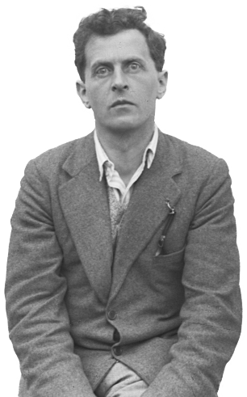

| Tractatus Logico-Philosophicus |
|
Logisch-Philosophische Abhandlung |
|
Truth is the form of all tautologies.
|
8 |
Die Wahrheit ist die Form aller Tautologien.
|
| Whereof one cannot speak, thereof one must be silent. |
7 |
Wovon man nicht sprechen kann, darüber muss man schweigen. |
| My propositions are elucidatory in this way: he who understands me finally recognizes them as senseless, when he has climbed out through them, on them, over them. (He must so to speak throw away the ladder, after he has climbed up on it.) He must surmount these propositions; then he sees the world rightly. |
6.54 |
Meine Sätze erläutern dadurch, dass sie der, welcher mich versteht, am Ende als unsinnig erkennt, wenn er durch sie—auf ihnen—über sie hinausgestiegen ist. (Er muss sozusagen die Leiter wegwerfen, nachdem er auf ihr hinaufgestiegen ist.) Er muss diese Sätze überwinden, dann sieht er die Welt richtig. |
| The right method of philosophy would be this. To say nothing except what can be said, i.e. the propositions of natural science, i.e. something that has nothing to do with philosophy: and then always, when someone else wished to say something metaphysical, to demonstrate to him that he had given no meaning to certain signs in his propositions. This method would be unsatisfying to the other—he would not have the feeling that we were teaching him philosophy—but it would be the only strictly correct method. |
6.53 |
Die richtige Methode der Philosophie wäre eigentlich die: Nichts zu sagen, als was sich sagen lässt, also Sätze der Naturwissenschaft—also etwas, was mit Philosophie nichts zu tun hat—, und dann immer, wenn ein anderer etwas Metaphysisches sagen wollte, ihm nachzuweisen, dass er gewissen Zeichen in seinen Sätzen keine Bedeutung gegeben hat. Diese Methode wäre für den anderen unbefriedigend—er hätte nicht das Gefühl, dass wir ihn Philosophie lehrten—aber sie wäre die einzig streng richtige. |
| There is indeed the inexpressible. This shows itself; it is the mystical. |
6.522 |
Es gibt allerdings Unaussprechliches. Dies zeigt sich, es ist das Mystische. |
| The solution of the problem of life is seen in the vanishing of this problem. (Is not this the reason why men to whom after long doubting the sense of life became clear, could not then say wherein this sense consisted?) |
6.521 |
Die Lösung des Problems des Lebens merkt man am Verschwinden dieses Problems. (Ist nicht dies der Grund, warum Menschen, denen der Sinn des Lebens nach langen Zweifeln klar wurde, warum diese dann nicht sagen konnten, worin dieser Sinn bestand.) |
| We feel that even if all possible scientific questions be answered, the problems of life have still not been touched at all. Of course there is then no question left, and just this is the answer. |
6.52 |
Wir fühlen, dass selbst, wenn alle möglichen wissenschaftlichen Fragen beantwortet sind, unsere Lebensprobleme noch gar nicht berührt sind. Freilich bleibt dann eben keine Frage mehr; und eben dies ist die Antwort. |
| Scepticism is not irrefutable, but palpably senseless, if it would doubt where a question cannot be asked. For doubt can only exist where there is a question; a question only where there is an answer, and this only where something can be said. |
6.51 |
Skeptizismus ist nicht unwiderleglich, sondern offenbar unsinnig, wenn er bezweifeln will, wo nicht gefragt werden kann. Denn Zweifel kann nur bestehen, wo eine Frage besteht; eine Frage nur, wo eine Antwort besteht, und diese nur, wo etwas gesagt werden kann. |
| For an answer which cannot be expressed the question too cannot be expressed. The riddle does not exist. If a question can be put at all, then it can also be answered. |
6.5 |
Zu einer Antwort, die man nicht aussprechen kann, kann man auch die Frage nicht aussprechen. Das Rätsel gibt es nicht. Wenn sich eine Frage überhaupt stellen lässt, so kann sie auch beantwortet werden. |
| The contemplation of the world sub specie aeterni is its contemplation as a limited whole. The feeling of the world as a limited whole is the mystical feeling. |
6.45 |
Die Anschauung der Welt sub specie aeterni ist ihre Anschauung als—begrenztes—Ganzes. Das Gefühl der Welt als begrenztes Ganzes ist das mystische. |
| Not how the world is, is the mystical, but that it is. |
6.44 |
Nicht wie die Welt ist, ist das Mystische, sondern dass sie ist. |
| The facts all belong only to the task and not to its performance. |
6.4321 |
Die Tatsachen gehören alle nur zur Aufgabe, nicht zur Lösung. |
| How the world is, is completely indifferent for what is higher. God does not reveal himself in the world. |
6.432 |
Wie die Welt ist, ist für das Höhere vollkommen gleichgültig. Gott offenbart sich nicht in der Welt. |
| The temporal immortality of the soul of man, that is to say, its eternal survival also after death, is not only in no way guaranteed, but this assumption in the first place will not do for us what we always tried to make it do. Is a riddle solved by the fact that I survive for ever? Is this eternal life not as enigmatic as our present one? The solution of the riddle of life in space and time lies outside space and time. (It is not problems of natural science which have to be solved.) |
6.4312 |
Die zeitliche Unsterblichkeit der Seele des Menschen, das heisst also ihr ewiges Fortleben auch nach dem Tode, ist nicht nur auf keine Weise verbürgt, sondern vor allem leistet diese Annahme gar nicht das, was man immer mit ihr erreichen wollte. Wird denn dadurch ein Rätsel gelöst, dass ich ewig fortlebe? Ist denn dieses ewige Leben dann nicht ebenso rätselhaft wie das gegenwärtige? Die Lösung des Rätsels des Lebens in Raum und Zeit liegt ausserhalb von Raum und Zeit. (Nicht Probleme der Naturwissenschaft sind ja zu lösen.) |
| Death is not an event of life. Death is not lived through. If by eternity is understood not endless temporal duration but timelessness, then he lives eternally who lives in the present. Our life is endless in the way that our visual field is without limit. |
6.4311 |
Der Tod ist kein Ereignis des Lebens. Den Tod erlebt man nicht. Wenn man unter Ewigkeit nicht unendliche Zeitdauer, sondern Unzeitlichkeit versteht, dann lebt der ewig, der in der Gegenwart lebt. Unser Leben ist ebenso endlos, wie unser Gesichtsfeld grenzenlos ist. |
| As in death, too, the world does not change, but ceases. |
6.431 |
Wie auch beim Tod die Welt sich nicht ändert, sondern aufhört. |
| If good or bad willing changes the world, it can only change the limits of the world, not the facts; not the things that can be expressed in language. In brief, the world must thereby become quite another. It must so to speak wax or wane as a whole. The world of the happy is quite another than that of the unhappy. |
6.43 |
Wenn das gute oder böse Wollen die Welt ändert, so kann es nur die Grenzen der Welt ändern, nicht die Tatsachen; nicht das, was durch die Sprache ausgedrückt werden kann. Kurz, die Welt muss dann dadurch überhaupt eine andere werden. Sie muss sozusagen als Ganzes abnehmen oder zunehmen. Die Welt des Glücklichen ist eine andere als die des Unglücklichen. |
| Of the will as the bearer of the ethical we cannot speak. And the will as a phenomenon is only of interest to psychology. |
6.423 |
Vom Willen als dem Träger des Ethischen kann nicht gesprochen werden. Und der Wille als Phänomen interessiert nur die Psychologie. |
| The first thought in setting up an ethical law of the form “thou shalt …” is: And what if I do not do it. But it is clear that ethics has nothing to do with punishment and reward in the ordinary sense. This question as to the consequences of an action must therefore be irrelevant. At least these consequences will not be events. For there must be something right in that formulation of the question. There must be some sort of ethical reward and ethical punishment, but this must lie in the action itself. (And this is clear also that the reward must be something acceptable, and the punishment something unacceptable.) |
6.422 |
Der erste Gedanke bei der Aufstellung eines ethischen Gesetzes von der Form „du sollst ....“ ist: Und was dann, wenn ich es nicht tue? Es ist aber klar, dass die Ethik nichts mit Strafe und Lohn im gewöhnlichen Sinne zu tun hat. Also muss diese Frage nach den Folgen einer Handlung belanglos sein.—Zum Mindesten dürfen diese Folgen nicht Ereignisse sein. Denn etwas muss doch an jener Fragestellung richtig sein. Es muss zwar eine Art von ethischem Lohn und ethischer Strafe geben, aber diese müssen in der Handlung selbst liegen. (Und das ist auch klar, dass der Lohn etwas Angenehmes, die Strafe etwas Unangenehmes sein muss.) |
| It is clear that ethics cannot be expressed. Ethics are transcendental. (Ethics and æsthetics are one.) |
6.421 |
Es ist klar, dass sich die Ethik nicht aussprechen lässt. Die Ethik ist transcendental. (Ethik und Aesthetik sind Eins.) |
| Hence also there can be no ethical propositions. Propositions cannot express anything higher. |
6.42 |
Darum kann es auch keine Sätze der Ethik geben. Sätze können nichts Höheres ausdrücken. |
| The sense of the world must lie outside the world. In the world everything is as it is and happens as it does happen. In it there is no value—and if there were, it would be of no value. If there is a value which is of value, it must lie outside all happening and being-so. For all happening and being-so is accidental. What makes it non-accidental cannot lie in the world, for otherwise this would again be accidental. It must lie outside the world. |
6.41 |
Der Sinn der Welt muss ausserhalb ihrer liegen. In der Welt ist alles wie es ist und geschieht alles wie es geschieht; es gibt in ihr keinen Wert—und wenn es ihn gäbe, so hätte er keinen Wert. Wenn es einen Wert gibt, der Wert hat, so muss er ausserhalb alles Geschehens und So-Seins liegen. Denn alles Geschehen und So-Sein ist zufällig. Was es nicht-zufällig macht, kann nicht in der Welt liegen, denn sonst wäre dies wieder zufällig. Es muss ausserhalb der Welt liegen. |
| All propositions are of equal value. |
6.4 |
Alle Sätze sind gleichwertig. |
| For two colours, e.g. to be at one place in the visual field, is impossible, logically impossible, for it is excluded by the logical structure of colour. Let us consider how this contradiction presents itself in physics. Somewhat as follows: That a particle cannot at the same time have two velocities, i.e. that at the same time it cannot be in two places, i.e. that particles in different places at the same time cannot be identical. (It is clear that the logical product of two elementary propositions can neither be a tautology nor a contradiction. The assertion that a point in the visual field has two different colours at the same time, is a contradiction.) |
6.3751 |
Dass z. B. zwei Farben zugleich an einem Ort des Gesichtsfeldes sind, ist unmöglich und zwar logisch unmöglich, denn es ist durch die logische Struktur der Farbe ausgeschlossen. Denken wir daran, wie sich dieser Widerspruch in der Physik darstellt: Ungefähr so, dass ein Teilchen nicht zu gleicher Zeit zwei Geschwindigkeiten haben kann; das heisst, dass es nicht zu gleicher Zeit an zwei Orten sein kann; das heisst, dass Teilchen an verschiedenen Orten zu Einer Zeit nicht identisch sein können. (Es ist klar, dass das logische Produkt zweier Elementarsätze weder eine Tautologie noch eine Kontradiktion sein kann. Die Aussage, dass ein Punkt des Gesichtsfeldes zu gleicher Zeit zwei verschiedene Farben hat, ist eine Kontradiktion.) |
| As there is only a logical necessity, so there is only a logical impossibility. |
6.375 |
Wie es nur eine logische Notwendigkeit gibt, so gibt es auch nur eine logische Unmöglichkeit. |
| Even if everything we wished were to happen, this would only be, so to speak, a favour of fate, for there is no logical connexion between will and world, which would guarantee this, and the assumed physical connexion itself we could not again will. |
6.374 |
Auch wenn alles, was wir wünschen, geschähe, so wäre dies doch nur, sozusagen, eine Gnade des Schicksals, denn es ist kein logischer Zusammenhang zwischen Willen und Welt, der dies verbürgte, und den angenommenen physikalischen Zusammenhang könnten wir doch nicht selbst wieder wollen. |
| The world is independent of my will. |
6.373 |
Die Welt ist unabhängig von meinem Willen. |
| So people stop short at natural laws as at something unassailable, as did the ancients at God and Fate. And they both are right and wrong. But the ancients were clearer, in so far as they recognized one clear conclusion, whereas in the modern system it should appear as though everything were explained. |
6.372 |
So bleiben sie bei den Naturgesetzen als bei etwas Unantastbarem stehen, wie die älteren bei Gott und dem Schicksal. Und sie haben ja beide Recht, und Unrecht. Die Alten sind allerdings insofern klarer, als sie einen klaren Abschluss anerkennen, während es bei dem neuen System scheinen soll, als sei alles erklärt. |
| At the basis of the whole modern view of the world lies the illusion that the so-called laws of nature are the explanations of natural phenomena. |
6.371 |
Der ganzen modernen Weltanschauung liegt die Täuschung zugrunde, dass die sogenannten Naturgesetze die Erklärungen der Naturerscheinungen seien. |
| A necessity for one thing to happen because another has happened does not exist. There is only logical necessity. |
6.37 |
Einen Zwang, nach dem Eines geschehen müsste, weil etwas anderes geschehen ist, gibt es nicht. Es gibt nur eine logische Notwendigkeit. |
| That the sun will rise to-morrow, is an hypothesis; and that means that we do not know whether it will rise. |
6.36311 |
Dass die Sonne morgen aufgehen wird, ist eine Hypothese; und das heisst: wir wissen nicht, ob sie aufgehen wird. |
| This process, however, has no logical foundation but only a psychological one. It is clear that there are no grounds for believing that the simplest course of events will really happen. |
6.3631 |
Dieser Vorgang hat aber keine logische, sondern nur eine psychologische Begründung. Es ist klar, dass kein Grund vorhanden ist, zu glauben, es werde nun auch wirklich der einfachste Fall eintreten. |
| The process of induction is the process of assuming the simplest law that can be made to harmonize with our experience. |
6.363 |
Der Vorgang der Induktion besteht darin, dass wir das einfachste Gesetz annehmen, das mit unseren Erfahrungen in Einklang zu bringen ist. |
| What can be described can happen too, and what is excluded by the law of causality cannot be described. |
6.362 |
Was sich beschreiben lässt, das kann auch geschehen, und was das Kausalitätsgesetz ausschliessen soll, das lässt sich auch nicht beschreiben. |
| The Kantian problem of the right and left hand which cannot be made to cover one another already exists in the plane, and even in one-dimensional space; where the two congruent figures a and b cannot be made to cover one another without moving them out of this space. The right and left hand are in fact completely congruent. And the fact that they cannot be made to cover one another has nothing to do with it. [Figure] A right-hand glove could be put on a left hand if it could be turned round in four-dimensional space. |
6.36111 |
Das Kant‘sche Problem von der rechten und linken Hand, die man nicht zur Deckung bringen kann, besteht schon in der Ebene, ja im eindimensionalen Raum, wo die beiden kongruenten Figuren a und b auch nicht zur Deckung gebracht werden können, ohne aus diesem Raum herausbewegt zu werden. Rechte und linke Hand sind tatsächlich vollkommen kongruent. Und dass man sie nicht zur Deckung bringen kann, hat damit nichts zu tun. [Abbildung] Den rechten Handschuh könnte man an die linke Hand ziehen, wenn man ihn im vierdimensionalen Raum umdrehen könnte. |
| We cannot compare any process with the “passage of time”—there is no such thing—but only with another process (say, with the movement of the chronometer). Hence the description of the temporal sequence of events is only possible if we support ourselves on another process. It is exactly analogous for space. When, for example, we say that neither of two events (which mutually exclude one another) can occur, because there is no cause why the one should occur rather than the other, it is really a matter of our being unable to describe one of the two events unless there is some sort of asymmetry. And if there is such an asymmetry, we can regard this as the cause of the occurrence of the one and of the non-occurrence of the other. |
6.3611 |
Wir können keinen Vorgang mit dem „Ablauf der Zeit“ vergleichen—diesen gibt es nicht—, sondern nur mit einem anderen Vorgang (etwa mit dem Gang des Chronometers). Daher ist die Beschreibung des zeitlichen Verlaufs nur so möglich, dass wir uns auf einen anderen Vorgang stützen. Ganz Analoges gilt für den Raum. Wo man z. B. sagt, es könne keines von zwei Ereignissen (die sich gegenseitig ausschliessen) eintreten, weil keine Ursache vorhanden sei, warum das eine eher als das andere eintreten solle, da handelt es sich in Wirklichkeit darum, dass man gar nicht eines der beiden Ereignisse beschreiben kann, wenn nicht irgend eine Asymmetrie vorhanden ist. Und wenn eine solche Asymmetrie vorhanden ist, so können wir diese als Ursache des Eintreffens des einen und Nicht-Eintreffens des anderen auffassen. |
| In the terminology of Hertz we might say: Only uniform connexions are thinkable. |
6.361 |
In der Ausdrucksweise Hertz‘s könnte man sagen: Nur gesetzmässige Zusammenhänge sind denkbar. |
| If there were a law of causality, it might run: “There are natural laws”. But that can clearly not be said: it shows itself. |
6.36 |
Wenn es ein Kausalitätsgesetz gäbe, so könnte es lauten: „Es gibt Naturgesetze“. Aber freilich kann man das nicht sagen: es zeigt sich. |
| Although the spots in our picture are geometrical figures, geometry can obviously say nothing about their actual form and position. But the network is purely geometrical, and all its properties can be given a priori. Laws, like the law of causation, etc., treat of the network and not of what the network described. |
6.35 |
Obwohl die Flecke in unserem Bild geometrische Figuren sind, so kann doch selbstverständlich die Geometrie gar nichts über ihre tatsächliche Form und Lage sagen. Das Netz aber ist rein geometrisch, alle seine Eigenschaften können a priori angegeben werden. Gesetze, wie der Satz vom Grunde, etc., handeln vom Netz, nicht von dem, was das Netz beschreibt. |
| We must not forget that the description of the world by mechanics is always quite general. There is, for example, never any mention of particular material points in it, but always only of some points or other. |
6.3432 |
Wir dürfen nicht vergessen, dass die Weltbeschreibung durch die Mechanik immer die ganz allgemeine ist. Es ist in ihr z. B. nie von bestimmten materiellen Punkten die Rede, sondern immer nur von irgend welchen. |
| Through the whole apparatus of logic the physical laws still speak of the objects of the world. |
6.3431 |
Durch den ganzen logischen Apparat hindurch sprechen die physikalischen Gesetze doch von den Gegenständen der Welt. |
| Mechanics is an attempt to construct according to a single plan all true propositions which we need for the description of the world. |
6.343 |
Die Mechanik ist ein Versuch, alle wahren Sätze, die wir zur Weltbeschreibung brauchen, nach Einem Plane zu konstruieren. |
| And now we see the relative position of logic and mechanics. (We could construct the network out of figures of different kinds, as out of triangles and hexagons together.) That a picture like that instanced above can be described by a network of a given form asserts nothing about the picture. (For this holds of every picture of this kind.) But this does characterize the picture, the fact, namely, that it can be completely described by a definite net of definite fineness. So too the fact that it can be described by Newtonian mechanics asserts nothing about the world; but this asserts something, namely, that it can be described in that particular way in which it is described, as is indeed the case. The fact, too, that it can be described more simply by one system of mechanics than by another says something about the world. |
6.342 |
Und nun sehen wir die gegenseitige Stellung von Logik und Mechanik. (Man könnte das Netz auch aus verschiedenartigen Figuren etwa aus Dreiecken und Sechsecken bestehen lassen.) Dass sich ein Bild, wie das vorhin erwähnte, durch ein Netz von gegebener Form beschreiben lässt, sagt über das Bild nichts aus. (Denn dies gilt für jedes Bild dieser Art.) Das aber charakterisiert das Bild, dass es sich durch ein bestimmtes Netz von bestimmter Feinheit vollständig beschreiben lässt. So auch sagt es nichts über die Welt aus, dass sie sich durch die Newtonsche Mechanik beschreiben lässt; wohl aber, dass sie sich so durch jene beschreiben lässt, wie dies eben der Fall ist. Auch das sagt etwas über die Welt, dass sie sich durch die eine Mechanik einfacher beschreiben lässt, als durch die andere. |
| Newtonian mechanics, for example, brings the description of the universe to a unified form. Let us imagine a white surface with irregular black spots. We now say: Whatever kind of picture these make I can always get as near as I like to its description, if I cover the surface with a sufficiently fine square network and now say of every square that it is white or black. In this way I shall have brought the description of the surface to a unified form. This form is arbitrary, because I could have applied with equal success a net with a triangular or hexagonal mesh. It can happen that the description would have been simpler with the aid of a triangular mesh; that is to say we might have described the surface more accurately with a triangular, and coarser, than with the finer square mesh, or vice versa, and so on. To the different networks correspond different systems of describing the world. Mechanics determine a form of description by saying: All propositions in the description of the world must be obtained in a given way from a number of given propositions—the mechanical axioms. It thus provides the bricks for building the edifice of science, and says: Whatever building thou wouldst erect, thou shalt construct it in some manner with these bricks and these alone. (As with the system of numbers one must be able to write down any arbitrary number, so with the system of mechanics one must be able to write down any arbitrary physical proposition.) |
6.341 |
Die Newtonsche Mechanik z. B. bringt die Weltbeschreibung auf eine einheitliche Form. Denken wir uns eine weisse Fläche, auf der unregelmässige schwarze Flecken wären. Wir sagen nun: Was für ein Bild immer hierdurch entsteht, immer kann ich seiner Beschreibung beliebig nahe kommen, indem ich die Fläche mit einem entsprechend feinen quadratischen Netzwerk bedecke und nun von jedem Quadrat sage, dass es weiss oder schwarz ist. Ich werde auf diese Weise die Beschreibung der Fläche auf eine einheitliche Form gebracht haben. Diese Form ist beliebig, denn ich hätte mit dem gleichen Erfolge ein Netz aus dreieckigen oder sechseckigen Maschen verwenden können. Es kann sein, dass die Beschreibung mit Hilfe eines Dreiecks-Netzes einfacher geworden wäre; das heisst, dass wir die Fläche mit einem gröberen Dreiecks-Netz genauer beschreiben könnten, als mit einem feineren quadratischen (oder umgekehrt) usw. Den verschiedenen Netzen entsprechen verschiedene Systeme der Weltbeschreibung. Die Mechanik bestimmt eine Form der Weltbeschreibung, indem sie sagt: Alle Sätze der Weltbeschreibung müssen aus einer Anzahl gegebener Sätze—den mechanischen Axiomen—auf eine gegebene Art und Weise erhalten werden. Hierdurch liefert sie die Bausteine zum Bau des wissenschaftlichen Gebäudes und sagt: Welches Gebäude immer du aufführen willst, jedes musst du irgendwie mit diesen und nur diesen Bausteinen zusammenbringen. (Wie man mit dem Zahlensystem jede beliebige Anzahl, so muss man mit dem System der Mechanik jeden beliebigen Satz der Physik hinschreiben können.) |
| All propositions, such as the law of causation, the law of continuity in nature, the law of least expenditure in nature, etc. etc., all these are a priori intuitions of possible forms of the propositions of science. |
6.34 |
Alle jene Sätze, wie der Satz vom Grunde, von der Kontinuität in der Natur, vom kleinsten Aufwande in der Natur etc. etc., alle diese sind Einsichten a priori über die mögliche Formgebung der Sätze der Wissenschaft. |
| We do not believe a priori in a law of conservation, but we know a priori the possibility of a logical form. |
6.33 |
Wir glauben nicht a priori an ein Erhaltungsgesetz, sondern wir wissen a priori die Möglichkeit einer logischen Form. |
| Men had indeed an idea that there must be a “law of least action”, before they knew exactly how it ran. (Here, as always, the a priori certain proves to be something purely logical.) |
6.3211 |
Man hat ja auch davon eine Ahnung gehabt, dass es ein „Gesetz der kleinsten Wirkung“ geben müsse, ehe man genau wusste, wie es lautete. (Hier, wie immer, stellt sich das a priori Gewisse als etwas rein Logisches heraus.) |
| “Law of Causality” is a class name. And as in mechanics there are, for instance, minimum-laws, such as that of least action, so in physics there are causal laws, laws of the causality form. |
6.321 |
„Kausalitätsgesetz“, das ist ein Gattungsname. Und wie es in der Mechanik, sagen wir, Minimum-Gesetze gibt,—etwa der kleinsten Wirkung—so gibt es in der Physik Kausalitätsgesetze, Gesetze von der Kausalitätsform. |
| The law of causality is not a law but the form of a law. |
6.32 |
Das Kausalitätsgesetz ist kein Gesetz, sondern die Form eines Gesetzes. |
| The so-called law of induction cannot in any case be a logical law, for it is obviously a significant proposition.—And therefore it cannot be a law a priori either. |
6.31 |
Das sogenannte Gesetz der Induktion kann jedenfalls kein logisches Gesetz sein, denn es ist offenbar ein sinnvoller Satz.—Und darum kann es auch kein Gesetz a priori sein. |
| Logical research means the investigation of all regularity. And outside logic all is accident. |
6.3 |
Die Erforschung der Logik bedeutet die Erforschung aller Gesetzmässigkeit. Und ausserhalb der Logik ist alles Zufall. |
| Thus the proof of the proposition 2 × 2 = 4 runs: (Ων)μ’x = Ων×μ’x Def. [ Ω2 × 2’x = (Ω2)2’x = (Ω2)1 + 1’x = Ω2’Ω2’x = Ω1 + 1’Ω1 + 1’x; = (Ω’Ω)’(Ω’Ω)’x = Ω’Ω’Ω’Ω’x = Ω1 + 1 + 1 + 1’x = Ω4’x. ] |
6.241 |
So lautet der Beweis des Satzes 2 × 2 = 4: (Ων)μ‘x = Ων×μ‘x Def. [ Ω2 × 2‘x = (Ω2)2‘x = (Ω2)1 + 1‘x = Ω2‘Ω2‘x = Ω1 + 1‘Ω1 + 1‘x; = (Ω‘Ω)‘(Ω‘Ω)‘x = Ω‘Ω‘Ω‘Ω‘x = Ω1 + 1 + 1 + 1‘x = Ω4‘x. ] |
| The method by which mathematics arrives at its equations is the method of substitution. For equations express the substitutability of two expressions, and we proceed from a number of equations to new equations, replacing expressions by others in accordance with the equations. |
6.24 |
Die Methode der Mathematik, zu ihren Gleichungen zu kommen, ist die Substitutionsmethode. Denn die Gleichungen drücken die Ersetzbarkeit zweier Ausdrücke aus und wir schreiten von einer Anzahl von Gleichungen zu neuen Gleichungen vor, indem wir, den Gleichungen entsprechend, Ausdrücke durch andere ersetzen. |
| The essential of mathematical method is working with equations. On this method depends the fact that every proposition of mathematics must be self-intelligible. |
6.2341 |
Das Wesentliche der mathematischen Methode ist es, mit Gleichungen zu arbeiten. Auf dieser Methode beruht es nämlich, dass jeder Satz der Mathematik sich von selbst verstehen muss. |
| Mathematics is a method of logic. |
6.234 |
Die Mathematik ist eine Methode der Logik. |
| The process of calculation brings about just this intuition. Calculation is not an experiment. |
6.2331 |
Der Vorgang des Rechnens vermittelt eben diese Anschauung. Die Rechnung ist kein Experiment. |
| To the question whether we need intuition for the solution of mathematical problems it must be answered that language itself here supplies the necessary intuition. |
6.233 |
Die Frage, ob man zur Lösung der mathematischen Probleme die Anschauung brauche, muss dahin beantwortet werden, dass eben die Sprache hier die nötige Anschauung liefert. |
| The equation characterizes only the standpoint from which I consider the two expressions, that is to say the standpoint of their equality of meaning. |
6.2323 |
Die Gleichung kennzeichnet nur den Standpunkt, von welchem ich die beiden Ausdrücke betrachte, nämlich vom Standpunkte ihrer Bedeutungsgleichheit. |
| The identity of the meaning of two expressions cannot be asserted. For in order to be able to assert anything about their meaning, I must know their meaning, and if I know their meaning, I know whether they mean the same or something different. |
6.2322 |
Die Identität der Bedeutung zweier Ausdrücke lässt sich nicht behaupten. Denn um etwas von ihrer Bedeutung behaupten zu können, muss ich ihre Bedeutung kennen: und indem ich ihre Bedeutung kenne, weiss ich, ob sie dasselbe oder verschiedenes bedeuten. |
| And, that the propositions of mathematics can be proved means nothing else than that their correctness can be seen without our having to compare what they express with the facts as regards correctness. |
6.2321 |
Und, dass die Sätze der Mathematik bewiesen werden können, heisst ja nichts anderes, als dass ihre Richtigkeit einzusehen ist, ohne dass das, was sie ausdrücken, selbst mit den Tatsachen auf seine Richtigkeit hin verglichen werden muss. |
| Frege says that these expressions have the same meaning but different senses. But what is essential about equation is that it is not necessary in order to show that both expressions, which are connected by the sign of equality, have the same meaning: for this can be perceived from the two expressions themselves. |
6.232 |
Frege sagt, die beiden Ausdrücke haben dieselbe Bedeutung, aber verschiedenen Sinn. Das Wesentliche an der Gleichung ist aber, dass sie nicht notwendig ist, um zu zeigen, dass die beiden Ausdrücke, die das Gleichheitszeichen verbindet, dieselbe Bedeutung haben, da sich dies aus den beiden Ausdrücken selbst ersehen lässt. |
| It is a property of affirmation that it can be conceived as double denial. It is a property of “1 + 1 + 1 + 1” that it can be conceived as “(1 + 1) + (1 + 1)”. |
6.231 |
Es ist eine Eigenschaft der Bejahung, dass man sie als doppelte Verneinung auffassen kann. Es ist eine Eigenschaft von „1 + 1 + 1 + 1“, dass man es als „(1 + 1) + (1 + 1)“ auffassen kann. |
| If two expressions are connected by the sign of equality, this means that they can be substituted for one another. But whether this is the case must show itself in the two expressions themselves. It characterizes the logical form of two expressions, that they can be substituted for one another. |
6.23 |
Wenn zwei Ausdrücke durch das Gleichheitszeichen verbunden werden, so heisst das, sie sind durch einander ersetzbar. Ob dies aber der Fall ist muss sich an den beiden Ausdrücken selbst zeigen. Es charakterisiert die logische Form zweier Ausdrücke, dass sie durch einander ersetzbar sind. |
| The logic of the world which the propositions of logic show in tautologies, mathematics shows in equations. |
6.22 |
Die Logik der Welt, die die Sätze der Logik in den Tautologien zeigen, zeigt die Mathematik in den Gleichungen. |
| In life it is never a mathematical proposition which we need, but we use mathematical propositions only in order to infer from propositions which do not belong to mathematics to others which equally do not belong to mathematics. (In philosophy the question “Why do we really use that word, that proposition?” constantly leads to valuable results.) |
6.211 |
Im Leben ist es ja nie der mathematische Satz, den wir brauchen, sondern wir benützen den mathematischen Satz nur, um aus Sätzen, welche nicht der Mathematik angehören, auf andere zu schliessen, welche gleichfalls nicht der Mathematik angehören. (In der Philosophie führt die Frage „wozu gebrauchen wir eigentlich jenes Wort, jenen Satz“ immer wieder zu wertvollen Einsichten.) |
| Mathematical propositions express no thoughts. |
6.21 |
Der Satz der Mathematik drückt keinen Gedanken aus. |
| Mathematics is a logical method. The propositions of mathematics are equations, and therefore pseudo-propositions. |
6.2 |
Die Mathematik ist eine logische Methode. Die Sätze der Mathematik sind Gleichungen also Scheinsätze. |
| Logic is not a theory but a reflexion of the world. Logic is transcendental. |
6.13 |
Die Logik ist keine Lehre, sondern ein Spiegelbild der Welt. Die Logik ist transcendental. |
| It is clear that the number of “primitive propositions of logic” is arbitrary, for we could deduce logic from one primitive proposition by simply forming, for example, the logical product of Frege’s primitive propositions. (Frege would perhaps say that this would no longer be immediately self-evident. But it is remarkable that so exact a thinker as Frege should have appealed to the degree of self-evidence as the criterion of a logical proposition.) |
6.1271 |
Es ist klar, dass die Anzahl der „logischen Grundgesetze“ willkürlich ist, denn man könnte die Logik ja aus Einem Grundgesetz ableiten, indem man einfach z. B. aus Freges Grundgesetzen das logische Produkt bildet. (Frege würde vielleicht sagen, dass dieses Grundgesetz nun nicht mehr unmittelbar einleuchte. Aber es ist merkwürdig, dass ein so exakter Denker wie Frege sich auf den Grad des Einleuchtens als Kriterium des logischen Satzes berufen hat.) |
| All propositions of logic are of equal rank; there are not some which are essentially primitive and others deduced from these. Every tautology itself shows that it is a tautology. |
6.127 |
Alle Sätze der Logik sind gleichberechtigt, es gibt unter ihnen nicht wesentlich Grundgesetze und abgeleitete Sätze. Jede Tautologie zeigt selbst, dass sie eine Tautologie ist. |
| Logic can always be conceived to be such that every proposition is its own proof. |
6.1265 |
Immer kann man die Logik so auffassen, dass jeder Satz sein eigener Beweis ist. |
| The significant proposition asserts something, and its proof shows that it is so; in logic every proposition is the form of a proof. Every proposition of logic is a modus ponens presented in signs. (And the modus ponens can not be expressed by a proposition.) |
6.1264 |
Der sinnvolle Satz sagt etwas aus, und sein Beweis zeigt, dass es so ist; in der Logik ist jeder Satz die Form eines Beweises. Jeder Satz der Logik ist ein in Zeichen dargestellter modus ponens. (Und den modus ponens kann man nicht durch einen Satz ausdrücken.) |
| It would be too remarkable, if one could prove a significant proposition logically from another, and a logical proposition also. It is clear from the beginning that the logical proof of a significant proposition and the proof in logic must be two quite different things. |
6.1263 |
Es wäre ja auch zu merkwürdig, wenn man einen sinnvollen Satz logisch aus anderen beweisen könnte, und einen logischen Satz auch. Es ist von vornherein klar, dass der logische Beweis eines sinnvollen Satzes und der Beweis in der Logik zwei ganz verschiedene Dinge sein müssen. |
| Proof in logic is only a mechanical expedient to facilitate the recognition of tautology, where it is complicated. |
6.1262 |
Der Beweis in der Logik ist nur ein mechanisches Hilfsmittel zum leichteren Erkennen der Tautologie, wo sie kompliziert ist. |
| In logic process and result are equivalent. (Therefore no surprises.) |
6.1261 |
In der Logik sind Prozess und Resultat äquivalent. (Darum keine Überraschung.) |
| Whether a proposition belongs to logic can be determined by determining the logical properties of the symbol. And this we do when we prove a logical proposition. For without troubling ourselves about a sense and a meaning, we form the logical propositions out of others by mere symbolic rules. We prove a logical proposition by creating it out of other logical propositions by applying in succession certain operations, which again generate tautologies out of the first. (And from a tautology only tautologies follow.) Naturally this way of showing that its propositions are tautologies is quite unessential to logic. Because the propositions, from which the proof starts, must show without proof that they are tautologies. |
6.126 |
Ob ein Satz der Logik angehört, kann man berechnen, indem man die logischen Eigenschaften des Symbols berechnet. Und dies tun wir, wenn wir einen logischen Satz „beweisen“. Denn, ohne uns um einen Sinn und eine Bedeutung zu kümmern, bilden wir den logischen Satz aus anderen nach blossen Zeichenregeln. Der Beweis der logischen Sätze besteht darin, dass wir sie aus anderen logischen Sätzen durch successive Anwendung gewisser Operationen entstehen lassen, die aus den ersten immer wieder Tautologien erzeugen. (Und zwar folgen aus einer Tautologie nur Tautologien.) Natürlich ist diese Art zu zeigen, dass ihre Sätze Tautologien sind, der Logik durchaus unwesentlich. Schon darum, weil die Sätze, von welchen der Beweis ausgeht, ja ohne Beweis zeigen müssen, dass sie Tautologien sind. |
| Hence there can never be surprises in logic. |
6.1251 |
Darum kann es in der Logik auch nie Überraschungen geben. |
| It is possible, even in the old logic, to give at the outset a description of all “true” logical propositions. |
6.125 |
Es ist möglich, und zwar auch nach der alten Auffassung der Logik, von vornherein eine Beschreibung aller „wahren“ logischen Sätze zu geben. |
| The logical propositions describe the scaffolding of the world, or rather they present it. They “treat” of nothing. They presuppose that names have meaning, and that elementary propositions have sense. And this is their connexion with the world. It is clear that it must show something about the world that certain combinations of symbols—which essentially have a definite character—are tautologies. Herein lies the decisive point. We said that in the symbols which we use much is arbitrary, much not. In logic only this expresses: but this means that in logic it is not we who express, by means of signs, what we want, but in logic the nature of the essentially necessary signs itself asserts. That is to say, if we know the logical syntax of any sign language, then all the propositions of logic are already given. |
6.124 |
Die logischen Sätze beschreiben das Gerüst der Welt, oder vielmehr, sie stellen es dar. Sie „handeln“ von nichts. Sie setzen voraus, dass Namen Bedeutung, und Elementarsätze Sinn haben: Und dies ist ihre Verbindung mit der Welt. Es ist klar, dass es etwas über die Welt anzeigen muss, dass gewisse Verbindungen von Symbolen—welche wesentlich einen bestimmten Charakter haben—Tautologien sind. Hierin liegt das Entscheidende. Wir sagten, manches an den Symbolen, die wir gebrauchen, wäre willkürlich, manches nicht. In der Logik drückt nur dieses aus: Dass heisst aber, in der Logik drücken nicht wir mit Hilfe der Zeichen aus, was wir wollen, sondern in der Logik sagt die Natur der naturnotwendigen Zeichen selbst aus: Wenn wir die logische Syntax irgend einer Zeichensprache kennen, dann sind bereits alle Sätze der Logik gegeben. |
| We can imagine a world in which the axiom of reducibility is not valid. But it is clear that logic has nothing to do with the question whether our world is really of this kind or not. |
6.1233 |
Es lässt sich eine Welt denken, in der das Axiom of reducibility nicht gilt. Es ist aber klar, dass die Logik nichts mit der Frage zu schaffen hat, ob unsere Welt wirklich so ist oder nicht. |
| Logical general validity, we could call essential as opposed to accidental general validity, e.g. of the proposition “all men are mortal”. Propositions like Russell’s “axiom of reducibility” are not logical propositions, and this explains our feeling that, if true, they can only be true by a happy chance. |
6.1232 |
Die logische Allgemeingültigkeit könnte man wesentlich nennen, im Gegensatz zu jener zufälligen, etwa des Satzes „alle Menschen sind sterblich“. Sätze, wie Russells „Axiom of reducibility“ sind nicht logische Sätze, und dies erklärt unser Gefühl: Dass sie, wenn wahr, so doch nur durch einen günstigen Zufall wahr sein könnten. |
| The mark of logical propositions is not their general validity. To be general is only to be accidentally valid for all things. An ungeneralized proposition can be tautologous just as well as a generalized one. |
6.1231 |
Das Anzeichen des logischen Satzes ist nicht die Allgemeingültigkeit. Allgemein sein, heisst ja nur: Zufälligerweise für alle Dinge gelten. Ein unverallgemeinerter Satz kann ja ebensowohl tautologisch sein, als ein verallgemeinerter. |
| It is clear that the laws of logic cannot themselves obey further logical laws. (There is not, as Russell supposed, for every “type” a special law of contradiction; but one is sufficient, since it is not applied to itself.) |
6.123 |
Es ist klar: Die logischen Gesetze dürfen nicht selbst wieder logischen Gesetzen unterstehen. (Es gibt nicht, wie Russell meinte, für jede „Type“ ein eigenes Gesetz des Widerspruches, sondern Eines genügt, da es auf sich selbst nicht angewendet wird.) |
| It also becomes clear why logic has been called the theory of forms and of inference. |
6.1224 |
Es wird jetzt auch klar, warum die Logik die Lehre von den Formen und vom Schliessen genannt wurde. |
| It now becomes clear why we often feel as though “logical truths” must be “postulated” by us. We can in fact postulate them in so far as we can postulate an adequate notation. |
6.1223 |
Nun wird klar, warum man oft fühlte, als wären die „logischen Wahrheiten“ von uns zu „fordern“: Wir können sie nämlich insofern fordern, als wir eine genügende Notation fordern können. |
| This throws light on the question why logical propositions can no more be empirically established than they can be empirically refuted. Not only must a proposition of logic be incapable of being contradicted by any possible experience, but it must also be incapable of being established by any such. |
6.1222 |
Dies wirft ein Licht auf die Frage, warum die logischen Sätze nicht durch die Erfahrung bestätigt werden können, ebenso wenig, wie sie durch die Erfahrung widerlegt werden können. Nicht nur muss ein Satz der Logik durch keine mögliche Erfahrung widerlegt werden können, sondern er darf auch nicht durch eine solche bestätigt werden können. |
| If for example two propositions “p” and “q” give a tautology in the connexion “p ⊃ q”, then it is clear that q follows from p. E.g. that “q” follows from “p ⊃ q . p” we see from these two propositions themselves, but we can also show it by combining them to “p ⊃ q . p : ⊃ : q” and then showing that this is a tautology. |
6.1221 |
Ergeben z. B. zwei Sätze „p“ und „q“ in der Verbindung „p ⊃ q“ eine Tautologie, so ist klar, dass q aus p folgt. Dass z. B. „q“ aus „p ⊃ q . p“ folgt, ersehen wir aus diesen beiden Sätzen selbst, aber wir können es auch so zeigen, indem wir sie zu „p ⊃ q . p : ⊃ : q“ verbinden und nun zeigen, dass dies eine Tautologie ist. |
| Whence it follows that we can get on without logical propositions, for we can recognize in an adequate notation the formal properties of the propositions by mere inspection. |
6.122 |
Daraus ergibt sich, dass wir auch ohne die logischen Sätze auskommen können, da wir ja in einer entsprechenden Notation die formalen Eigenschaften der Sätze durch das blosse Ansehen dieser Sätze erkennen können. |
| The propositions of logic demonstrate the logical properties of propositions, by combining them into propositions which say nothing. This method could be called a zero-method. In a logical proposition propositions are brought into equilibrium with one another, and the state of equilibrium then shows how these propositions must be logically constructed. |
6.121 |
Die Sätze der Logik demonstrieren die logischen Eigenschaften der Sätze, indem sie sie zu nichtssagenden Sätzen verbinden. Diese Methode könnte man auch eine Nullmethode nennen. Im logischen Satz werden Sätze miteinander ins Gleichgewicht gebracht und der Zustand des Gleichgewichts zeigt dann an, wie diese Sätze logisch beschaffen sein müssen. |
| In order to recognize a tautology as such, we can, in cases in which no sign of generality occurs in the tautology, make use of the following intuitive method: I write instead of “p”, “q”, “r”, etc., “TpF”, “TqF”, “TrF”, etc. The truth-combinations I express by brackets, e.g.: [Figure] and the co-ordination of the truth or falsity of the whole proposition with the truth-combinations of the truth-arguments by lines in the following way: [Figure] This sign, for example, would therefore present the proposition p ⊃ q. Now I will proceed to inquire whether such a proposition as ~(p . ~p) (The Law of Contradiction) is a tautology. The form “~ξ” is written in our notation [Figure] the form “ξ . η” thus:— [Figure] Hence the proposition ~(p . ~q) runs thus:— [Figure] If here we put “p” instead of “q” and examine the combination of the outermost T and F with the innermost, it is seen that the truth of the whole proposition is co-ordinated with all the truth-combinations of its argument, its falsity with none of the truth-combinations. |
6.1203 |
Um eine Tautologie als solche zu erkennen, kann man sich, in den Fällen, in welchen in der Tautologie keine Allgemeinheitsbezeichnung vorkommt, folgender anschaulichen Methode bedienen: Ich schreibe statt „p“, „q“, „r“ etc. „WpF“, „WqF“, „WrF“ etc. Die Wahrheitskombinationen drücke ich durch Klammern aus. z. B.: [Abbildung] und die Zuordnung der Wahr- oder Falschheit des ganzen Satzes und der Wahrheitskombinationen der Wahrheitsargumente durch Striche auf folgende Weise: [Abbildung] Dies Zeichen würde also z. B. den Satz p ⊃ q darstellen. Nun will ich z. B. den Satz ~(p . ~p) (Gesetz des Widerspruchs) daraufhin untersuchen, ob er eine Tautologie ist. Die Form „~ξ“ wird in unserer Notation [Abbildung] geschrieben; die Form „ξ . η“ so: [Abbildung] Daher lautet der Satz ~(p . ~q) so: [Abbildung] Setzen wir hier statt „q“ „p“ ein und untersuchen die Verbindung der äussersten W und F mit den innersten, so ergibt sich, dass die Wahrheit des ganzen Satzes allen Wahrheitskombinationen seines Argumentes, seine Falschheit keiner der Wahrheitskombinationen zugeordnet ist. |
| It is clear that we could have used for this purpose contradictions instead of tautologies. |
6.1202 |
Es ist klar, dass man zu demselben Zweck statt der Tautologien auch die Kontradiktionen verwenden könnte. |
| That e.g. the propositions “p” and “~p” in the connexion “~(p . ~p)” give a tautology shows that they contradict one another. That the propositions “p ⊃ q”, “p” and “q” connected together in the form “(p ⊃ q) . (p) : ⊃ : (q)” give a tautology shows that q follows from p and p ⊃ q. That “(x) . fx : ⊃ : fa” is a tautology shows that fa follows from (x) . fx, etc. etc. |
6.1201 |
Dass z. B. die Sätze „p“ und „~p“ in der Verbindung „~(p . ~p)“ eine Tautologie ergeben, zeigt, dass sie einander widersprechen. Dass die Sätze „p ⊃ q“, „p“ und „q“ in der Form „(p ⊃ q) . (p) : ⊃ : (q)“ miteinander verbunden eine Tautologie ergeben, zeigt, dass q aus p und p ⊃ q folgt. Dass „(x) . fx : ⊃ : fa“ eine Tautologie ist, dass fa aus (x) . fx folgt. etc. etc. |
| The fact that the propositions of logic are tautologies shows the formal—logical—properties of language, of the world. That its constituent parts connected together in this way give a tautology characterizes the logic of its constituent parts. In order that propositions connected together in a definite way may give a tautology they must have definite properties of structure. That they give a tautology when so connected shows therefore that they possess these properties of structure. |
6.12 |
Dass die Sätze der Logik Tautologien sind, das zeigt die formalen—logischen—Eigenschaften der Sprache, der Welt. Dass ihre Bestandteile so verknüpft eine Tautologie ergeben, das charakterisiert die Logik ihrer Bestandteile. Damit Sätze, auf bestimmte Art und Weise verknüpft, eine Tautologie ergeben, dazu müssen sie bestimmte Eigenschaften der Struktur haben. Dass sie so verbunden eine Tautologie ergeben, zeigt also, dass sie diese Eigenschaften der Struktur besitzen. |
| It is the characteristic mark of logical propositions that one can perceive in the symbol alone that they are true; and this fact contains in itself the whole philosophy of logic. And so also it is one of the most important facts that the truth or falsehood of non-logical propositions can not be recognized from the propositions alone. |
6.113 |
Es ist das besondere Merkmal der logischen Sätze, dass man am Symbol allein erkennen kann, dass sie wahr sind, und diese Tatsache schliesst die ganze Philosophie der Logik in sich. Und so ist es auch eine der wichtigsten Tatsachen, dass sich die Wahrheit oder Falschheit der nicht-logischen Sätze nicht am Satz allein erkennen lässt. |
| The correct explanation of logical propositions must give them a peculiar position among all propositions. |
6.112 |
Die richtige Erklärung der logischen Sätze muss ihnen eine einzigartige Stellung unter allen Sätzen geben. |
| Theories which make a proposition of logic appear substantial are always false. One could e.g. believe that the words “true” and “false” signify two properties among other properties, and then it would appear as a remarkable fact that every proposition possesses one of these properties. This now by no means appears self-evident, no more so than the proposition “All roses are either yellow or red” would sound even if it were true. Indeed our proposition now gets quite the character of a proposition of natural science and this is a certain symptom of its being falsely understood. |
6.111 |
Theorien, die einen Satz der Logik gehaltvoll erscheinen lassen, sind immer falsch. Man könnte z. B. glauben, dass die Worte „wahr“ und „falsch“ zwei Eigenschaften unter anderen Eigenschaften bezeichnen, und da erschiene es als eine merkwürdige Tatsache, dass jeder Satz eine dieser Eigenschaften besitzt. Das scheint nun nichts weniger als selbstverständlich zu sein, ebensowenig selbstverständlich, wie etwa der Satz, „alle Rosen sind entweder gelb oder rot“ klänge, auch wenn er wahr wäre. Ja, jener Satz bekommt nun ganz den Charakter eines naturwissenschaftlichen Satzes und dies ist das sichere Anzeichen dafür, dass er falsch aufgefasst wurde. |
| The propositions of logic therefore say nothing. (They are the analytical propositions.) |
6.11 |
Die Sätze der Logik sagen also Nichts. (Sie sind die analytischen Sätze.) |
| The propositions of logic are tautologies. |
6.1 |
Die Sätze der Logik sind Tautologien. |
| The theory of classes is altogether superfluous in mathematics. This is connected with the fact that the generality which we need in mathematics is not the accidental one. |
6.031 |
Die Theorie der Klassen ist in der Mathematik ganz überflüssig. Dies hängt damit zusammen, dass die Allgemeinheit, welche wir in der Mathematik brauchen, nicht die zufällige ist. |
| The general form of the cardinal number is: [0, ξ, ξ + 1]. |
6.03 |
Die allgemeine Form der ganzen Zahl ist: [0, ξ, ξ + 1]. |
| The concept number is nothing else than that which is common to all numbers, the general form of number. The concept number is the variable number. And the concept of equality of numbers is the general form of all special equalities of numbers. |
6.022 |
Der Zahlbegriff ist nichts anderes, als das Gemeinsame aller Zahlen, die allgemeine Form der Zahl. Der Zahlbegriff ist die variable Zahl. Und der Begriff der Zahlengleichheit ist die allgemeine Form aller speziellen Zahlengleichheiten. |
| A number is the exponent of an operation. |
6.021 |
Die Zahl ist der Exponent einer Operation. |
| And thus we come to numbers: I define x = Ω0’ x Def. and Ω’Ων’x = Ων+1’x Def. According, then, to these symbolic rules we write the series x, Ω’x, Ω’Ω’x, Ω’Ω’Ω’x..... as: Ω0’x, Ω0+1’x, Ω0+1+1’x, Ω0+1+1+1’x..... Therefore I write in place of “[x, ξ, Ω’ξ]”, “[Ω0’x, Ων’x, Ων+1’x]”. And I define: [ ; 0 + 1 = 1 Def.; 0 + 1 + 1 = 2 Def.; 0 + 1 + 1 + 1 = 3 Def.; and so on. ] |
6.02 |
Und so kommen wir zu den Zahlen: Ich definiere x = Ω0‘ x Def. und Ω‘Ων‘x = Ων+1‘x Def. Nach diesen Zeichenregeln schreiben wir also die Reihe x, Ω‘x, Ω‘Ω‘x, Ω‘Ω‘Ω‘x, ..... so: Ω0‘x, Ω0+1‘x, Ω0+1+1‘x, Ω0+1+1+1‘x, ..... Also schreibe ich statt „[x, ξ, Ω‘ξ]“: „ [Ω0‘x, Ων‘x, Ων+1‘x]“. Und definiere: [ ; 0 + 1 = 1 Def.; 0 + 1 + 1 = 2 Def.; 0 + 1 + 1 + 1 = 3 Def.; (u. s. f.) ] |
| The general form of the operation Ω’(η̅) is therefore: [ξ̅, N(ξ̅)]’(η̅) (= [η̅, ξ̅, N(ξ̅)]). This is the most general form of transition from one proposition to another. |
6.01 |
Die allgemeine Form der Operation Ω‘(η̅) ist also: [ξ̅, N(ξ̅)]‘(η̅) (= [η̅, ξ̅, N(ξ̅)]). Das ist die allgemeinste Form des Überganges von einem Satz zum anderen. |
| If we are given the general form of the way in which a proposition is constructed, then thereby we are also given the general form of the way in which by an operation out of one proposition another can be created. |
6.002 |
Ist die allgemeine Form gegeben, wie ein Satz gebaut ist, so ist damit auch schon die allgemeine Form davon gegeben, wie aus einem Satz durch eine Operation ein anderer erzeugt werden kann. |
| This says nothing else than that every proposition is the result of successive applications of the operation N’(ξ̅) to the elementary propositions. |
6.001 |
Dies sagt nichts anderes, als dass jeder Satz ein Resultat der successiven Anwendung der Operation N‘(ξ̅) auf die Elementarsätze ist. |
| The general form of truth-function is: [p̅, ξ̅, N(ξ̅)]. This is the general form of proposition. |
6 |
Die allgemeine Form der Wahrheitsfunktion ist: [p̅, ξ̅, N(ξ̅)]. Dies ist die allgemeine Form des Satzes. |
| There is therefore really a sense in which in philosophy we can talk of a non-psychological I. The I occurs in philosophy through the fact that the “world is my world”. The philosophical I is not the man, not the human body or the human soul of which psychology treats, but the metaphysical subject, the limit—not a part of the world. |
5.641 |
Es gibt also wirklich einen Sinn, in welchem in der Philosophie nicht-psychologisch vom Ich die Rede sein kann. Das Ich tritt in die Philosophie dadurch ein, dass die „Welt meine Welt ist“. Das philosophische Ich ist nicht der Mensch, nicht der menschliche Körper, oder die menschliche Seele, von der die Psychologie handelt, sondern das metaphysische Subjekt, die Grenze—nicht ein Teil der Welt. |
| Here we see that solipsism strictly carried out coincides with pure realism. The I in solipsism shrinks to an extensionless point and there remains the reality co-ordinated with it. |
5.64 |
Hier sieht man, dass der Solipsismus, streng durchgeführt, mit dem reinen Realismus zusammenfällt. Das Ich des Solipsismus schrumpft zum ausdehnungslosen Punkt zusammen, und es bleibt die ihm koordinierte Realität. |
| This is connected with the fact that no part of our experience is also a priori. Everything we see could also be otherwise. Everything we can describe at all could also be otherwise. There is no order of things a priori. |
5.634 |
Das hängt damit zusammen, dass kein Teil unserer Erfahrung auch a priori ist. Alles, was wir sehen, könnte auch anders sein. Alles, was wir überhaupt beschreiben können, könnte auch anders sein. Es gibt keine Ordnung der Dinge a priori. |
| For the field of sight has not a form like this: [Figure] |
5.6331 |
Das Gesichtsfeld hat nämlich nicht etwa eine solche Form: [Abbildung] |
| Where in the world is a metaphysical subject to be noted? You say that this case is altogether like that of the eye and the field of sight. But you do not really see the eye. And from nothing in the field of sight can it be concluded that it is seen from an eye. |
5.633 |
Wo in der Welt ist ein metaphysisches Subjekt zu merken? Du sagst, es verhält sich hier ganz, wie mit Auge und Gesichtsfeld. Aber das Auge siehst du wirklich nicht. Und nichts am Gesichtsfeld lässt darauf schliessen, dass es von einem Auge gesehen wird. |
| The subject does not belong to the world but it is a limit of the world. |
5.632 |
Das Subjekt gehört nicht zur Welt, sondern es ist eine Grenze der Welt. |
| The thinking, presenting subject; there is no such thing. If I wrote a book “The world as I found it”, I should also have therein to report on my body and say which members obey my will and which do not, etc. This then would be a method of isolating the subject or rather of showing that in an important sense there is no subject: that is to say, of it alone in this book mention could not be made. |
5.631 |
Das denkende, vorstellende, Subjekt gibt es nicht. Wenn ich ein Buch schriebe „Die Welt, wie ich sie vorfand“, so wäre darin auch über meinen Leib zu berichten und zu sagen, welche Glieder meinem Willen unterstehen und welche nicht etc., dies ist nämlich eine Methode, das Subjekt zu isolieren, oder vielmehr zu zeigen, dass es in einem wichtigen Sinne kein Subjekt gibt: Von ihm allein nämlich könnte in diesem Buche nicht die Rede sein.— |
| I am my world. (The microcosm.) |
5.63 |
Ich bin meine Welt. (Der Mikrokosmos.) |
| The world and life are one. |
5.621 |
Die Welt und das Leben sind Eins. |
| This remark provides a key to the question, to what extent solipsism is a truth. In fact what solipsism means, is quite correct, only it cannot be said, but it shows itself. That the world is my world, shows itself in the fact that the limits of the language (the language which only I understand) mean the limits of my world. |
5.62 |
Diese Bemerkung gibt den Schlüssel zur Entscheidung der Frage, inwieweit der Solipsismus eine Wahrheit ist. Was der Solipsismus nämlich meint, ist ganz richtig, nur lässt es sich nicht sagen, sondern es zeigt sich. Dass die Welt meine Welt ist, das zeigt sich darin, dass die Grenzen der Sprache (der Sprache, die allein ich verstehe) die Grenzen meiner Welt bedeuten. |
| Logic fills the world: the limits of the world are also its limits. We cannot therefore say in logic: This and this there is in the world, that there is not. For that would apparently presuppose that we exclude certain possibilities, and this cannot be the case since otherwise logic must get outside the limits of the world: that is, if it could consider these limits from the other side also. What we cannot think, that we cannot think: we cannot therefore say what we cannot think. |
5.61 |
Die Logik erfüllt die Welt; die Grenzen der Welt sind auch ihre Grenzen. Wir können also in der Logik nicht sagen: Das und das gibt es in der Welt, jenes nicht. Das würde nämlich scheinbar voraussetzen, dass wir gewisse Möglichkeiten ausschliessen und dies kann nicht der Fall sein, da sonst die Logik über die Grenzen der Welt hinaus müsste; wenn sie nämlich diese Grenzen auch von der anderen Seite betrachten könnte. Was wir nicht denken können, das können wir nicht denken; wir können also auch nicht sagen, was wir nicht denken können. |
| The limits of my language mean the limits of my world. |
5.6 |
Die Grenzen meiner Sprache bedeuten die Grenzen meiner Welt. |
| If I cannot give elementary propositions a priori then it must lead to obvious nonsense to try to give them. |
5.5571 |
Wenn ich die Elementarsätze nicht a priori angeben kann, dann muss es zu offenbarem Unsinn führen, sie angeben zu wollen. |
| The application of logic decides what elementary propositions there are. What lies in the application logic cannot anticipate. It is clear that logic may not collide with its application. But logic must have contact with its application. Therefore logic and its application may not overlap one another. |
5.557 |
Die Anwendung der Logik entscheidet darüber, welche Elementarsätze es gibt. Was in der Anwendung liegt, kann die Logik nicht vorausnehmen. Das ist klar: Die Logik darf mit ihrer Anwendung nicht kollidieren. Aber die Logik muss sich mit ihrer Anwendung berühren. Also dürfen die Logik und ihre Anwendung einander nicht übergreifen. |
| All propositions of our colloquial language are actually, just as they are, logically completely in order. That most simple thing which we ought to give here is not a simile of truth but the complete truth itself. (Our problems are not abstract but perhaps the most concrete that there are.) |
5.5563 |
Alle Sätze unserer Umgangssprache sind tatsächlich, so wie sie sind, logisch vollkommen geordnet.—Jenes Einfachste, was wir hier angeben sollen, ist nicht ein Gleichnis der Wahrheit, sondern die volle Wahrheit selbst. (Unsere Probleme sind nicht abstrakt, sondern vielleicht die konkretesten, die es gibt.) |
| If we know on purely logical grounds, that there must be elementary propositions, then this must be known by everyone who understands the propositions in their unanalysed form. |
5.5562 |
Wissen wir aus rein logischen Gründen, dass es Elementarsätze geben muss, dann muss es jeder wissen, der die Sätze in ihrer unanalysierten Form versteht. |
| Empirical reality is limited by the totality of objects. The boundary appears again in the totality of elementary propositions. The hierarchies are and must be independent of reality. |
5.5561 |
Die empirische Realität ist begrenzt durch die Gesamtheit der Gegenstände. Die Grenze zeigt sich wieder in der Gesamtheit der Elementarsätze. Die Hierarchien sind, und müssen unabhängig von der Realität sein. |
| There cannot be a hierarchy of the forms of the elementary propositions. Only that which we ourselves construct can we foresee. |
5.556 |
Eine Hierarchie der Formen der Elementarsätze kann es nicht geben. Nur was wir selbst konstruieren, können wir voraussehen. |
| It is clear that we have a concept of the elementary proposition apart from its special logical form. Where, however, we can build symbols according to a system, there this system is the logically important thing and not the single symbols. And how would it be possible that I should have to deal with forms in logic which I can invent: but I must have to deal with that which makes it possible for me to invent them. |
5.555 |
Es ist klar, wir haben vom Elementarsatz einen Begriff, abgesehen von seiner besonderen logischen Form. Wo man aber Symbole nach einem System bilden kann, dort ist dieses System das logisch wichtige und nicht die einzelnen Symbole. Und wie wäre es auch möglich, dass ich es in der Logik mit Formen zu tun hätte, die ich erfinden kann; sondern mit dem muss ich es zu tun haben, was es mir möglich macht, sie zu erfinden. |
| May we then ask this at all? Can we set out a sign form and not know whether anything can correspond to it? Has the question sense: what must be in order that something can be the case? |
5.5542 |
Dürfen wir denn aber überhaupt so fragen? Können wir eine Zeichenform aufstellen und nicht wissen, ob ihr etwas entsprechen könne? Hat die Frage einen Sinn: Was muss sein, damit etwas der-Fall-sein kann? |
| It should be possible to decide a priori whether, for example, I can get into a situation in which I need to symbolize with a sign of a 27-termed relation. |
5.5541 |
Es soll sich a priori angeben lassen, ob ich z. B. in die Lage kommen kann, etwas mit dem Zeichen einer 27-stelligen Relation bezeichnen zu müssen. |
| The enumeration of any special forms would be entirely arbitrary. |
5.554 |
Die Angabe jeder speziellen Form wäre vollkommen willkürlich. |
| Russell said that there were simple relations between different numbers of things (individuals). But between what numbers? And how should this be decided—by experience? (There is no pre-eminent number.) |
5.553 |
Russell sagte, es gäbe einfache Relationen zwischen verschiedenen Anzahlen von Dingen (Individuals). Aber zwischen welchen Anzahlen? Und wie soll sich das entscheiden?—Durch die Erfahrung? (Eine ausgezeichnete Zahl gibt es nicht.) |
| And if this were not the case, how could we apply logic? We could say: if there were a logic, even if there were no world, how then could there be a logic, since there is a world? |
5.5521 |
Und wenn dies nicht so wäre, wie könnten wir die Logik anwenden? Man könnte sagen: Wenn es eine Logik gäbe, auch wenn es keine Welt gäbe, wie könnte es dann eine Logik geben, da es eine Welt gibt. |
| The “experience” which we need to understand logic is not that such and such is the case, but that something is; but that is no experience. Logic precedes every experience—that something is so. It is before the How, not before the What. |
5.552 |
Die „Erfahrung“, die wir zum Verstehen der Logik brauchen, ist nicht die, dass sich etwas so und so verhält, sondern, dass etwas ist: aber das ist eben keine Erfahrung. Die Logik ist vor jeder Erfahrung—dass etwas so ist. Sie ist vor dem Wie, nicht vor dem Was. |
| Our fundamental principle is that every question which can be decided at all by logic can be decided without further trouble. (And if we get into a situation where we need to answer such a problem by looking at the world, this shows that we are on a fundamentally wrong track.) |
5.551 |
Unser Grundsatz ist, dass jede Frage, die sich überhaupt durch die Logik entscheiden lässt, sich ohne weiteres entscheiden lassen muss. (Und wenn wir in die Lage kommen, ein solches Problem durch Ansehen der Welt beantworten zu müssen, so zeigt dies, dass wir auf grundfalscher Fährte sind.) |
| We must now answer a priori the question as to all possible forms of the elementary propositions. The elementary proposition consists of names. Since we cannot give the number of names with different meanings, we cannot give the composition of the elementary proposition. |
5.55 |
Wir müssen nun die Frage nach allen möglichen Formen der Elementarsätze a priori beantworten. Der Elementarsatz besteht aus Namen. Da wir aber die Anzahl der Namen von verschiedener Bedeutung nicht angeben können, so können wir auch nicht die Zusammensetzung des Elementarsatzes angeben. |
| To perceive a complex means to perceive that its constituents are combined in such and such a way. This perhaps explains that the figure [Figure] can be seen in two ways as a cube; and all similar phenomena. For we really see two different facts. (If I fix my eyes first on the corners a and only glance at b, a appears in front and b behind, and vice versa.) |
5.5423 |
Einen Komplex wahrnehmen, heisst, wahrnehmen, dass sich seine Bestandteile so und so zu einander verhalten. Dies erklärt wohl auch, dass man die Figur [Abbildung] auf zweierlei Art als Würfel sehen kann; und alle ähnlichen Erscheinungen. Denn wir sehen eben wirklich zwei verschiedene Tatsachen. (Sehe ich erst auf die Ecken a und nur flüchtig auf b, so erscheint a vorne; und umgekehrt.) |
| The correct explanation of the form of the proposition “A judges p” must show that it is impossible to judge a nonsense. (Russell’s theory does not satisfy this condition.) |
5.5422 |
Die richtige Erklärung der Form des Satzes „A urteilt p“ muss zeigen, dass es unmöglich ist, einen Unsinn zu urteilen. (Russells Theorie genügt dieser Bedingung nicht.) |
| This shows that there is no such thing as the soul—the subject, etc.—as it is conceived in contemporary superficial psychology. A composite soul would not be a soul any longer. |
5.5421 |
Dies zeigt auch, dass die Seele—das Subjekt, etc.—wie sie in der heutigen oberflächlichen Psychologie aufgefasst wird, ein Unding ist. Eine zusammengesetzte Seele wäre nämlich keine Seele mehr. |
| But it is clear that “A believes that p”, “A thinks p”, “A says p”, are of the form “‘p’ says p”: and here we have no co-ordination of a fact and an object, but a co-ordination of facts by means of a co-ordination of their objects. |
5.542 |
Es ist aber klar, dass „A glaubt, dass p“, „A denkt p“, „A sagt p“ von der Form „‚p‘ sagt p“ sind: Und hier handelt es sich nicht um eine Zuordnung von einer Tatsache und einem Gegenstand, sondern um die Zuordnung von Tatsachen durch Zuordnung ihrer Gegenstände. |
| At first sight it appears as if there were also a different way in which one proposition could occur in another. Especially in certain propositional forms of psychology, like “A thinks, that p is the case”, or “A thinks p”, etc. Here it appears superficially as if the proposition p stood to the object A in a kind of relation. (And in modern epistemology (Russell, Moore, etc.) those propositions have been conceived in this way.) |
5.541 |
Auf den ersten Blick scheint es, als könne ein Satz in einem anderen auch auf andere Weise vorkommen. Besonders in gewissen Satzformen der Psychologie, wie „A glaubt, dass p der Fall ist“, oder „A denkt p“, etc. Hier scheint es nämlich oberflächlich, als stünde der Satz p zu einem Gegenstand A in einer Art von Relation. (Und in der modernen Erkenntnistheorie (Russell, Moore, etc.) sind jene Sätze auch so aufgefasst worden.) |
| In the general propositional form, propositions occur in a proposition only as bases of the truth-operations. |
5.54 |
In der allgemeinen Satzform kommt der Satz im Satze nur als Basis der Wahrheitsoperationen vor. |
| Similarly it was proposed to express “There are no things” by “~(∃ x) . x = x”. But even if this were a proposition—would it not be true if indeed “There were things”, but these were not identical with themselves? |
5.5352 |
Ebenso wollte man „Es gibt keine Dinge“ ausdrücken durch „~(∃ x) . x = x“. Aber selbst wenn dies ein Satz wäre,—wäre er nicht auch wahr, wenn es zwar „Dinge gäbe“, aber diese nicht mit sich selbst identisch wären? |
| There are certain cases in which one is tempted to use expressions of the form “a = a” or “p ⊃ p” and of that kind. And indeed this takes place when one would like to speak of the archetype Proposition, Thing, etc. So Russell in the Principles of Mathematics has rendered the nonsense “p is a proposition” in symbols by “p ⊃ p” and has put it as hypothesis before certain propositions to show that their places for arguments could only be occupied by propositions. (It is nonsense to place the hypothesis p ⊃ p before a proposition in order to ensure that its arguments have the right form, because the hypothesis for a non-proposition as argument becomes not false but meaningless, and because the proposition itself becomes senseless for arguments of the wrong kind, and therefore it survives the wrong arguments no better and no worse than the senseless hypothesis attached for this purpose.) |
5.5351 |
Es gibt gewisse Fälle, wo man in Versuchung gerät, Ausdrücke von der Form „a = a“ oder „p ⊃ p“ u. dgl. zu benützen. Und zwar geschieht dies, wenn man von dem Urbild: Satz, Ding, etc. reden möchte. So hat Russell in den „Principles of Mathematics“ den Unsinn „p ist ein Satz“ in Symbolen durch „p ⊃ p“ wiedergegeben und als Hypothese vor gewisse Sätze gestellt, damit deren Argumentstellen nur von Sätzen besetzt werden könnten. (Es ist schon darum Unsinn, die Hypothese p ⊃ p vor einen Satz zu stellen, um ihm Argumente der richtigen Form zu sichern, weil die Hypothese für einen Nicht-Satz als Argument nicht falsch, sondern unsinnig wird, und weil der Satz selbst durch die unrichtige Gattung von Argumenten unsinnig wird, also sich selbst ebenso gut, oder so schlecht, vor den unrechten Argumenten bewahrt, wie die zu diesem Zweck angehängte sinnlose Hypothese.) |
| So all problems disappear which are connected with such pseudo-propositions. This is the place to solve all the problems which arise through Russell’s “Axiom of Infinity”. What the axiom of infinity is meant to say would be expressed in language by the fact that there is an infinite number of names with different meanings. |
5.535 |
Damit erledigen sich auch alle Probleme, die an solche Scheinsätze geknüpft waren. Alle Probleme, die Russells „Axiom of Infinity“ mit sich bringt, sind schon hier zu lösen. Das, was das Axiom of infinity sagen soll, würde sich in der Sprache dadurch ausdrücken, dass es unendlich viele Namen mit verschiedener Bedeutung gäbe. |
| And we see that apparent propositions like: “a = a”, “a = b . b = c . ⊃ a = c”, “(x) . x = x”, “(∃ x) . x = a”, etc. cannot be written in a correct logical notation at all. |
5.534 |
Und nun sehen wir, dass Scheinsätze wie: „a = a“, „a = b . b = c . ⊃ a = c“, „(x) . x = x“, „(∃ x) . x = a“, etc. sich in einer richtigen Begriffsschrift gar nicht hinschreiben lassen. |
| The identity sign is therefore not an essential constituent of logical notation. |
5.533 |
Das Gleichheitszeichen ist also kein wesentlicher Bestandteil der Begriffsschrift. |
| Instead of “(x) : fx ⊃ x = a” we therefore write e.g. “(∃ x) . fx . ⊃ . fa : ~(∃ x,y) . fx . fy”. And the proposition “only one x satisfies f()” reads: “(∃ x) . fx : ~(∃ x,y) . fx . fy”. |
5.5321 |
Statt „(x) : fx ⊃ x = a“ schreiben wir also z. B. „(∃ x) . fx . ⊃ . fa : ~(∃ x,y) . fx . fy“. Und der Satz „nur Ein x befriedigt f()“ lautet: „(∃ x) . fx : ~(∃ x,y) . fx . fy“. |
| And analogously: not “(∃ x,y) . f(x,y) . x = y”, but “(∃ x) . f(x,x)”; and not “(∃ x,y) . f(x,y) . ~x = y”, but “(∃ x,y) . f(x,y)”. (Therefore instead of Russell’s “(∃ x,y) . f(x,y)”: “(∃ x,y) . f(x,y) . v . (∃ x) . f(x,x)”.) |
5.532 |
Und analog: Nicht „(∃ x,y) . f(x,y) . x = y“, sondern „(∃ x) . f(x,x)“; und nicht „(∃ x,y) . f(x,y) . ~x = y“, sondern „(∃ x,y) . f(x,y)“. (Also statt des Russell‘schen „(∃ x,y) . f(x,y)“: „(∃ x,y) . f(x,y) . v . (∃ x) . f(x,x)“.) |
| I write therefore not “f(a,b) . a = b”, but “f(a,a)” (or “f(b,b)”). And not “f(a,b) . ~a = b”, but “f(a,b)”. |
5.531 |
Ich schreibe also nicht „f(a,b) . a = b“, sondern „f(a,a)“ (oder „f(b,b)“). Und nicht „f(a,b) . ~a = b“, sondern „f(a,b)“. |
| Roughly speaking: to say of two things that they are identical is nonsense, and to say of one thing that it is identical with itself is to say nothing. |
5.5303 |
Beiläufig gesprochen: Von zwei Dingen zu sagen, sie seien identisch, ist ein Unsinn, und von Einem zu sagen, es sei identisch mit sich selbst, sagt gar nichts. |
| Russell’s definition of “=” won’t do; because according to it one cannot say that two objects have all their properties in common. (Even if this proposition is never true, it is nevertheless significant.) |
5.5302 |
Russells Definition von „=“ genügt nicht; weil man nach ihr nicht sagen kann, dass zwei Gegenstände alle Eigenschaften gemeinsam haben. (Selbst wenn dieser Satz nie richtig ist, hat er doch Sinn.) |
| That identity is not a relation between objects is obvious. This becomes very clear if, for example, one considers the proposition “(x) : fx . ⊃ . x = a”. What this proposition says is simply that only a satisfies the function f, and not that only such things satisfy the function f which have a certain relation to a. One could of course say that in fact only a has this relation to a, but in order to express this we should need the sign of identity itself. |
5.5301 |
Dass die Identität keine Relation zwischen Gegenständen ist, leuchtet ein. Dies wird sehr klar, wenn man z. B. den Satz „(x) : fx . ⊃ . x = a“ betrachtet. Was dieser Satz sagt, ist einfach, dass nur a der Funktion f genügt, und nicht, dass nur solche Dinge der Funktion f genügen, welche eine gewisse Beziehung zu a haben. Man könnte nun freilich sagen, dass eben nur a diese Beziehung zu a habe, aber um dies auszudrücken, brauchten wir das Gleichheitszeichen selber. |
| Identity of the object I express by identity of the sign and not by means of a sign of identity. Difference of the objects by difference of the signs. |
5.53 |
Gleichheit des Gegenstandes drücke ich durch Gleichheit des Zeichens aus, und nicht mit Hilfe eines Gleichheitszeichens. Verschiedenheit der Gegenstände durch Verschiedenheit der Zeichen. |
| The truth or falsehood of every proposition alters something in the general structure of the world. And the range which is allowed to its structure by the totality of elementary propositions is exactly that which the completely general propositions delimit. (If an elementary proposition is true, then, at any rate, there is one more elementary proposition true.) |
5.5262 |
Es verändert ja die Wahr- oder Falschheit jedes Satzes etwas am allgemeinen Bau der Welt. Und der Spielraum, welcher ihrem Bau durch die Gesamtheit der Elementarsätze gelassen wird, ist eben derjenige, welchen die ganz allgemeinen Sätze begrenzen. (Wenn ein Elementarsatz wahr ist, so ist damit doch jedenfalls Ein Elementarsatz mehr wahr.) |
| A completely generalized proposition is like every other proposition composite. (This is shown by the fact that in “(∃ x, ϕ) . ϕ x” we must mention “ϕ” and “x” separately. Both stand independently in signifying relations to the world as in the ungeneralized proposition.) A characteristic of a composite symbol: it has something in common with other symbols. |
5.5261 |
Ein vollkommen verallgemeinerter Satz ist, wie jeder andere Satz zusammengesetzt. (Dies zeigt sich daran, dass wir in „(∃ x, ϕ) . ϕ x“ „ϕ“ und „x“ getrennt erwähnen müssen. Beide stehen unabhängig in bezeichnenden Beziehungen zur Welt, wie im unverallgemeinerten Satz.) Kennzeichen des zusammengesetzten Symbols: Es hat etwas mit anderen Symbolen gemeinsam. |
| One can describe the world completely by completely generalized propositions, i.e. without from the outset co-ordinating any name with a definite object. In order then to arrive at the customary way of expression we need simply say after an expression “there is one and only one x, which ....”: and this x is a. |
5.526 |
Man kann die Welt vollständig durch vollkommen verallgemeinerte Sätze beschreiben, das heisst also, ohne irgend einen Namen von vornherein einem bestimmten Gegenstand zuzuordnen. Um dann auf die gewöhnliche Ausdrucksweise zu kommen, muss man einfach nach einem Ausdruck „es gibt ein und nur ein x, welches ....“ sagen: Und dies x ist a. |
| It is not correct to render the proposition “(∃ x) . fx”—as Russell does—in words “fx is possible”. Certainty, possibility or impossibility of a state of affairs are not expressed by a proposition but by the fact that an expression is a tautology, a significant proposition or a contradiction. That precedent to which one would always appeal, must be present in the symbol itself. |
5.525 |
Es ist unrichtig, den Satz „(∃ x) . fx“—wie Russell dies tut—in Worten durch „fx ist möglich“ wiederzugeben. Gewissheit, Möglichkeit oder Unmöglichkeit einer Sachlage wird nicht durch einen Satz ausgedrückt, sondern dadurch, dass ein Ausdruck eine Tautologie, ein sinnvoller Satz, oder eine Kontradiktion ist. Jener Präzedenzfall, auf den man sich immer berufen möchte, muss schon im Symbol selber liegen. |
| If the objects are given, therewith are all objects also given. If the elementary propositions are given, then therewith all elementary propositions are also given. |
5.524 |
Wenn die Gegenstände gegeben sind, so sind uns damit auch schon alle Gegenstände gegeben. Wenn die Elementarsätze gegeben sind, so sind damit auch alle Elementarsätze gegeben. |
| The generality symbol occurs as an argument. |
5.523 |
Die Allgemeinheitsbezeichnung tritt als Argument auf. |
| That which is peculiar to the “symbolism of generality” is firstly, that it refers to a logical prototype, and secondly, that it makes constants prominent. |
5.522 |
Das Eigentümliche der Allgemeinheitsbezeichnung ist erstens, dass sie auf ein logisches Urbild hinweist, und zweitens, dass sie Konstante hervorhebt. |
| I separate the concept all from the truth-function. Frege and Russell have introduced generality in connexion with the logical product or the logical sum. Then it would be difficult to understand the propositions “(∃ x) . fx” and “(x) . fx” in which both ideas lie concealed. |
5.521 |
Ich trenne den Begriff Alle von der Wahrheitsfunktion. Frege und Russell haben die Allgemeinheit in Verbindung mit dem logischen Produkt oder der logischen Summe eingeführt. So wurde es schwer, die Sätze „(∃ x) . fx“ und „(x) . fx“, in welchen beide Ideen beschlossen liegen, zu verstehen. |
| If the values of ξ are the total values of a function fx for all values of x, then N(ξ̅) = ~(∃ x) . fx. |
5.52 |
Sind die Werte von ξ sämtliche Werte einer Funktion fx für alle Werte von x, so wird N(ξ̅) = ~(∃ x) . fx. |
| Must the sign of the negative proposition be constructed by means of the sign of the positive? Why should one not be able to express the negative proposition by means of a negative fact? (Like: if “a” does not stand in a certain relation to “b”, it could express that aRb is not the case.) But here also the negative proposition is indirectly constructed with the positive. The positive proposition must presuppose the existence of the negative proposition and conversely. |
5.5151 |
Muss das Zeichen des negativen Satzes mit dem Zeichen des positiven gebildet werden? Warum sollte man den negativen Satz nicht durch eine negative Tatsache ausdrücken können. (Etwa: Wenn „a“ nicht in einer bestimmten Beziehung zu „b“ steht, könnte das ausdrücken, dass aRb nicht der Fall ist.) Aber auch hier ist ja der negative Satz indirekt durch den positiven gebildet. Der positive Satz muss die Existenz des negativen Satzes voraussetzen und umgekehrt. |
| It must be recognized in our symbols that what is connected by “v”, “.”, etc., must be propositions. And this is the case, for the symbols “p” and “q” presuppose “v”, “~”, etc. If the sign “p” in “p v q” does not stand for a complex sign, then by itself it cannot have sense; but then also the signs “p v p”, “p . p”, etc. which have the same sense as “p” have no sense. If, however, “p v p” has no sense, then also “p v q” can have no sense. |
5.515 |
Es muss sich an unseren Symbolen zeigen, dass das, was durch „v“, „.“, etc. miteinander verbunden ist, Sätze sein müssen. Und dies ist auch der Fall, denn das Symbol „p“ und „q“ setzt ja selbst das „v“, „~“, etc. voraus. Wenn das Zeichen „p“ in „p v q“ nicht für ein komplexes Zeichen steht, dann kann es allein nicht Sinn haben; dann können aber auch die mit „p“ gleichsinnigen Zeichen „p v p“, „p . p“, etc. keinen Sinn haben. Wenn aber „p v p“ keinen Sinn hat, dann kann auch „p v q“ keinen Sinn haben. |
| If a notation is fixed, there is in it a rule according to which all the propositions denying p are constructed, a rule according to which all the propositions asserting p are constructed, a rule according to which all the propositions asserting p or q are constructed, and so on. These rules are equivalent to the symbols and in them their sense is mirrored. |
5.514 |
Ist eine Notation festgelegt, so gibt es in ihr eine Regel, nach der alle p verneinenden Sätze gebildet werden, eine Regel, nach der alle p bejahenden Sätze gebildet werden, eine Regel, nach der alle p oder q bejahenden Sätze gebildet werden, u. s. f. Diese Regeln sind den Symbolen äquivalent und in ihnen spiegelt sich ihr Sinn wider. |
| We could say: What is common to all symbols, which assert both p and q, is the proposition “p . q”. What is common to all symbols, which assert either p or q, is the proposition “p v q”. And similarly we can say: Two propositions are opposed to one another when they have nothing in common with one another; and every proposition has only one negative, because there is only one proposition which lies altogether outside it. Thus even in Russell’s notation it is evident that “q : pv~p” says the same as “q”; that “p v~p” says nothing. |
5.513 |
Man könnte sagen: Das Gemeinsame aller Symbole, die sowohl p als q bejahen, ist der Satz „p . q“. Das Gemeinsame aller Symbole, die entweder p oder q bejahen, ist der Satz „p v q“. Und so kann man sagen: Zwei Sätze sind einander entgegengesetzt, wenn sie nichts miteinander gemein haben, und: Jeder Satz hat nur ein Negativ, weil es nur einen Satz gibt, der ganz ausserhalb seiner liegt. Es zeigt sich so auch in Russells Notation, dass „q : p v~p“ dasselbe sagt wie „q“; dass „p v~p“ nichts sagt. |
| “~p” is true if “p” is false. Therefore in the true proposition “~p” “p” is a false proposition. How then can the stroke “~” bring it into agreement with reality? That which denies in “~p” is however not “~”, but that which all signs of this notation, which deny p, have in common. Hence the common rule according to which “~p”, “~~~p”, “~pv~p”, “~p . ~p”, etc. etc. (to infinity) are constructed. And this which is common to them all mirrors denial. |
5.512 |
„~p“ ist wahr, wenn „p“ falsch ist. Also in dem wahren Satz „~p“ ist „p“ ein falscher Satz. Wie kann ihn nun der Strich „~“ mit der Wirklichkeit zum Stimmen bringen? Das, was in „~p“ verneint, ist aber nicht das „~“, sondern dasjenige, was allen Zeichen dieser Notation, welche p verneinen, gemeinsam ist. Also die gemeinsame Regel, nach welcher „~p“, „~~~p“, „~pv~p“, „~p . ~p“, etc. etc. (ad inf.) gebildet werden. Und dies Gemeinsame spiegelt die Verneinung wider. |
| How can the all-embracing logic which mirrors the world use such special catches and manipulations? Only because all these are connected into an infinitely fine network, to the great mirror. |
5.511 |
Wie kann die allumfassende, weltspiegelnde Logik so spezielle Haken und Manipulationen gebrauchen? Nur, indem sich alle diese zu einem unendlich feinen Netzwerk, zu dem grossen Spiegel, verknüpfen. |
| If ξ has only one value, then N(ξ̅) = ~p (not p), if it has two values then N(ξ̅) = ~p . ~q (neither p nor q). |
5.51 |
Hat ξ nur einen Wert, so ist N(ξ̅) = ~p (nicht p), hat es zwei Werte, so ist N(ξ̅) = ~p . ~q (weder p noch q). |
| As it is obviously easy to express how propositions can be constructed by means of this operation and how propositions are not to be constructed by means of it, this must be capable of exact expression. |
5.503 |
Da sich offenbar leicht ausdrücken lässt, wie mit dieser Operation Sätze gebildet werden können und wie Sätze mit ihr nicht zu bilden sind, so muss dies auch einen exakten Ausdruck finden können. |
| Therefore I write instead of “(– – – – –T)(ξ, ....)”, “N(ξ̅)”. N(ξ̅) is the negation of all the values of the propositional variable ξ. |
5.502 |
Ich schreibe also statt „(– – – – –W)(ξ, ....)“ „N(ξ̅)“. N(ξ̅) ist die Negation sämtlicher Werte der Satzvariablen ξ. |
| An expression in brackets whose terms are propositions I indicate—if the order of the terms in the bracket is indifferent—by a sign of the form “(ξ̅)”. “ξ” is a variable whose values are the terms of the expression in brackets, and the line over the variable indicates that it stands for all its values in the bracket. (Thus if ξ has the 3 values P, Q, R, then (ξ̅) = (P, Q, R).) The values of the variables must be determined. The determination is the description of the propositions which the variable stands for. How the description of the terms of the expression in brackets takes place is unessential. We may distinguish 3 kinds of description: 1. Direct enumeration. In this case we can place simply its constant values instead of the variable. 2. Giving a function fx, whose values for all values of x are the propositions to be described. 3. Giving a formal law, according to which those propositions are constructed. In this case the terms of the expression in brackets are all the terms of a formal series. |
5.501 |
Einen Klammerausdruck, dessen Glieder Sätze sind, deute ich—wenn die Reihenfolge der Glieder in der Klammer gleichgültig ist—durch ein Zeichen von der Form „(ξ̅)“ an. „ξ“ ist eine Variable, deren Werte die Glieder des Klammerausdruckes sind; und der Strich über der Variablen deutet an, dass sie ihre sämtlichen Werte in der Klammer vertritt. (Hat also ξ etwa die 3 Werte P, Q, R, so ist (ξ̅) = (P, Q, R).) Die Werte der Variablen werden festgesetzt. Die Festsetzung ist die Beschreibung der Sätze, welche die Variable vertritt. Wie die Beschreibung der Glieder des Klammerausdruckes geschieht, ist unwesentlich. Wir können drei Arten der Beschreibung unterscheiden: 1. Die direkte Aufzählung. In diesem Fall können wir statt der Variablen einfach ihre konstanten Werte setzen. 2. Die Angabe einer Funktion fx, deren Werte für alle Werte von x die zu beschreibenden Sätze sind. 3. Die Angabe eines formalen Gesetzes, nach welchem jene Sätze gebildet sind. In diesem Falle sind die Glieder des Klammerausdrucks sämtliche Glieder einer Formenreihe. |
| Every truth-function is a result of the successive application of the operation (– – – – –T)(ξ, ....) to elementary propositions. This operation denies all the propositions in the right-hand bracket and I call it the negation of these propositions. |
5.5 |
Jede Wahrheitsfunktion ist ein Resultat der successiven Anwendung der Operation (– – – – –W)(ξ, ....) auf Elementarsätze. Diese Operation verneint sämtliche Sätze in der rechten Klammer und ich nenne sie die Negation dieser Sätze. |
| It is clear that we are not concerned here with a number of primitive ideas which must be signified but with the expression of a rule. |
5.476 |
Es ist klar, dass es sich hier nicht um eine Anzahl von Grundbegriffen handelt, die bezeichnet werden müssen, sondern um den Ausdruck einer Regel. |
| It is only a question of constructing a system of signs of a definite number of dimensions—of a definite mathematical multiplicity. |
5.475 |
Es kommt nur darauf an, ein Zeichensystem von einer bestimmten Anzahl von Dimensionen—von einer bestimmten mathematischen Mannigfaltigkeit—zu bilden. |
| The number of necessary fundamental operations depends only on our notation. |
5.474 |
Die Anzahl der nötigen Grundoperationen hängt nur von unserer Notation ab. |
| Frege says: Every legitimately constructed proposition must have a sense; and I say: Every possible proposition is legitimately constructed, and if it has no sense this can only be because we have given no meaning to some of its constituent parts. (Even if we believe that we have done so.) Thus “Socrates is identical” says nothing, because we have given no meaning to the word “identical” as adjective. For when it occurs as the sign of equality it symbolizes in an entirely different way—the symbolizing relation is another—therefore the symbol is in the two cases entirely different; the two symbols have the sign in common with one another only by accident. |
5.4733 |
Frege sagt: Jeder rechtmässig gebildete Satz muss einen Sinn haben; und ich sage: Jeder mögliche Satz ist rechtmässig gebildet, und wenn er keinen Sinn hat, so kann das nur daran liegen, dass wir einigen seiner Bestandteile keine Bedeutung gegeben haben. (Wenn wir auch glauben, es getan zu haben.) So sagt „Sokrates ist identisch“ darum nichts, weil wir dem Wort „identisch“ als Eigenschaftswort keine Bedeutung gegeben haben. Denn, wenn es als Gleichheitszeichen auftritt, so symbolisiert es auf ganz andere Art und Weise—die bezeichnende Beziehung ist eine andere,—also ist auch das Symbol in beiden Fällen ganz verschieden; die beiden Symbole haben nur das Zeichen zufällig miteinander gemein. |
| Occam’s razor is, of course, not an arbitrary rule nor one justified by its practical success. It simply says that unnecessary elements in a symbolism mean nothing. Signs which serve one purpose are logically equivalent, signs which serve no purpose are logically meaningless. |
5.47321 |
Occams Devise ist natürlich keine willkürliche, oder durch ihren praktischen Erfolg gerechtfertigte, Regel: Sie besagt, dass unnötige Zeicheneinheiten nichts bedeuten. Zeichen, die Einen Zweck erfüllen, sind logisch äquivalent, Zeichen, die keinen Zweck erfüllen, logisch bedeutungslos. |
| We cannot give a sign the wrong sense. |
5.4732 |
Wir können einem Zeichen nicht den unrechten Sinn geben. |
| Self-evidence, of which Russell has said so much, can only be discarded in logic by language itself preventing every logical mistake. That logic is a priori consists in the fact that we cannot think illogically. |
5.4731 |
Das Einleuchten, von dem Russell so viel sprach, kann nur dadurch in der Logik entbehrlich werden, dass die Sprache selbst jeden logischen Fehler verhindert.—Dass die Logik a priori ist, besteht darin, dass nicht unlogisch gedacht werden kann. |
| Logic must take care of itself. A possible sign must also be able to signify. Everything which is possible in logic is also permitted. (“Socrates is identical” means nothing because there is no property which is called “identical”. The proposition is senseless because we have not made some arbitrary determination, not because the symbol is in itself unpermissible.) In a certain sense we cannot make mistakes in logic. |
5.473 |
Die Logik muss für sich selber sorgen. Ein mögliches Zeichen muss auch bezeichnen können. Alles was in der Logik möglich ist, ist auch erlaubt. („Sokrates ist identisch“ heisst darum nichts, weil es keine Eigenschaft gibt, die „identisch“ heisst. Der Satz ist unsinnig, weil wir eine willkürliche Bestimmung nicht getroffen haben, aber nicht darum, weil das Symbol an und für sich unerlaubt wäre.) Wir können uns, in gewissem Sinne, nicht in der Logik irren. |
| The description of the most general propositional form is the description of the one and only general primitive sign in logic. |
5.472 |
Die Beschreibung der allgemeinsten Satzform ist die Beschreibung des einen und einzigen allgemeinen Urzeichens der Logik. |
| To give the essence of proposition means to give the essence of all description, therefore the essence of the world. |
5.4711 |
Das Wesen des Satzes angeben, heisst, das Wesen aller Beschreibung angeben, also das Wesen der Welt. |
| The general form of proposition is the essence of proposition. |
5.471 |
Die allgemeine Satzform ist das Wesen des Satzes. |
| It is clear that everything which can be said beforehand about the form of all propositions at all can be said on one occasion. For all logical operations are already contained in the elementary proposition. For “fa” says the same as “(∃ x) . fx . x = a”. Where there is composition, there is argument and function, and where these are, all logical constants already are. One could say: the one logical constant is that which all propositions, according to their nature, have in common with one another. That however is the general form of proposition. |
5.47 |
Es ist klar, dass alles was sich überhaupt von vornherein über die Form aller Sätze sagen lässt, sich aufeinmal sagen lassen muss. Sind ja schon im Elementarsatze alle logischen Operationen enthalten. Denn „fa“ sagt dasselbe wie „(∃ x) . fx . x = a“. Wo Zusammengesetztheit ist, da ist Argument und Funktion, und wo diese sind, sind bereits alle logischen Konstanten. Man könnte sagen: Die Eine logische Konstante ist das, was alle Sätze, ihrer Natur nach, mit einander gemein haben. Das aber ist die allgemeine Satzform. |
| Logical operation signs are punctuations. |
5.4611 |
Die logischen Operationszeichen sind Interpunktionen. |
| The apparently unimportant fact that the apparent relations like v and ⊃ need brackets—unlike real relations is of great importance. The use of brackets with these apparent primitive signs shows that these are not the real primitive signs; and nobody of course would believe that the brackets have meaning by themselves. |
5.461 |
Bedeutungsvoll ist die scheinbar unwichtige Tatsache, dass die logischen Scheinbeziehungen, wie v und ⊃, der Klammern bedürfen—im Gegensatz zu den wirklichen Beziehungen. Die Benützung der Klammern mit jenen scheinbaren Urzeichen deutet ja schon darauf hin, dass diese nicht die wirklichen Urzeichen sind. Und es wird doch wohl niemand glauben, dass die Klammern eine selbständige Bedeutung haben. |
| When we have rightly introduced the logical signs, the sense of all their combinations has been already introduced with them: therefore not only “p v q” but also “~(p v~q)”, etc. etc. We should then already have introduced the effect of all possible combinations of brackets; and it would then have become clear that the proper general primitive signs are not “p v q”, “(∃ x) . fx”, etc., but the most general form of their combinations. |
5.46 |
Wenn man die logischen Zeichen richtig einführte, so hätte man damit auch schon den Sinn aller ihrer Kombinationen eingeführt; also nicht nur „p v q“ sondern auch schon „~(p v~q)“ etc. etc. Man hätte damit auch schon die Wirkung aller nur möglichen Kombinationen von Klammern eingeführt. Und damit wäre es klar geworden, dass die eigentlichen allgemeinen Urzeichen nicht die „p v q“, „(∃ x) . fx“, etc. sind, sondern die allgemeinste Form ihrer Kombinationen. |
| The solution of logical problems must be simple for they set the standard of simplicity. Men have always thought that there must be a sphere of questions whose answers—a priori—are symmetrical and united into a closed regular structure. A sphere in which the proposition, simplex sigillum veri, is valid. |
5.4541 |
Die Lösungen der logischen Probleme müssen einfach sein, denn sie setzen den Standard der Einfachheit. Die Menschen haben immer geahnt, dass es ein Gebiet von Fragen geben müsse, deren Antworten—a priori—symmetrisch, und zu einem abgeschlossenen, regelmässigen Gebilde vereintliegen. Ein Gebiet, in dem der Satz gilt: simplex sigillum veri. |
| In logic there is no side by side, there can be no classification. In logic there cannot be a more general and a more special. |
5.454 |
In der Logik gibt es kein Nebeneinander, kann es keine Klassifikation geben. In der Logik kann es nicht Allgemeineres und Spezielleres geben. |
| All numbers in logic must be capable of justification. Or rather it must become plain that there are no numbers in logic. There are no pre-eminent numbers. |
5.453 |
Alle Zahlen der Logik müssen sich rechtfertigen lassen. Oder vielmehr: Es muss sich herausstellen, dass es in der Logik keine Zahlen gibt. Es gibt keine ausgezeichneten Zahlen. |
| The introduction of a new expedient in the symbolism of logic must always be an event full of consequences. No new symbol may be introduced in logic in brackets or in the margin—with, so to speak, an entirely innocent face. (Thus in the “Principia Mathematica” of Russell and Whitehead there occur definitions and primitive propositions in words. Why suddenly words here? This would need a justification. There was none, and can be none for the process is actually not allowed.) But if the introduction of a new expedient has proved necessary in one place, we must immediately ask: Where is this expedient always to be used? Its position in logic must be made clear. |
5.452 |
Die Einführung eines neuen Behelfes in den Symbolismus der Logik muss immer ein folgenschweres Ereignis sein. Kein neuer Behelf darf in die Logik—sozusagen, mit ganz unschuldiger Miene—in Klammern oder unter dem Striche eingeführt werden. (So kommen in den „Principia Mathematica“ von Russell und Whitehead Definitionen und Grundgesetze in Worten vor. Warum hier plötzlich Worte? Dies bedürfte einer Rechtfertigung. Sie fehlt und muss fehlen, da das Vorgehen tatsächlich unerlaubt ist.) Hat sich aber die Einführung eines neuen Behelfes an einer Stelle als nötig erwiesen, so muss man sich nun sofort fragen: Wo muss dieser Behelf nun immer angewandt werden? Seine Stellung in der Logik muss nun erklärt werden. |
| If logic has primitive ideas these must be independent of one another. If a primitive idea is introduced it must be introduced in all contexts in which it occurs at all. One cannot therefore introduce it for one context and then again for another. For example, if denial is introduced, we must understand it in propositions of the form “~p”, just as in propositions like “~(p v q)”, “(∃ x) . ~fx” and others. We may not first introduce it for one class of cases and then for another, for it would then remain doubtful whether its meaning in the two cases was the same, and there would be no reason to use the same way of symbolizing in the two cases. (In short, what Frege (“Grundgesetze der Arithmetik”) has said about the introduction of signs by definitions holds, mutatis mutandis, for the introduction of primitive signs also.) |
5.451 |
Hat die Logik Grundbegriffe, so müssen sie von einander unabhängig sein. Ist ein Grundbegriff eingeführt, so muss er in allen Verbindungen eingeführt sein, worin er überhaupt vorkommt. Man kann ihn also nicht zuerst für eine Verbindung, dann noch einmal für eine andere einführen. Z. B.: Ist die Verneinung eingeführt, so müssen wir sie jetzt in Sätzen von der Form „~p“ ebenso verstehen, wie in Sätzen wie „~(p v q)“, „(∃ x) . ~fx“ u. a. Wir dürfen sie nicht erst für die eine Klasse von Fällen, dann für die andere einführen, denn es bliebe dann zweifelhaft, ob ihre Bedeutung in beiden Fällen die gleiche wäre und es wäre kein Grund vorhanden, in beiden Fällen dieselbe Art der Zeichenverbindung zu benützen. (Kurz, für die Einführung der Urzeichen gilt, mutatis mutandis, dasselbe, was Frege („Grundgesetze der Arithmetik“) für die Einführung von Zeichen durch Definitionen gesagt hat.) |
| If there are logical primitive signs a correct logic must make clear their position relative to one another and justify their existence. The construction of logic out of its primitive signs must become clear. |
5.45 |
Gibt es logische Urzeichen, so muss eine richtige Logik ihre Stellung zueinander klar machen und ihr Dasein rechtfertigen. Der Bau der Logik aus ihren Urzeichen muss klar werden. |
| If a proposition is given to us then the results of all truth-operations which have it as their basis are given with it. |
5.442 |
Wenn uns ein Satz gegeben ist, so sind mit ihm auch schon die Resultate aller Wahrheitsoperationen, die ihn zur Basis haben, gegeben. |
| This disappearance of the apparent logical constants also occurs if “~(∃ x) . ~fx” says the same as “(x) . fx”, or “(∃ x) . fx . x = a” the same as “fa”. |
5.441 |
Dieses Verschwinden der scheinbaren logischen Konstanten tritt auch ein, wenn „~(∃ x) . ~fx“ dasselbe sagt wie „(x) . fx“, oder „(∃ x) . fx . x = a“ dasselbe wie „fa“. |
| Truth-functions are not material functions. If e.g. an affirmation can be produced by repeated denial, is the denial—in any sense—contained in the affirmation? Does “~~p” deny ~p, or does it affirm p; or both? The proposition “~~p” does not treat of denial as an object, but the possibility of denial is already prejudged in affirmation. And if there was an object called “~”, then “~~p” would have to say something other than “p”. For the one proposition would then treat of ~, the other would not. |
5.44 |
Die Wahrheitsfunktionen sind keine materiellen Funktionen. Wenn man z. B. eine Bejahung durch doppelte Verneinung erzeugen kann, ist dann die Verneinung—in irgend einem Sinn—in der Bejahung enthalten? Verneint „~~p“ ~p, oder bejaht es p; oder beides? Der Satz „~~p“ handelt nicht von der Verneinung wie von einem Gegenstand; wohl aber ist die Möglichkeit der Verneinung in der Bejahung bereits präjudiziert. Und gäbe es einen Gegenstand, der „~“ hiesse, so müsste „~~p“ etwas anderes sagen als „p“. Denn der eine Satz würde dann eben von ~ handeln, der andere nicht. |
| That from a fact p an infinite number of others should follow, namely ~~p, ~~~~p, etc., is indeed hardly to be believed, and it is no less wonderful that the infinite number of propositions of logic (of mathematics) should follow from half a dozen “primitive propositions”. But all propositions of logic say the same thing. That is, nothing. |
5.43 |
Dass aus einer Tatsache p unendlich viele andere folgen sollten, nämlich ~~p, ~~~~p, etc., ist doch von vornherein kaum zu glauben. Und nicht weniger merkwürdig ist, dass die unendliche Anzahl der Sätze der Logik (der Mathematik) aus einem halben Dutzend „Grundgesetzen“ folgen. Alle Sätze der Logik sagen aber dasselbe. Nämlich Nichts. |
| That v, ⊃, etc., are not relations in the sense of right and left, etc., is obvious. The possibility of crosswise definition of the logical “primitive signs” of Frege and Russell shows by itself that these are not primitive signs and that they signify no relations. And it is obvious that the “⊃” which we define by means of “~” and “v” is identical with that by which we define “v” with the help of “~”, and that this “v” is the same as the first, and so on. |
5.42 |
Dass v, ⊃, etc. nicht Beziehungen im Sinne von rechts und links etc. sind, leuchtet ein. Die Möglichkeit des kreuzweisen Definierens der logischen „Urzeichen“ Freges und Russells zeigt schon, dass dies keine Urzeichen sind, und schon erst recht, dass sie keine Relationen bezeichnen. Und es ist offenbar, dass das „⊃“, welches wir durch „~“ und „v“ definieren, identisch ist mit dem, durch welches wir „v“ mit „~“ definieren und dass dieses „v“ mit dem ersten identisch ist. U. s. w. |
| For all those results of truth-operations on truth-functions are identical, which are one and the same truth-function of elementary propositions. |
5.41 |
Denn: Alle Resultate von Wahrheitsoperationen mit Wahrheitsfunktionen sind identisch, welche eine und dieselbe Wahrheitsfunktion von Elementarsätzen sind. |
| Here it becomes clear that there are no such things as “logical objects” or “logical constants” (in the sense of Frege and Russell). |
5.4 |
Hier zeigt es sich, dass es „logische Gegenstände“, „logische Konstante“ (im Sinne Freges und Russells) nicht gibt. |
| All truth-functions are results of the successive application of a finite number of truth-operations to elementary propositions. |
5.32 |
Alle Wahrheitsfunktionen sind Resultate der successiven Anwendung einer endlichen Anzahl von Wahrheitsoperationen auf die Elementarsätze. |
| The Schemata No. 4.31 are also significant, if “p”, “q”, “r”, etc. are not elementary propositions. And it is easy to see that the propositional sign in No. 4.442 expresses one truth-function of elementary propositions even when “p” and “q” are truth-functions of elementary propositions. |
5.31 |
Die Schemata No. 4.31 haben auch dann eine Bedeutung, wenn „p“, „q“, „r“, etc. nicht Elementarsätze sind. Und es ist leicht zu sehen, dass das Satzzeichen in No. 4.442, auch wenn „p“ und „q“ Wahrheitsfunktionen von Elementarsätzen sind, Eine Wahrheitsfunktion von Elementarsätzen ausdrückt. |
| All propositions are results of truth-operations on the elementary propositions. The truth-operation is the way in which a truth-function arises from elementary propositions. According to the nature of truth-operations, in the same way as out of elementary propositions arise their truth-functions, from truth-functions arises a new one. Every truth-operation creates from truth-functions of elementary propositions another truth-function of elementary propositions, i.e. a proposition. The result of every truth-operation on the results of truth-operations on elementary propositions is also the result of one truth-operation on elementary propositions. Every proposition is the result of truth-operations on elementary propositions. |
5.3 |
Alle Sätze sind Resultate von Wahrheitsoperationen mit den Elementarsätzen. Die Wahrheitsoperation ist die Art und Weise, wie aus den Elementarsätzen die Wahrheitsfunktion entsteht. Nach dem Wesen der Wahrheitsoperation wird auf die gleiche Weise, wie aus den Elementarsätzen ihre Wahrheitsfunktion, aus Wahrheitsfunktionen eine Neue. Jede Wahrheitsoperation erzeugt aus Wahrheitsfunktionen von Elementarsätzen wieder eine Wahrheitsfunktion von Elementarsätzen, einen Satz. Das Resultat jeder Wahrheitsoperation mit den Resultaten von Wahrheitsoperationen mit Elementarsätzen ist wieder das Resultat Einer Wahrheitsoperation mit Elementarsätzen. Jeder Satz ist das Resultat von Wahrheitsoperationen mit Elementarsätzen. |
| Operations can vanish (e.g. denial in “~~p”, ~~p = p). |
5.254 |
Die Operation kann verschwinden (z. B. die Verneinung in „~~p“, ~~p = p). |
| One operation can reverse the effect of another. Operations can cancel one another. |
5.253 |
Eine Operation kann die Wirkung einer anderen rückgängig machen. Operationen können einander aufheben. |
| The concept of the successive application of an operation is equivalent to the concept “and so on”. |
5.2523 |
Der Begriff der successiven Anwendung der Operation ist äquivalent mit dem Begriff „und so weiter“. |
| The general term of the formal series a, O’ a, O’ O’ a, .... I write thus: “[a, x, O’ x]”. This expression in brackets is a variable. The first term of the expression is the beginning of the formal series, the second the form of an arbitrary term x of the series, and the third the form of that term of the series which immediately follows x. |
5.2522 |
Das allgemeine Glied einer Formenreihe a, O‘ a, O‘ O‘ a, .... schreibe ich daher so: „[a, x, O‘ x]“. Dieser Klammerausdruck ist eine Variable. Das erste Glied des Klammerausdruckes ist der Anfang der Formenreihe, das zweite die Form eines beliebigen Gliedes x der Reihe und das dritte die Form desjenigen Gliedes der Reihe, welches auf x unmittelbar folgt. |
| The repeated application of an operation to its own result I call its successive application (“O’ O’ O’ a” is the result of the threefold successive application of “O’ξ” to “a”). In a similar sense I speak of the successive application of several operations to a number of propositions. |
5.2521 |
Die fortgesetzte Anwendung einer Operation auf ihr eigenes Resultat nenne ich ihre successive Anwendung („O‘ O‘ O‘ a“ ist das Resultat der dreimaligen successiven Anwendung von „O‘ξ“ auf „a“). In einem ähnlichen Sinne rede ich von der successiven Anwendung mehrerer Operationen auf eine Anzahl von Sätzen. |
| Only in this way is the progress from term to term in a formal series possible (from type to type in the hierarchy of Russell and Whitehead). (Russell and Whitehead have not admitted the possibility of this progress but have made use of it all the same.) |
5.252 |
Nur so ist das Fortschreiten von Glied zu Glied in einer Formenreihe (von Type zu Type in den Hierarchien Russells und Whiteheads) möglich. (Russell und Whitehead haben die Möglichkeit dieses Fortschreitens nicht zugegeben, aber immer wieder von ihr Gebrauch gemacht.) |
| A function cannot be its own argument, but the result of an operation can be its own basis. |
5.251 |
Eine Funktion kann nicht ihr eigenes Argument sein, wohl aber kann das Resultat einer Operation ihre eigene Basis werden. |
| The occurrence of an operation does not characterize the sense of a proposition. For an operation does not assert anything; only its result does, and this depends on the bases of the operation. (Operation and function must not be confused with one another.) |
5.25 |
Das Vorkommen der Operation charakterisiert den Sinn des Satzes nicht. Die Operation sagt ja nichts aus, nur ihr Resultat, und dies hängt von den Basen der Operation ab. (Operation und Funktion dürfen nicht miteinander verwechselt werden.) |
| The same operation which makes “q” from “p”, makes “r” from “q”, and so on. This can only be expressed by the fact that “p”, “q”, “r”, etc., are variables which give general expression to certain formal relations. |
5.242 |
Dieselbe Operation, die „q“ aus „p“ macht, macht aus „q“ „r“ u. s. f. Dies kann nur darin ausgedrückt sein, dass „p“, „q“, „r“, etc. Variable sind, die gewisse formale Relationen allgemein zum Ausdruck bringen. |
| The operation does not characterize a form but only the difference between forms. |
5.241 |
Die Operation kennzeichnet keine Form, sondern nur den Unterschied der Formen. |
| An operation shows itself in a variable; it shows how we can proceed from one form of proposition to another. It gives expression to the difference between the forms. (And that which is common to the bases, and the result of an operation, is the bases themselves.) |
5.24 |
Die Operation zeigt sich in einer Variablen; sie zeigt, wie man von einer Form von Sätzen zu einer anderen gelangen kann. Sie bringt den Unterschied der Formen zum Ausdruck. (Und das Gemeinsame zwischen den Basen und dem Resultat der Operation sind eben die Basen.) |
| The sense of a truth-function of p is a function of the sense of p. Denial, logical addition, logical multiplication, etc. etc., are operations. (Denial reverses the sense of a proposition.) |
5.2341 |
Der Sinn einer Wahrheitsfunktion von p ist eine Funktion des Sinnes von p. Verneinung, logische Addition, logische Multiplikation, etc., etc. sind Operationen. (Die Verneinung verkehrt den Sinn des Satzes.) |
| The truth-functions of elementary propositions, are results of operations which have the elementary propositions as bases. (I call these operations, truth-operations.) |
5.234 |
Die Wahrheitsfunktionen der Elementarsätze sind Resultate von Operationen, die die Elementarsätze als Basen haben. (Ich nenne diese Operationen Wahrheitsoperationen.) |
| The first place in which an operation can occur is where a proposition arises from another in a logically significant way; i.e. where the logical construction of the proposition begins. |
5.233 |
Die Operation kann erst dort auftreten, wo ein Satz auf logisch bedeutungsvolle Weise aus einem anderen entsteht. Also dort, wo die logische Konstruktion des Satzes anfängt. |
| The internal relation which orders a series is equivalent to the operation by which one term arises from another. |
5.232 |
Die interne Relation, die eine Reihe ordnet, ist äquivalent mit der Operation, durch welche ein Glied aus dem anderen entsteht. |
| And that will naturally depend on their formal properties, on the internal similarity of their forms. |
5.231 |
Und das wird natürlich von ihren formalen Eigenschaften, von der internen Ähnlichkeit ihrer Formen abhängen. |
| The operation is that which must happen to a proposition in order to make another out of it. |
5.23 |
Die Operation ist das, was mit dem einen Satz geschehen muss, um aus ihm den anderen zu machen. |
| The operation is the expression of a relation between the structures of its result and its bases. |
5.22 |
Die Operation ist der Ausdruck einer Beziehung zwischen den Strukturen ihres Resultats und ihrer Basen. |
| We can bring out these internal relations in our manner of expression, by presenting a proposition as the result of an operation which produces it from other propositions (the bases of the operation). |
5.21 |
Wir können diese internen Beziehungen dadurch in unserer Ausdrucksweise hervorheben, dass wir einen Satz als Resultat einer Operation darstellen, die ihn aus anderen Sätzen (den Basen der Operation) hervorbringt. |
| The structures of propositions stand to one another in internal relations. |
5.2 |
Die Strukturen der Sätze stehen in internen Beziehungen zu einander. |
| Probability is a generalization. It involves a general description of a propositional form. Only in default of certainty do we need probability. If we are not completely acquainted with a fact, but know something about its form. (A proposition can, indeed, be an incomplete picture of a certain state of affairs, but it is always a complete picture.) The probability proposition is, as it were, an extract from other propositions. |
5.156 |
So ist die Wahrscheinlichkeit eine Verallgemeinerung. Sie involviert eine allgemeine Beschreibung einer Satzform. Nur in Ermanglung der Gewissheit gebrauchen wir die Wahrscheinlichkeit.—Wenn wir zwar eine Tatsache nicht vollkommen kennen, wohl aber etwas über ihre Form wissen. (Ein Satz kann zwar ein unvollständiges Bild einer gewissen Sachlage sein, aber er ist immer ein vollständiges Bild.) Der Wahrscheinlichkeitssatz ist gleichsam ein Auszug aus anderen Sätzen. |
| The unit of the probability proposition is: The circumstances—with which I am not further acquainted—give to the occurrence of a definite event such and such a degree of probability. |
5.155 |
Die Einheit des Wahrscheinlichkeitssatzes ist: Die Umstände—die ich sonst nicht weiter kenne—geben dem Eintreffen eines bestimmten Ereignisses den und den Grad der Wahrscheinlichkeit. |
| In an urn there are equal numbers of white and black balls (and no others). I draw one ball after another and put them back in the urn. Then I can determine by the experiment that the numbers of the black and white balls which are drawn approximate as the drawing continues. So this is not a mathematical fact. If then, I say, It is equally probable that I should draw a white and a black ball, this means, All the circumstances known to me (including the natural laws hypothetically assumed) give to the occurrence of the one event no more probability than to the occurrence of the other. That is they give—as can easily be understood from the above explanations—to each the probability 1/2. What I can verify by the experiment is that the occurrence of the two events is independent of the circumstances with which I have no closer acquaintance. |
5.154 |
In einer Urne seien gleichviel weisse und schwarze Kugeln (und keine anderen). Ich ziehe eine Kugel nach der anderen und lege sie wieder in die Urne zurück. Dann kann ich durch den Versuch feststellen, dass sich die Zahlen der gezogenen schwarzen und weissen Kugeln bei fortgesetztem Ziehen einander nähern. Das ist also kein mathematisches Faktum. Wenn ich nun sage: Es ist gleich wahrscheinlich, dass ich eine weisse Kugel wie eine schwarze ziehen werde, so heisst das: Alle mir bekannten Umstände (die hypothetisch angenommenen Naturgesetze mitinbegriffen) geben dem Eintreffen des einen Ereignisses nicht mehr Wahrscheinlichkeit als dem Eintreffen des anderen. Das heisst, sie geben—wie aus den obigen Erklärungen leicht zu entnehmen ist—jedem die Wahrscheinlichkeit 1/2. Was ich durch den Versuch bestätige ist, dass das Eintreffen der beiden Ereignisse von den Umständen, die ich nicht näher kenne, unabhängig ist. |
| A proposition is in itself neither probable nor improbable. An event occurs or does not occur, there is no middle course. |
5.153 |
Ein Satz ist an sich weder wahrscheinlich noch unwahrscheinlich. Ein Ereignis trifft ein, oder es trifft nicht ein, ein Mittelding gibt es nicht. |
| Propositions which have no truth-arguments in common with one another we call independent. Independent propositions (e.g. any two elementary propositions) give to one another the probability 1/2. If p follows from q, the proposition q gives to the proposition p the probability 1. The certainty of logical conclusion is a limiting case of probability. (Application to tautology and contradiction.) |
5.152 |
Sätze, welche keine Wahrheitsargumente mit einander gemein haben, nennen wir von einander unabhängig. Von einander unabhängige Sätze (z. B. irgend zwei Elementarsätze) geben einander die Wahrscheinlichkeit 1/2. Folgt p aus q, so gibt der Satz „q“ dem Satz „p“ die Wahrscheinlichkeit 1. Die Gewissheit des logischen Schlusses ist ein Grenzfall der Wahrscheinlichkeit. (Anwendung auf Tautologie und Kontradiktion.) |
| There is no special object peculiar to probability propositions. |
5.1511 |
Es gibt keinen besonderen Gegenstand, der den Wahrscheinlichkeitssätzen eigen wäre. |
| Suppose in a schema like that above in No. 5.101 Tr is the number of the “T”’s in the proposition r, Trs the number of those “T”’s in the proposition s, which stand in the same columns as “T”’s of the proposition r; then the proposition r gives to the proposition s the probability Trs : Tr. |
5.151 |
Sei in einem Schema wie dem obigen in No. 5.101 Wr die Anzahl der „W“ im Satze r; Wrs die Anzahl derjenigen „W“ im Satze s, die in gleichen Kolonnen mit „W“ des Satzes r stehen. Der Satz r gibt dann dem Satze s die Wahrscheinlichkeit: Wrs : Wr. |
| If Tr is the number of the truth-grounds of the proposition “r”, Trs the number of those truth-grounds of the proposition “s” which are at the same time truth-grounds of “r”, then we call the ratio Trs : Tr the measure of the probability which the proposition “r” gives to the proposition “s”. |
5.15 |
Ist Wr die Anzahl der Wahrheitsgründe des Satzes „r“, Wrs die Anzahl derjenigen Wahrheitsgründe des Satzes „s“, die zugleich Wahrheitsgründe von „r“ sind, dann nennen wir das Verhältnis: Wrs : Wr das Mass der Wahrscheinlichkeit, welche der Satz „r“ dem Satz „s“ gibt. |
| Contradiction is something shared by propositions, which no proposition has in common with another. Tautology is that which is shared by all propositions, which have nothing in common with one another. Contradiction vanishes so to speak outside, tautology inside all propositions. Contradiction is the external limit of the propositions, tautology their substanceless centre. |
5.143 |
Die Kontradiktion ist das Gemeinsame der Sätze, was kein Satz mit einem anderen gemein hat. Die Tautologie ist das Gemeinsame aller Sätze, welche nichts miteinander gemein haben. Die Kontradiktion verschwindet sozusagen ausserhalb, die Tautologie innerhalb aller Sätze. Die Kontradiktion ist die äussere Grenze der Sätze, die Tautologie ihr substanzloser Mittelpunkt. |
| A tautology follows from all propositions: it says nothing. |
5.142 |
Die Tautologie folgt aus allen Sätzen: sie sagt Nichts. |
| If p follows from q and q from p then they are one and the same proposition. |
5.141 |
Folgt p aus q und q aus p, so sind sie ein und derselbe Satz. |
| If a proposition follows from another, then the latter says more than the former, the former less than the latter. |
5.14 |
Folgt ein Satz aus einem anderen, so sagt dieser mehr als jener, jener weniger als dieser. |
| If from the fact that a proposition is obvious to us it does not follow that it is true, then obviousness is no justification for our belief in its truth. |
5.1363 |
Wenn daraus, dass ein Satz uns einleuchtet, nicht folgt, dass er wahr ist, so ist das Einleuchten auch keine Rechtfertigung für unseren Glauben an seine Wahrheit. |
| The freedom of the will consists in the fact that future actions cannot be known now. We could only know them if causality were an inner necessity, like that of logical deduction.—The connexion of knowledge and what is known is that of logical necessity. (“A knows that p is the case” is senseless if p is a tautology.) |
5.1362 |
Die Willensfreiheit besteht darin, dass zukünftige Handlungen jetzt nicht gewusst werden können. Nur dann könnten wir sie wissen, wenn die Kausalität eine innere Notwendigkeit wäre, wie die des logischen Schlusses.—Der Zusammenhang von Wissen und Gewusstem, ist der der logischen Notwendigkeit. („A weiss, dass p der Fall ist“ ist sinnlos, wenn p eine Tautologie ist.) |
| The events of the future cannot be inferred from those of the present. Superstition is the belief in the causal nexus. |
5.1361 |
Die Ereignisse der Zukunft können wir nicht aus den gegenwärtigen erschliessen. Der Glaube an den Kausalnexus ist der Aberglaube. |
| There is no causal nexus which justifies such an inference. |
5.136 |
Einen Kausalnexus, der einen solchen Schluss rechtfertigte, gibt es nicht. |
| In no way can an inference be made from the existence of one state of affairs to the existence of another entirely different from it. |
5.135 |
Auf keine Weise kann aus dem Bestehen irgend einer Sachlage auf das Bestehen einer, von ihr gänzlich verschiedenen Sachlage geschlossen werden. |
| From an elementary proposition no other can be inferred. |
5.134 |
Aus einem Elementarsatz lässt sich kein anderer folgern. |
| All inference takes place a priori. |
5.133 |
Alles Folgern geschieht a priori. |
| If p follows from q, I can conclude from q to p; infer p from q. The method of inference is to be understood from the two propositions alone. Only they themselves can justify the inference. Laws of inference, which—as in Frege and Russell—are to justify the conclusions, are senseless and would be superfluous. |
5.132 |
Folgt p aus q, so kann ich von q auf p schliessen; p aus q folgern. Die Art des Schlusses ist allein aus den beiden Sätzen zu entnehmen. Nur sie selbst können den Schluss rechtfertigen. „Schlussgesetze“, welche—wie bei Frege und Russell—die Schlüsse rechtfertigen sollen, sind sinnlos, und wären überflüssig. |
| When we conclude from p v q and ~p to q the relation between the forms of the propositions “p v q” and “~p” is here concealed by the method of symbolizing. But if we write, e.g. instead of “p v q” “p | q . | . p | q” and instead of “~p” “p | p” (p | q = neither p nor q), then the inner connexion becomes obvious. (The fact that we can infer fa from (x) . fx shows that generality is present also in the symbol “(x) . fx”. |
5.1311 |
Wenn wir von p v q und ~p auf q schliessen, so ist hier durch die Bezeichnungsweise die Beziehung der Satzformen von „p v q“ und „~p“ verhüllt. Schreiben wir aber z. B. statt „p v q“ „p | q . | . p | q“ und statt „~p“ „p | p“ (p | q = weder p, noch q), so wird der innere Zusammenhang offenbar. (Dass man aus (x) . fx auf fa schliessen kann, das zeigt, dass die Allgemeinheit auch im Symbol „(x) . fx“ vorhanden ist.) |
| If the truth of one proposition follows from the truth of others, this expresses itself in relations in which the forms of these propositions stand to one another, and we do not need to put them in these relations first by connecting them with one another in a proposition; for these relations are internal, and exist as soon as, and by the very fact that, the propositions exist. |
5.131 |
Folgt die Wahrheit eines Satzes aus der Wahrheit anderer, so drückt sich dies durch Beziehungen aus, in welchen die Formen jener Sätze zu einander stehen; und zwar brauchen wir sie nicht erst in jene Beziehungen zu setzen, indem wir sie in einem Satze miteinander verbinden, sondern diese Beziehungen sind intern und bestehen, sobald, und dadurch dass, jene Sätze bestehen. |
| That the truth of one proposition follows from the truth of other propositions, we perceive from the structure of the propositions. |
5.13 |
Dass die Wahrheit eines Satzes aus der Wahrheit anderer Sätze folgt, ersehen wir aus der Struktur der Sätze. |
| “p . q” is one of the propositions which assert “p” and at the same time one of the propositions which assert “q”. Two propositions are opposed to one another if there is no significant proposition which asserts them both. Every proposition which contradicts another, denies it. |
5.1241 |
„p . q“ ist einer der Sätze, welche „p“ bejahen und zugleich einer der Sätze, welche „q“ bejahen. Zwei Sätze sind einander entgegengesetzt, wenn es keinen sinnvollen Satz gibt, der sie beide bejaht. Jeder Satz der einem anderen widerspricht, verneint ihn. |
| A proposition asserts every proposition which follows from it. |
5.124 |
Der Satz bejaht jeden Satz der aus ihm folgt. |
| If a god creates a world in which certain propositions are true, he creates thereby also a world in which all propositions consequent on them are true. And similarly he could not create a world in which the proposition “p” is true without creating all its objects. |
5.123 |
Wenn ein Gott eine Welt erschafft, worin gewisse Sätze wahr sind, so schafft er damit auch schon eine Welt, in welcher alle ihre Folgesätze stimmen. Und ähnlich könnte er keine Welt schaffen, worin der Satz „p“ wahr ist, ohne seine sämtlichen Gegenstände zu schaffen. |
| If p follows from q, the sense of “p” is contained in that of “q”. |
5.122 |
Folgt p aus q, so ist der Sinn von „p“ im Sinne von „q“ enthalten. |
| The truth-grounds of q are contained in those of p; p follows from q. |
5.121 |
Die Wahrheitsgründe des einen sind in denen des anderen enthalten; p folgt aus q. |
| In particular the truth of a proposition p follows from that of a proposition q, if all the truth-grounds of the second are truth-grounds of the first. |
5.12 |
Insbesondere folgt die Wahrheit eines Satzes „p“ aus der Wahrheit eines anderen „q“, wenn alle Wahrheitsgründe des zweiten Wahrheitsgründe des ersten sind. |
| If the truth-grounds which are common to a number of propositions are all also truth-grounds of some one proposition, we say that the truth of this proposition follows from the truth of those propositions. |
5.11 |
Sind die Wahrheitsgründe, die einer Anzahl von Sätzen gemeinsam sind, sämtlich auch Wahrheitsgründe eines bestimmten Satzes, so sagen wir, die Wahrheit dieses Satzes folge aus der Wahrheit jener Sätze. |
| The truth-functions of every number of elementary propositions can be written in a schema of the following kind: [ (TTTT)(p, q) Tautology (if p then p, and if q then q) [p ⊃ p . q ⊃ q]; (FTTT)(p, q) in words: Not both p and q. [~(p . q)]; (TFTT)(p, q) „ If q then p. [q ⊃ p]; (TTFT)(p, q) „ If p then q. [p ⊃ q]; (TTTF)(p, q) „ p or q. [p v q]; (FFTT)(p, q) „ Not q. [~q]; (FTFT)(p, q) „ Not p. [~p]; (FTTF)(p, q) „ p or q, but not both. [p . ~q : v : q . ~p]; (TFFT)(p, q) „ If p, then q; and if q, then p. [p ≡ q]; (TFTF)(p, q) „ p; (TTFF)(p, q) „ q; (FFFT)(p, q) „ Neither p nor q. [~p . ~q or p | q]; (FFTF)(p, q) „ p and not q. [p . ~q]; (FTFF)(p, q) „ q and not p. [q . ~p]; (TFFF)(p, q) „ p and q. [p . q]; (FFFF)(p, q) Contradiction (p and not p; and q and not q.) [p . ~p . q . ~q]; ] Those truth-possibilities of its truth-arguments, which verify the proposition, I shall call its truth-grounds. |
5.101 |
Die Wahrheitsfunktionen jeder Anzahl von Elementarsätzen lassen sich in einem Schema folgender Art hinschreiben: [ (WWWW)(p, q) Tautologie (Wenn p, so p; und wenn q, so q.) (p ⊃ p . q ⊃ q); (FWWW)(p, q) in Worten: Nicht beides p und q. (~(p . q)); (WFWW)(p, q) „ Wenn q, so p. (q ⊃ p); (WWFW)(p, q) „ Wenn p, so q. (p ⊃ q); (WWWF)(p, q) „ p oder q. (p v q); (FFWW)(p, q) „ Nicht q. (~q); (FWFW)(p, q) „ Nicht p. (~p); (FWWF)(p, q) „ p, oder q, aber nicht beide. (p . ~q : v : q . ~p); (WFFW)(p, q) „ Wenn p, so q; und wenn q, so p. (p ≡ q); (WFWF)(p, q) „ p; (WWFF)(p, q) „ q; (FFFW)(p, q) „ Weder p noch q. (~p . ~q) oder (p | q); (FFWF)(p, q) „ p und nicht q. (p . ~q); (FWFF)(p, q) „ q und nicht p. (q . ~p); (WFFF)(p, q) „ q und p. (q . p); (FFFF)(p, q) Kontradiktion (p und nicht p; und q und nicht q.) (p . ~p . q . ~q); ] Diejenigen Wahrheitsmöglichkeiten seiner Wahrheitsargumente, welche den Satz bewahrheiten, will ich seine Wahrheitsgründe nennen. |
| The truth-functions can be ordered in series. That is the foundation of the theory of probability. |
5.1 |
Die Wahrheitsfunktionen lassen sich in Reihen ordnen. Das ist die Grundlage der Wahrscheinlichkeitslehre. |
| It is natural to confuse the arguments of functions with the indices of names. For I recognize the meaning of the sign containing it from the argument just as much as from the index. In Russell’s “+c”, for example, “c” is an index which indicates that the whole sign is the addition sign for cardinal numbers. But this way of symbolizing depends on arbitrary agreement, and one could choose a simple sign instead of “+c”: but in “~p” “p” is not an index but an argument; the sense of “~p” cannot be understood, unless the sense of “p” has previously been understood. (In the name Julius Cæsar, Julius is an index. The index is always part of a description of the object to whose name we attach it, e.g. The Cæsar of the Julian gens.) The confusion of argument and index is, if I am not mistaken, at the root of Frege’s theory of the meaning of propositions and functions. For Frege the propositions of logic were names and their arguments the indices of these names. |
5.02 |
Es liegt nahe, die Argumente von Funktionen mit den Indices von Namen zu verwechseln. Ich erkenne nämlich sowohl am Argument wie am Index die Bedeutung des sie enthaltenden Zeichens. In Russell‘s „+c“ ist z. B. „c“ ein Index, der darauf hinweist, dass das ganze Zeichen das Additionszeichen für Kardinalzahlen ist. Aber diese Bezeichnung beruht auf willkürlicher Übereinkunft und man könnte statt „+c“ auch ein einfaches Zeichen wählen; in „~p“ aber ist „p“ kein Index, sondern ein Argument: der Sinn von „~p“ kann nicht verstanden werden, ohne dass vorher der Sinn von „p“ verstanden worden wäre. (Im Namen Julius Cäsar ist „Julius“ ein Index. Der Index ist immer ein Teil einer Beschreibung des Gegenstandes, dessen Namen wir ihn anhängen. Z. B. Der Cäsar aus dem Geschlechte der Julier.) Die Verwechslung von Argument und Index liegt, wenn ich mich nicht irre, der Theorie Frege‘s von der Bedeutung der Sätze und Funktionen zugrunde. Für Frege waren die Sätze der Logik Namen, und deren Argumente die Indices dieser Namen. |
| The elementary propositions are the truth-arguments of propositions. |
5.01 |
Die Elementarsätze sind die Wahrheitsargumente des Satzes. |
| Propositions are truth-functions of elementary propositions. (An elementary proposition is a truth-function of itself.) |
5 |
Der Satz ist eine Wahrheitsfunktion der Elementarsätze. (Der Elementarsatz ist eine Wahrheitsfunktion seiner selbst.) |
| The general propositional form is a variable. |
4.53 |
Die allgemeine Satzform ist eine Variable. |
| The propositions are everything which follows from the totality of all elementary propositions (of course also from the fact that it is the totality of them all). (So, in some sense, one could say, that all propositions are generalizations of the elementary propositions.) |
4.52 |
Die Sätze sind Alles, was aus der Gesamtheit aller Elementarsätze folgt (natürlich auch daraus, dass es die Gesamtheit aller ist). (So könnte man in gewissem Sinne sagen, dass alle Sätze Verallgemeinerungen der Elementarsätze sind.) |
| Suppose all elementary propositions were given me: then we can simply ask: what propositions I can build out of them. And these are all propositions and so are they limited. |
4.51 |
Angenommen, mir wären alle Elementarsätze gegeben: Dann lässt sich einfach fragen: welche Sätze kann ich aus ihnen bilden. Und das sind alle Sätze und so sind sie begrenzt. |
| Now it appears to be possible to give the most general form of proposition; i.e. to give a description of the propositions of some one sign language, so that every possible sense can be expressed by a symbol, which falls under the description, and so that every symbol which falls under the description can express a sense, if the meanings of the names are chosen accordingly. It is clear that in the description of the most general form of proposition only what is essential to it may be described—otherwise it would not be the most general form. That there is a general form is proved by the fact that there cannot be a proposition whose form could not have been foreseen (i.e. constructed). The general form of proposition is: Such and such is the case. |
4.5 |
Nun scheint es möglich zu sein, die allgemeinste Satzform anzugeben: das heisst, eine Beschreibung der Sätze irgend einer Zeichensprache zu geben, so dass jeder mögliche Sinn durch ein Symbol, auf welches die Beschreibung passt, ausgedrückt werden kann, und dass jedes Symbol, worauf die Beschreibung passt, einen Sinn ausdrücken kann, wenn die Bedeutungen der Namen entsprechend gewählt werden. Es ist klar, dass bei der Beschreibung der allgemeinsten Satzform nur ihr Wesentliches beschrieben werden darf,—sonst wäre sie nämlich nicht die allgemeinste. Dass es eine allgemeine Satzform gibt, wird dadurch bewiesen, dass es keinen Satz geben darf, dessen Form man nicht hätte voraussehen (d. h. konstruieren) können. Die allgemeine Form des Satzes ist: Es verhält sich so und so. |
| Of course the signs are also combined with one another in the tautology and contradiction, i.e. they stand in relations to one another, but these relations are meaningless, unessential to the symbol. |
4.4661 |
Freilich sind auch in der Tautologie und Kontradiktion die Zeichen noch mit einander verbunden, d. h. sie stehen in Beziehungen zu einander, aber diese Beziehungen sind bedeutungslos, dem Symbol unwesentlich. |
| To a definite logical combination of signs corresponds a definite logical combination of their meanings; every arbitrary combination only corresponds to the unconnected signs. That is, propositions which are true for every state of affairs cannot be combinations of signs at all, for otherwise there could only correspond to them definite combinations of objects. (And to no logical combination corresponds no combination of the objects.) Tautology and contradiction are the limiting cases of the combinations of symbols, namely their dissolution. |
4.466 |
Einer bestimmten logischen Verbindung von Zeichen entspricht eine bestimmte logische Verbindung ihrer Bedeutungen; jede beliebige Verbindung entspricht nur den unverbundenen Zeichen. Das heisst, Sätze die für jede Sachlage wahr sind, können überhaupt keine Zeichenverbindungen sein, denn sonst könnten ihnen nur bestimmte Verbindungen von Gegenständen entsprechen. (Und keiner logischen Verbindung entspricht keine Verbindung der Gegenstände.) Tautologie und Kontradiktion sind die Grenzfälle der Zeichenverbindung, nämlich ihre Auflösung. |
| The logical product of a tautology and a proposition says the same as the proposition. Therefore that product is identical with the proposition. For the essence of the symbol cannot be altered without altering its sense. |
4.465 |
Das logische Produkt einer Tautologie und eines Satzes sagt dasselbe, wie der Satz. Also ist jenes Produkt identisch mit dem Satz. Denn man kann das Wesentliche des Symbols nicht ändern, ohne seinen Sinn zu ändern. |
| The truth of tautology is certain, of propositions possible, of contradiction impossible. (Certain, possible, impossible: here we have an indication of that gradation which we need in the theory of probability.) |
4.464 |
Die Wahrheit der Tautologie ist gewiss, des Satzes möglich, der Kontradiktion unmöglich. (Gewiss, möglich, unmöglich: Hier haben wir das Anzeichen jener Gradation, die wir in der Wahrscheinlichkeitslehre brauchen.) |
| The truth-conditions determine the range, which is left to the facts by the proposition. (The proposition, the picture, the model, are in a negative sense like a solid body, which restricts the free movement of another: in a positive sense, like the space limited by solid substance, in which a body may be placed.) Tautology leaves to reality the whole infinite logical space; contradiction fills the whole logical space and leaves no point to reality. Neither of them, therefore, can in any way determine reality. |
4.463 |
Die Wahrheitsbedingungen bestimmen den Spielraum, der den Tatsachen durch den Satz gelassen wird. (Der Satz, das Bild, das Modell, sind im negativen Sinne wie ein fester Körper, der die Bewegungsfreiheit der anderen beschränkt; im positiven Sinne, wie der von fester Substanz begrenzte Raum, worin ein Körper Platz hat.) Die Tautologie lässt der Wirklichkeit den ganzen—unendlichen—logischen Raum; die Kontradiktion erfüllt den ganzen logischen Raum und lässt der Wirklichkeit keinen Punkt. Keine von beiden kann daher die Wirklichkeit irgendwie bestimmen. |
| Tautology and contradiction are not pictures of the reality. They present no possible state of affairs. For the one allows every possible state of affairs, the other none. In the tautology the conditions of agreement with the world—the presenting relations—cancel one another, so that it stands in no presenting relation to reality. |
4.462 |
Tautologie und Kontradiktion sind nicht Bilder der Wirklichkeit. Sie stellen keine mögliche Sachlage dar. Denn jene lässt jede mögliche Sachlage zu, diese keine. In der Tautologie heben die Bedingungen der Übereinstimmung mit der Welt—die darstellenden Beziehungen—einander auf, so dass sie in keiner darstellenden Beziehung zur Wirklichkeit steht. |
| Tautology and contradiction are, however, not senseless; they are part of the symbolism, in the same way that “0” is part of the symbolism of Arithmetic. |
4.4611 |
Tautologie und Kontradiktion sind aber nicht unsinnig; sie gehören zum Symbolismus, und zwar ähnlich wie die „0“ zum Symbolismus der Arithmetik. |
| The proposition shows what it says, the tautology and the contradiction that they say nothing. The tautology has no truth-conditions, for it is unconditionally true; and the contradiction is on no condition true. Tautology and contradiction are without sense. (Like the point from which two arrows go out in opposite directions.) (I know, e.g. nothing about the weather, when I know that it rains or does not rain.) |
4.461 |
Der Satz zeigt was er sagt, die Tautologie und die Kontradiktion, dass sie nichts sagen. Die Tautologie hat keine Wahrheitsbedingungen, denn sie ist bedingungslos wahr; und die Kontradiktion ist unter keiner Bedingung wahr. Tautologie und Kontradiktion sind sinnlos. (Wie der Punkt von dem zwei Pfeile in entgegengesetzter Richtung auseinandergehen.) (Ich weiss z. B. nichts über das Wetter, wenn ich weiss, dass es regnet oder nicht regnet.) |
| Among the possible groups of truth-conditions there are two extreme cases. In the one case the proposition is true for all the truth-possibilities of the elementary propositions. We say that the truth-conditions are tautological. In the second case the proposition is false for all the truth-possibilities. The truth-conditions are self-contradictory. In the first case we call the proposition a tautology, in the second case a contradiction. |
4.46 |
Unter den möglichen Gruppen von Wahrheitsbedingungen gibt es zwei extreme Fälle. In dem einen Fall ist der Satz für sämtliche Wahrheitsmöglichkeiten der Elementarsätze wahr. Wir sagen, die Wahrheitsbedingungen sind tautologisch. Im zweiten Fall ist der Satz für sämtliche Wahrheitsmöglichkeiten falsch: Die Wahrheitsbedingungen sind kontradiktorisch. Im ersten Fall nennen wir den Satz eine Tautologie, im zweiten Fall eine Kontradiktion. |
| For n elementary propositions there are Ln possible groups of truth-conditions. The groups of truth-conditions which belong to the truth-possibilities of a number of elementary propositions can be ordered in a series. |
4.45 |
Für n Elementarsätze gibt es Ln mögliche Gruppen von Wahrheitsbedingungen. Die Gruppen von Wahrheitsbedingungen, welche zu den Wahrheitsmöglichkeiten einer Anzahl von Elementarsätzen gehören, lassen sich in eine Reihe ordnen. |
| Thus e.g. “[ p q; ; ; T T T; ; F T T; ; T F; ; F F T; ; ] ”is a propositional sign. (Frege’s assertion sign “⊢” is logically altogether meaningless; in Frege (and Russell) it only shows that these authors hold as true the propositions marked in this way. “⊢” belongs therefore to the propositions no more than does the number of the proposition. A proposition cannot possibly assert of itself that it is true.) If the sequence of the truth-possibilities in the schema is once for all determined by a rule of combination, then the last column is by itself an expression of the truth-conditions. If we write this column as a row the propositional sign becomes: “(TT–T)(p, q)”, or more plainly: “(TTFT)(p, q)”. (The number of places in the left-hand bracket is determined by the number of terms in the right-hand bracket.) |
4.442 |
Es ist z. B.: „[ p q; ; ; W W W; ; F W W; ; W F; ; F F W; ; ] “ ein Satzzeichen. (Frege‘s „Urteilsstrich“ „⊢“ ist logisch ganz bedeutungslos; er zeigt bei Frege (und Russell) nur an, dass diese Autoren die so bezeichneten Sätze für wahr halten. „⊢“ gehört daher ebenso wenig zum Satzgefüge, wie etwa die Nummer des Satzes. Ein Satz kann unmöglich von sich selbst aussagen, dass er wahr ist.) Ist die Reihenfolge der Wahrheitsmöglichkeiten im Schema durch eine Kombinationsregel ein für allemal festgesetzt, dann ist die letzte Kolonne allein schon ein Ausdruck der Wahrheitsbedingungen. Schreiben wir diese Kolonne als Reihe hin, so wird das Satzzeichen zu: „(WW–W)(p, q)“ oder deutlicher „(WWFW)(p, q)“. (Die Anzahl der Stellen in der linken Klammer ist durch die Anzahl der Glieder in der rechten bestimmt.) |
| It is clear that to the complex of the signs “F” and “T” no object (or complex of objects) corresponds; any more than to horizontal and vertical lines or to brackets. There are no “logical objects”. Something analogous holds of course for all signs, which express the same as the schemata of “T” and “F”. |
4.441 |
Es ist klar, dass dem Komplex der Zeichen „F“ und „W“ kein Gegenstand (oder Komplex von Gegenständen) entspricht; so wenig, wie den horizontalen und vertikalen Strichen oder den Klammern.—„Logische Gegenstände“ gibt es nicht. Analoges gilt natürlich für alle Zeichen, die dasselbe ausdrücken wie die Schemata der „W“ und „F“. |
| The sign which arises from the co-ordination of that mark “T” with the truth-possibilities is a propositional sign. |
4.44 |
Das Zeichen, welches durch die Zuordnung jener Abzeichen „W“ und der Wahrheitsmöglichkeiten entsteht, ist ein Satzzeichen. |
| The expression of the agreement and disagreement with the truth-possibilities of the elementary propositions expresses the truth-conditions of the proposition. The proposition is the expression of its truth-conditions. (Frege has therefore quite rightly put them at the beginning, as explaining the signs of his logical symbolism. Only Frege’s explanation of the truth-concept is false: if “the true” and “the false” were real objects and the arguments in ~p, etc., then the sense of ~p would by no means be determined by Frege’s determination.) |
4.431 |
Der Ausdruck der Übereinstimmung und Nichtübereinstimmung mit den Wahrheitsmöglichkeiten der Elementarsätze drückt die Wahrheitsbedingungen des Satzes aus. Der Satz ist der Ausdruck seiner Wahrheitsbedingungen. (Frege hat sie daher ganz richtig als Erklärung der Zeichen seiner Begriffsschrift vorausgeschickt. Nur ist die Erklärung des Wahrheitsbegriffes bei Frege falsch: Wären „das Wahre“ und „das Falsche“ wirklich Gegenstände und die Argumente in ~p etc. dann wäre nach Frege‘s Bestimmung der Sinn von „~p“ keineswegs bestimmt.) |
| Agreement with the truth-possibilities can be expressed by co-ordinating with them in the schema the mark “T” (true). Absence of this mark means disagreement. |
4.43 |
Die Übereinstimmung mit den Wahrheitsmöglichkeiten können wir dadurch ausdrücken, indem wir ihnen im Schema etwa das Abzeichen „W“ (wahr) zuordnen. Das Fehlen dieses Abzeichens bedeutet die Nichtübereinstimmung. |
| With regard to the agreement and disagreement of a proposition with the truth-possibilities of n elementary propositions there are ∑κ = 0Kn(Kn choose κ) = Ln possibilities. |
4.42 |
Bezüglich der Übereinstimmung und Nichtübereinstimmung eines Satzes mit den Wahrheitsmöglichkeiten von n Elementarsätzen gibt es ∑κ = 0Kn(Kn über κ) = Ln Möglichkeiten. |
| It seems probable even at first sight that the introduction of the elementary propositions is fundamental for the comprehension of the other kinds of propositions. Indeed the comprehension of the general propositions depends palpably on that of the elementary propositions. |
4.411 |
Es ist von vornherein wahrscheinlich, dass die Einführung der Elementarsätze für das Verständnis aller anderen Satzarten grundlegend ist. Ja, das Verständnis der allgemeinen Sätze hängt fühlbar von dem der Elementarsätze ab. |
| The truth-possibilities of the elementary propositions are the conditions of the truth and falsehood of the propositions. |
4.41 |
Die Wahrheitsmöglichkeiten der Elementarsätze sind die Bedingungen der Wahrheit und Falschheit der Sätze. |
| A proposition is the expression of agreement and disagreement with the truth-possibilities of the elementary propositions. |
4.4 |
Der Satz ist der Ausdruck der Übereinstimmung und Nichtübereinstimmung mit den Wahrheitsmöglichkeiten der Elementarsätze. |
| The truth-possibilities can be presented by schemata of the following kind (“T” means “true”, “F” “false”. The rows of T’s and F’s under the row of the elementary propositions mean their truth-possibilities in an easily intelligible symbolism). [ p q r; ; ; T T T; ; F T T; ; T F T; ; T T F; ; F F T; ; F T F; ; T F F; ; F F F; ; ] [ p q; ; ; T T; ; F T; ; T F; ; F F; ; ] [ p; ; ; T; ; F; ; ] |
4.31 |
Die Wahrheitsmöglichkeiten können wir durch Schemata folgender Art darstellen („W“ bedeutet „wahr“, „F“, „falsch“. Die Reihen der „W“ und „F“ unter der Reihe der Elementarsätze bedeuten in leichtverständlicher Symbolik deren Wahrheitsmöglichkeiten): [ p q r; ; ; W W W; ; F W W; ; W F W; ; W W F; ; F F W; ; F W F; ; W F F; ; F F F; ; ] [ p q; ; ; W W; ; F W; ; W F; ; F F; ; ] [ p; ; ; W; ; F; ; ] |
| The truth-possibilities of the elementary propositions mean the possibilities of the existence and non-existence of the atomic facts. |
4.3 |
Die Wahrheitsmöglichkeiten der Elementarsätze bedeuten die Möglichkeiten des Bestehens und Nichtbestehens der Sachverhalte. |
| To these combinations correspond the same number of possibilities of the truth—and falsehood—of n elementary propositions. |
4.28 |
Diesen Kombinationen entsprechen ebenso viele Möglichkeiten der Wahrheit—und Falschheit—von n Elementarsätzen. |
| With regard to the existence of n atomic facts there are Kn = ∑ν = 0n(n choose ν) possibilities. It is possible for all combinations of atomic facts to exist, and the others not to exist. |
4.27 |
Bezüglich des Bestehens und Nichtbestehens von n Sachverhalten gibt es Kn = ∑ν = 0n(n über ν) Möglichkeiten. Es können alle Kombinationen der Sachverhalte bestehen, die andern nicht bestehen. |
| The specification of all true elementary propositions describes the world completely. The world is completely described by the specification of all elementary propositions plus the specification, which of them are true and which false. |
4.26 |
Die Angabe aller wahren Elementarsätze beschreibt die Welt vollständig. Die Welt ist vollständig beschrieben durch die Angaben aller Elementarsätze plus der Angabe, welche von ihnen wahr und welche falsch sind. |
| If the elementary proposition is true, the atomic fact exists; if it is false the atomic fact does not exist. |
4.25 |
Ist der Elementarsatz wahr, so besteht der Sachverhalt; ist der Elementarsatz falsch, so besteht der Sachverhalt nicht. |
| Can we understand two names without knowing whether they signify the same thing or two different things? Can we understand a proposition in which two names occur, without knowing if they mean the same or different things? If I know the meaning of an English and a synonymous German word, it is impossible for me not to know that they are synonymous, it is impossible for me not to be able to translate them into one another. Expressions like “a = a”, or expressions deduced from these are neither elementary propositions nor otherwise significant signs. (This will be shown later.) |
4.243 |
Können wir zwei Namen verstehen, ohne zu wissen, ob sie dasselbe Ding oder zwei verschiedene Dinge bezeichnen?—Können wir einen Satz, worin zwei Namen vorkommen, verstehen, ohne zu wissen, ob sie Dasselbe oder Verschiedenes bedeuten? Kenne ich etwa die Bedeutung eines englischen und eines gleichbedeutenden deutschen Wortes, so ist es unmöglich, dass ich nicht weiss, dass die beiden gleichbedeutend sind; es ist unmöglich, dass ich sie nicht ineinander übersetzen kann. Ausdrücke wie „a = a“, oder von diesen abgeleitete, sind weder Elementarsätze, noch sonst sinnvolle Zeichen. (Dies wird sich später zeigen.) |
| Expressions of the form “a = b” are therefore only expedients in presentation: They assert nothing about the meaning of the signs “a” and “b”. |
4.242 |
Ausdrücke von der Form „a = b“ sind also nur Behelfe der Darstellung; sie sagen nichts über die Bedeutung der Zeichen „a“, „b“ aus. |
| If I use two signs with one and the same meaning, I express this by putting between them the sign “=”. “a = b” means then, that the sign “a” is replaceable by the sign “b”. (If I introduce by an equation a new sign “b”, by determining that it shall replace a previously known sign “a”, I write the equation—definition—(like Russell) in the form “a = b Def.”. A definition is a symbolic rule.) |
4.241 |
Gebrauche ich zwei Zeichen in ein und derselben Bedeutung, so drücke ich dies aus, indem ich zwischen beide das Zeichen „=“ setze. „a = b“ heisst also: das Zeichen „a“ ist durch das Zeichen „b“ ersetzbar. (Führe ich durch eine Gleichung ein neues Zeichen „b“ ein, indem ich bestimme, es solle ein bereits bekanntes Zeichen „a“ ersetzen, so schreibe ich die Gleichung—Definition—(wie Russell) in der Form „a = b Def.“. Die Definition ist eine Zeichenregel.) |
| The names are the simple symbols, I indicate them by single letters (x, y, z). The elementary proposition I write as function of the names, in the form “fx”, “ϕ(x,y)”, etc. Or I indicate it by the letters p, q, r. |
4.24 |
Die Namen sind die einfachen Symbole, ich deute sie durch einzelne Buchstaben („x“, „y“, „z“) an. Den Elementarsatz schreibe ich als Funktion der Namen in der Form: „fx“, „ϕ(x,y)“, etc. Oder ich deute ihn durch die Buchstaben p, q, r an. |
| The name occurs in the proposition only in the context of the elementary proposition. |
4.23 |
Der Name kommt im Satz nur im Zusammenhange des Elementarsatzes vor. |
| Even if the world is infinitely complex, so that every fact consists of an infinite number of atomic facts and every atomic fact is composed of an infinite number of objects, even then there must be objects and atomic facts. |
4.2211 |
Auch wenn die Welt unendlich komplex ist, so dass jede Tatsache aus unendlich vielen Sachverhalten besteht und jeder Sachverhalt aus unendlich vielen Gegenständen zusammengesetzt ist, auch dann müsste es Gegenstände und Sachverhalte geben. |
| It is obvious that in the analysis of propositions we must come to elementary propositions, which consist of names in immediate combination. The question arises here, how the propositional connexion comes to be. |
4.221 |
Es ist offenbar, dass wir bei der Analyse der Sätze auf Elementarsätze kommen müssen, die aus Namen in unmittelbarer Verbindung bestehen. Es frägt sich hier, wie kommt der Satzverband zustande. |
| The elementary proposition consists of names. It is a connexion, a concatenation, of names. |
4.22 |
Der Elementarsatz besteht aus Namen. Er ist ein Zusammenhang, eine Verkettung, von Namen. |
| It is a sign of an elementary proposition, that no elementary proposition can contradict it. |
4.211 |
Ein Zeichen des Elementarsatzes ist es, dass kein Elementarsatz mit ihm in Widerspruch stehen kann. |
| The simplest proposition, the elementary proposition, asserts the existence of an atomic fact. |
4.21 |
Der einfachste Satz, der Elementarsatz, behauptet das Bestehen eines Sachverhaltes. |
| The sense of a proposition is its agreement and disagreement with the possibilities of the existence and non-existence of the atomic facts. |
4.2 |
Der Sinn des Satzes ist seine Übereinstimmung, und Nichtübereinstimmung mit den Möglichkeiten des Bestehens und Nichtbestehens der Sachverhalte. |
| The logical forms are anumerical. Therefore there are in logic no pre-eminent numbers, and therefore there is no philosophical monism or dualism, etc. |
4.128 |
Die logischen Formen sind zahllos. Darum gibt es in der Logik keine ausgezeichneten Zahlen und darum gibt es keinen philosophischen Monismus oder Dualismus, etc. |
| The question about the existence of a formal concept is senseless. For no proposition can answer such a question. (For example, one cannot ask: “Are there unanalysable subject-predicate propositions?”) |
4.1274 |
Die Frage nach der Existenz eines formalen Begriffes ist unsinnig. Denn kein Satz kann eine solche Frage beantworten. (Man kann also z. B. nicht fragen: „Gibt es unanalysierbare Subjekt-Prädikatsätze?“) |
| If we want to express in logical symbolism the general proposition “b is a successor of a” we need for this an expression for the general term of the formal series: aRb, (∃ x) : aRx . xRb, (∃ x,y) : aRx . xRy . yRb, … The general term of a formal series can only be expressed by a variable, for the concept symbolized by “term of this formal series” is a formal concept. (This Frege and Russell overlooked; the way in which they express general propositions like the above is, therefore, false; it contains a vicious circle.) We can determine the general term of the formal series by giving its first term and the general form of the operation, which generates the following term out of the preceding proposition. |
4.1273 |
Wollen wir den allgemeinen Satz: „b ist ein Nachfolger von a“ in der Begriffsschrift ausdrücken, so brauchen wir hierzu einen Ausdruck für das allgemeine Glied der Formenreihe: aRb, (∃ x) : aRx . xRb, (∃ x,y) : aRx . xRy . yRb, … Das allgemeine Glied einer Formenreihe kann man nur durch eine Variable ausdrücken, denn der Begriff: Glied dieser Formenreihe, ist ein formaler Begriff. (Dies haben Frege und Russell übersehen; die Art und Weise wie sie allgemeine Sätze, wie den obigen ausdrücken wollen ist daher falsch; sie enthält einen circulus vitiosus.) Wir können das allgemeine Glied der Formenreihe bestimmen, indem wir ihr erstes Glied angeben und die allgemeine Form der Operation, welche das folgende Glied aus dem vorhergehenden Satz erzeugt. |
| The formal concept is already given with an object, which falls under it. One cannot, therefore, introduce both, the objects which fall under a formal concept and the formal concept itself, as primitive ideas. One cannot, therefore, e.g. introduce (as Russell does) the concept of function and also special functions as primitive ideas; or the concept of number and definite numbers. |
4.12721 |
Der formale Begriff ist mit einem Gegenstand, der unter ihn fällt, bereits gegeben. Man kann also nicht Gegenstände eines formalen Begriffes und den formalen Begriff selbst als Grundbegriffe einführen. Man kann also z. B. nicht den Begriff der Funktion, und auch spezielle Funktionen (wie Russell) als Grundbegriffe einführen; oder den Begriff der Zahl und bestimmte Zahlen. |
| So the variable name “x” is the proper sign of the pseudo-concept object. Wherever the word “object” (“thing”, “entity”, etc.) is rightly used, it is expressed in logical symbolism by the variable name. For example in the proposition “there are two objects which …”, by “(∃ x,y) …”. Wherever it is used otherwise, i.e. as a proper concept word, there arise senseless pseudo-propositions. So one cannot, e.g. say “There are objects” as one says “There are books”. Nor “There are 100 objects” or “There are ℵ0 objects”. And it is senseless to speak of the number of all objects. The same holds of the words “Complex”, “Fact”, “Function”, “Number”, etc. They all signify formal concepts and are presented in logical symbolism by variables, not by functions or classes (as Frege and Russell thought). Expressions like “1 is a number”, “there is only one number nought”, and all like them are senseless. (It is as senseless to say, “there is only one 1” as it would be to say: 2 + 2 is at 3 o’clock equal to 4.) |
4.1272 |
So ist der variable Name „x“ das eigentliche Zeichen des Scheinbegriffes Gegenstand. Wo immer das Wort „Gegenstand“ („Ding“, „Sache“, etc.) richtig gebraucht wird, wird es in der Begriffsschrift durch den variablen Namen ausgedrückt. Zum Beispiel in dem Satz „es gibt 2 Gegenstände, welche …“ durch „(∃ x, y) …“. Wo immer es anders, also als eigentliches Begriffswort gebraucht wird, entstehen unsinnige Scheinsätze. So kann man z. B. nicht sagen „Es gibt Gegenstände“, wie man etwa sagt „Es gibt Bücher“. Und ebenso wenig „Es gibt 100 Gegenstände“, oder „Es gibt ℵ0 Gegenstände“. Und es ist unsinnig, von der Anzahl aller Gegenstände zu sprechen. Dasselbe gilt von den Worten „Komplex“, „Tatsache“, „Funktion“, „Zahl“, etc. Sie alle bezeichnen formale Begriffe und werden in der Begriffsschrift durch Variable, nicht durch Funktionen oder Klassen dargestellt. (Wie Frege und Russell glaubten.) Ausdrücke wie „1 ist eine Zahl“, „es gibt nur Eine Null“ und alle ähnlichen sind unsinnig. (Es ist ebenso unsinnig zu sagen „es gibt nur eine 1“, als es unsinnig wäre, zu sagen: 2 + 2 ist um 3 Uhr gleich 4.) |
| Every variable is the sign of a formal concept. For every variable presents a constant form, which all its values possess, and which can be conceived as a formal property of these values. |
4.1271 |
Jede Variable ist das Zeichen eines formalen Begriffes. Denn jede Variable stellt eine konstante Form dar, welche alle ihre Werte besitzen, und die als formale Eigenschaft dieser Werte aufgefasst werden kann. |
| The propositional variable signifies the formal concept, and its values signify the objects which fall under this concept. |
4.127 |
Die Satzvariable bezeichnet den formalen Begriff und ihre Werte die Gegenstände, welche unter diesen Begriff fallen. |
| In the sense in which we speak of formal properties we can now speak also of formal concepts. (I introduce this expression in order to make clear the confusion of formal concepts with proper concepts which runs through the whole of the old logic.) That anything falls under a formal concept as an object belonging to it, cannot be expressed by a proposition. But it shows itself in the sign of this object itself. (The name shows that it signifies an object, the numerical sign that it signifies a number, etc.) Formal concepts cannot, like proper concepts, be presented by a function. For their characteristics, the formal properties, are not expressed by the functions. The expression of a formal property is a feature of certain symbols. The sign that signifies the characteristics of a formal concept is, therefore, a characteristic feature of all symbols, whose meanings fall under the concept. The expression of the formal concept is therefore a propositional variable in which only this characteristic feature is constant. |
4.126 |
In dem Sinne, in welchem wir von formalen Eigenschaften sprechen, können wir nun auch von formalen Begriffen reden. (Ich führe diesen Ausdruck ein, um den Grund der Verwechslung der formalen Begriffe mit den eigentlichen Begriffen, welche die ganze alte Logik durchzieht, klar zu machen.) Dass etwas unter einen formalen Begriff als dessen Gegenstand fällt, kann nicht durch einen Satz ausgedrückt werden. Sondern es zeigt sich an dem Zeichen dieses Gegenstandes selbst. (Der Name zeigt, dass er einen Gegenstand bezeichnet, das Zahlenzeichen, dass es eine Zahl bezeichnet etc.) Die formalen Begriffe können ja nicht, wie die eigentlichen Begriffe, durch eine Funktion dargestellt werden. Denn ihre Merkmale, die formalen Eigenschaften, werden nicht durch Funktionen ausgedrückt. Der Ausdruck der formalen Eigenschaft ist ein Zug gewisser Symbole. Das Zeichen der Merkmale eines formalen Begriffes ist also ein charakteristischer Zug aller Symbole, deren Bedeutungen unter den Begriff fallen. Der Ausdruck des formalen Begriffes also, eine Satzvariable, in welcher nur dieser charakteristische Zug konstant ist. |
| Series which are ordered by internal relations I call formal series. The series of numbers is ordered not by an external, but by an internal relation. Similarly the series of propositions “aRb”, [ “(∃ x) : aRx . xRb”,; “(∃ x,y) : aRx . aRy . yRb”, etc. ] (If b stands in one of these relations to a, I call b a successor of a.) |
4.1252 |
Reihen, welche durch interne Relationen geordnet sind, nenne ich Formenreihen. Die Zahlenreihe ist nicht nach einer externen, sondern nach einer internen Relation geordnet. Ebenso die Reihe der Sätze „aRb“, „(∃ x): aRx . xRb“, „(∃ x,y): aRx . xRy . yRb“, u. s. f. (Steht b in einer dieser Beziehungen zu a, so nenne ich b einen Nachfolger von a.) |
| Here the disputed question “whether all relations are internal or external” disappears. |
4.1251 |
Hier erledigt sich nun die Streitfrage „ob alle Relationen intern oder extern“ seien. |
| The existence of an internal relation between possible states of affairs expresses itself in language by an internal relation between the propositions presenting them. |
4.125 |
Das Bestehen einer internen Relation zwischen möglichen Sachlagen drückt sich sprachlich durch eine interne Relation zwischen den sie darstellenden Sätzen aus. |
| One cannot distinguish forms from one another by saying that one has this property but the other that: for this assumes that there is a sense in asserting either property of either form. |
4.1241 |
Formen kann man nicht dadurch von einander unterscheiden, dass man sagt, die eine habe diese, die andere aber jene Eigenschaft; denn dies setzt voraus, dass es einen Sinn habe, beide Eigenschaften von beiden Formen auszusagen. |
| The existence of an internal property of a possible state of affairs is not expressed by a proposition, but it expresses itself in the proposition which presents that state of affairs, by an internal property of this proposition. It would be as senseless to ascribe a formal property to a proposition as to deny it the formal property. |
4.124 |
Das Bestehen einer internen Eigenschaft einer möglichen Sachlage wird nicht durch einen Satz ausgedrückt, sondern es drückt sich in dem sie darstellenden Satz, durch eine interne Eigenschaft dieses Satzes aus. Es wäre ebenso unsinnig, dem Satze eine formale Eigenschaft zuzusprechen, als sie ihm abzusprechen. |
| A property is internal if it is unthinkable that its object does not possess it. (This blue colour and that stand in the internal relation of brighter and darker eo ipso. It is unthinkable that these two objects should not stand in this relation.) (Here to the shifting use of the words “property” and “relation” there corresponds the shifting use of the word “object”.) |
4.123 |
Eine Eigenschaft ist intern, wenn es undenkbar ist, dass ihr Gegenstand sie nicht besitzt. (Diese blaue Farbe und jene stehen in der internen Relation von heller und dunkler eo ipso. Es ist undenkbar, dass diese beiden Gegenstände nicht in dieser Relation stünden.) (Hier entspricht dem schwankenden Gebrauch der Worte „Eigenschaft“ und „Relation“ der schwankende Gebrauch des Wortes „Gegenstand“.) |
| An internal property of a fact we also call a feature of this fact. (In the sense in which we speak of facial features.) |
4.1221 |
Eine interne Eigenschaft einer Tatsache können wir auch einen Zug dieser Tatsache nennen. (In dem Sinn, in welchem wir etwa von Gesichtszügen sprechen.) |
| We can speak in a certain sense of formal properties of objects and atomic facts, or of properties of the structure of facts, and in the same sense of formal relations and relations of structures. (Instead of property of the structure I also say “internal property”; instead of relation of structures “internal relation”. I introduce these expressions in order to show the reason for the confusion, very widespread among philosophers, between internal relations and proper (external) relations.) The holding of such internal properties and relations cannot, however, be asserted by propositions, but it shows itself in the propositions, which present the atomic facts and treat of the objects in question. |
4.122 |
Wir können in gewissem Sinne von formalen Eigenschaften der Gegenstände und Sachverhalte bezw. von Eigenschaften der Struktur der Tatsachen reden und in demselben Sinne von formalen Relationen und Relationen von Strukturen. (Statt Eigenschaft der Struktur sage ich auch „interne Eigenschaft“; statt Relation der Strukturen „interne Relation“. Ich führe diese Ausdrücke ein, um den Grund der, bei den Philosophen sehr verbreiteten Verwechslung zwischen den internen Relationen und den eigentlichen (externen) Relationen zu zeigen.) Das Bestehen solcher interner Eigenschaften und Relationen kann aber nicht durch Sätze behauptet werden, sondern es zeigt sich in den Sätzen, welche jene Sachverhalte darstellen und von jenen Gegenständen handeln. |
| Now we understand our feeling that we are in possession of the right logical conception, if only all is right in our symbolism. |
4.1213 |
Jetzt verstehen wir auch unser Gefühl: dass wir im Besitze einer richtigen logischen Auffassung seien, wenn nur einmal alles in unserer Zeichensprache stimmt. |
| What can be shown cannot be said. |
4.1212 |
Was gezeigt werden kann, kann nicht gesagt werden. |
| Thus a proposition “fa” shows that in its sense the object a occurs, two propositions “fa” and “ga” that they are both about the same object. If two propositions contradict one another, this is shown by their structure; similarly if one follows from another, etc. |
4.1211 |
So zeigt ein Satz „fa“, dass in seinem Sinn der Gegenstand a vorkommt, zwei Sätze „fa“ und „ga“, dass in ihnen beiden von demselben Gegenstand die Rede ist. Wenn zwei Sätze einander widersprechen, so zeigt dies ihre Struktur; ebenso, wenn einer aus dem anderen folgt. U.s.w. |
| Propositions cannot represent the logical form: this mirrors itself in the propositions. That which mirrors itself in language, language cannot represent. That which expresses itself in language, we cannot express by language. The propositions show the logical form of reality. They exhibit it. |
4.121 |
Der Satz kann die logische Form nicht darstellen, sie spiegelt sich in ihm. Was sich in der Sprache spiegelt, kann sie nicht darstellen. Was sich in der Sprache ausdrückt, können wir nicht durch sie ausdrücken. Der Satz zeigt die logische Form der Wirklichkeit. Er weist sie auf. |
| Propositions can represent the whole reality, but they cannot represent what they must have in common with reality in order to be able to represent it—the logical form. To be able to represent the logical form, we should have to be able to put ourselves with the propositions outside logic, that is outside the world. |
4.12 |
Der Satz kann die gesamte Wirklichkeit darstellen, aber er kann nicht das darstellen, was er mit der Wirklichkeit gemein haben muss, um sie darstellen zu können—die logische Form. Um die logische Form darstellen zu können, müssten wir uns mit dem Satze ausserhalb der Logik aufstellen können, das heisst ausserhalb der Welt. |
| Everything that can be thought at all can be thought clearly. Everything that can be said can be said clearly. |
4.116 |
Alles was überhaupt gedacht werden kann, kann klar gedacht werden. Alles was sich aussprechen lässt, lässt sich klar aussprechen. |
| It will mean the unspeakable by clearly displaying the speakable. |
4.115 |
Sie wird das Unsagbare bedeuten, indem sie das Sagbare klar darstellt. |
| It should limit the thinkable and thereby the unthinkable. It should limit the unthinkable from within through the thinkable. |
4.114 |
Sie soll das Denkbare abgrenzen und damit das Undenkbare. Sie soll das Undenkbare von innen durch das Denkbare begrenzen. |
| Philosophy limits the disputable sphere of natural science. |
4.113 |
Die Philosophie begrenzt das bestreitbare Gebiet der Naturwissenschaft. |
| The Darwinian theory has no more to do with philosophy than has any other hypothesis of natural science. |
4.1122 |
Die Darwinsche Theorie hat mit der Philosophie nicht mehr zu schaffen, als irgend eine andere Hypothese der Naturwissenschaft. |
| Psychology is no nearer related to philosophy, than is any other natural science. The theory of knowledge is the philosophy of psychology. Does not my study of sign-language correspond to the study of thought processes which philosophers held to be so essential to the philosophy of logic? Only they got entangled for the most part in unessential psychological investigations, and there is an analogous danger for my method. |
4.1121 |
Die Psychologie ist der Philosophie nicht verwandter als irgend eine andere Naturwissenschaft. Erkenntnistheorie ist die Philosophie der Psychologie. Entspricht nicht mein Studium der Zeichensprache dem Studium der Denkprozesse, welches die Philosophen für die Philosophie der Logik für so wesentlich hielten? Nur verwickelten sie sich meistens in unwesentliche psychologische Untersuchungen und eine analoge Gefahr gibt es auch bei meiner Methode. |
| The object of philosophy is the logical clarification of thoughts. Philosophy is not a theory but an activity. A philosophical work consists essentially of elucidations. The result of philosophy is not a number of “philosophical propositions”, but to make propositions clear. Philosophy should make clear and delimit sharply the thoughts which otherwise are, as it were, opaque and blurred. |
4.112 |
Der Zweck der Philosophie ist die logische Klärung der Gedanken. Die Philosophie ist keine Lehre, sondern eine Tätigkeit. Ein philosophisches Werk besteht wesentlich aus Erläuterungen. Das Resultat der Philosophie sind nicht „philosophische Sätze“, sondern das Klarwerden von Sätzen. Die Philosophie soll die Gedanken, die sonst, gleichsam, trübe und verschwommen sind, klar machen und scharf abgrenzen. |
| Philosophy is not one of the natural sciences. (The word “philosophy” must mean something which stands above or below, but not beside the natural sciences.) |
4.111 |
Die Philosophie ist keine der Naturwissenschaften. (Das Wort „Philosophie“ muss etwas bedeuten, was über oder unter, aber nicht neben den Naturwissenschaften steht.) |
| The totality of true propositions is the total natural science (or the totality of the natural sciences). |
4.11 |
Die Gesamtheit der wahren Sätze ist die gesamte Naturwissenschaft (oder die Gesamtheit der Naturwissenschaften). |
| A proposition presents the existence and non-existence of atomic facts. |
4.1 |
Der Satz stellt das Bestehen und Nichtbestehen der Sachverhalte dar. |
| One could say, the denial is already related to the logical place determined by the proposition that is denied. The denying proposition determines a logical place other than does the proposition denied. The denying proposition determines a logical place, with the help of the logical place of the proposition denied, by saying that it lies outside the latter place. That one can deny again the denied proposition, shows that what is denied is already a proposition and not merely the preliminary to a proposition. |
4.0641 |
Man könnte sagen: Die Verneinung bezieht sich schon auf den logischen Ort, den der verneinte Satz bestimmt. Der verneinende Satz bestimmt einen anderen logischen Ort als der verneinte. Der verneinende Satz bestimmt einen logischen Ort mit Hilfe des logischen Ortes des verneinten Satzes, indem er jenen ausserhalb diesem liegend beschreibt. Dass man den verneinten Satz wieder verneinen kann, zeigt schon, dass das, was verneint wird, schon ein Satz und nicht erst die Vorbereitung zu einem Satze ist. |
| Every proposition must already have a sense; assertion cannot give it a sense, for what it asserts is the sense itself. And the same holds of denial, etc. |
4.064 |
Jeder Satz muss schon einen Sinn haben; die Bejahung kann ihn ihm nicht geben, denn sie bejaht ja gerade den Sinn. Und dasselbe gilt von der Verneinung, etc. |
| An illustration to explain the concept of truth. A black spot on white paper; the form of the spot can be described by saying of each point of the plane whether it is white or black. To the fact that a point is black corresponds a positive fact; to the fact that a point is white (not black), a negative fact. If I indicate a point of the plane (a truth-value in Frege’s terminology), this corresponds to the assumption proposed for judgment, etc. etc. But to be able to say that a point is black or white, I must first know under what conditions a point is called white or black; in order to be able to say “p” is true (or false) I must have determined under what conditions I call “p” true, and thereby I determine the sense of the proposition. The point at which the simile breaks down is this: we can indicate a point on the paper, without knowing what white and black are; but to a proposition without a sense corresponds nothing at all, for it signifies no thing (truth-value) whose properties are called “false” or “true”; the verb of the proposition is not “is true” or “is false”—as Frege thought—but that which “is true” must already contain the verb. |
4.063 |
Ein Bild zur Erklärung des Wahrheitsbegriffes: Schwarzer Fleck auf weissem Papier; die Form des Fleckes kann man beschreiben, indem man für jeden Punkt der Fläche angibt, ob er weiss oder schwarz ist. Der Tatsache, dass ein Punkt schwarz ist, entspricht eine positive—der, dass ein Punkt weiss (nicht schwarz) ist, eine negative Tatsache. Bezeichne ich einen Punkt der Fläche (einen Frege‘schen Wahrheitswert), so entspricht dies der Annahme, die zur Beurteilung aufgestellt wird, etc. etc. Um aber sagen zu können, ein Punkt sei schwarz oder weiss, muss ich vorerst wissen, wann man einen Punkt schwarz und wann man ihn weiss nennt; um sagen zu können: „p“ ist wahr (oder falsch), muss ich bestimmt haben, unter welchen Umständen ich „p“ wahr nenne, und damit bestimme ich den Sinn des Satzes. Der Punkt an dem das Gleichnis hinkt ist nun der: Wir können auf einen Punkt des Papiers zeigen, auch ohne zu wissen, was weiss und schwarz ist; einem Satz ohne Sinn aber entspricht gar nichts, denn er bezeichnet kein Ding (Wahrheitswert) dessen Eigenschaften etwa „falsch“ oder „wahr“ hiessen; das Verbum eines Satzes ist nicht „ist wahr“ oder „ist falsch“—wie Frege glaubte—, sondern das, was „wahr ist“ muss das Verbum schon enthalten. |
| That, however, the signs “p” and “~p” can say the same thing is important, for it shows that the sign “~” corresponds to nothing in reality. That negation occurs in a proposition, is no characteristic of its sense (~~p = p). The propositions “p” and “~p” have opposite senses, but to them corresponds one and the same reality. |
4.0621 |
Dass aber die Zeichen „p“ und „~p“ das gleiche sagen können, ist wichtig. Denn es zeigt, dass dem Zeichen „~“ in der Wirklichkeit nichts entspricht. Dass in einem Satz die Verneinung vorkommt, ist noch kein Merkmal seines Sinnes (~~p = p). Die Sätze „p“ und „~p“ haben entgegengesetzten Sinn, aber es entspricht ihnen eine und dieselbe Wirklichkeit. |
| Can we not make ourselves understood by means of false propositions as hitherto with true ones, so long as we know that they are meant to be false? No! For a proposition is true, if what we assert by means of it is the case; and if by “p” we mean ~p, and what we mean is the case, then “p” in the new conception is true and not false. |
4.062 |
Kann man sich nicht mit falschen Sätzen, wie bisher mit wahren, verständigen? Solange man nur weiss, dass sie falsch gemeint sind. Nein! Denn, wahr ist ein Satz, wenn es sich so verhält, wie wir es durch ihn sagen; und wenn wir mit „p“ ~p meinen, und es sich so verhält wie wir es meinen, so ist „p“ in der neuen Auffassung wahr und nicht falsch. |
| If one does not observe that propositions have a sense independent of the facts, one can easily believe that true and false are two relations between signs and things signified with equal rights. One could then, for example, say that “p” signifies in the true way what “~p” signifies in the false way, etc. |
4.061 |
Beachtet man nicht, dass der Satz einen von den Tatsachen unabhängigen Sinn hat, so kann man leicht glauben, dass wahr und falsch gleichberechtigte Beziehungen von Zeichen und Bezeichnetem sind. Man könnte dann z. B. sagen, dass „p“ auf die wahre Art bezeichnet, was „~p“ auf die falsche Art, etc. |
| Propositions can be true or false only by being pictures of the reality. |
4.06 |
Nur dadurch kann der Satz wahr oder falsch sein, indem er ein Bild der Wirklichkeit ist. |
| Reality is compared with the proposition. |
4.05 |
Die Wirklichkeit wird mit dem Satz verglichen. |
| For the same reason the idealist explanation of the seeing of spatial relations through “spatial spectacles” does not do, because it cannot explain the multiplicity of these relations. |
4.0412 |
Aus demselben Grunde genügt die idealistische Erklärung des Sehens der räumlichen Beziehungen durch die „Raumbrille“ nicht, weil sie nicht die Mannigfaltigkeit dieser Beziehungen erklären kann. |
| If we tried, for example, to express what is expressed by “(x) . fx” by putting an index before fx, like: “Gen. fx”, it would not do, we should not know what was generalized. If we tried to show it by an index g, like: “f(xg)” it would not do—we should not know the scope of the generalization. If we were to try it by introducing a mark in the argument places, like “(G,G) . F(G,G)”, it would not do—we could not determine the identity of the variables, etc. All these ways of symbolizing are inadequate because they have not the necessary mathematical multiplicity. |
4.0411 |
Wollten wir z. B. das, was wir durch „(x) fx“ ausdrücken, durch Vorsetzen eines Indexes vor „fx“ ausdrücken—etwa so: „Alg. fx“, es würde nicht genügen—wir wüssten nicht, was verallgemeinert wurde. Wollten wir es durch einen Index „a“ anzeigen—etwa so: „f(xa)“—es würde auch nicht genügen—wir wüssten nicht den Bereich der Allgemeinheitsbezeichnung. Wollten wir es durch Einführung einer Marke in die Argumentstellen versuchen—etwa so: „(A, A) . F (A, A)“—es würde nicht genügen—wir könnten die Identität der Variablen nicht feststellen. U.s.w. Alle diese Bezeichnungsweisen genügen nicht, weil sie nicht die notwendige mathematische Mannigfaltigkeit haben. |
| This mathematical multiplicity naturally cannot in its turn be represented. One cannot get outside it in the representation. |
4.041 |
Diese mathematische Mannigfaltigkeit kann man natürlich nicht selbst wieder abbilden. Aus ihr kann man beim Abbilden nicht heraus. |
| In the proposition there must be exactly as many things distinguishable as there are in the state of affairs, which it represents. They must both possess the same logical (mathematical) multiplicity (cf. Hertz’s Mechanics, on Dynamic Models). |
4.04 |
Am Satz muss gerade soviel zu unterscheiden sein, als an der Sachlage die er darstellt. Die beiden müssen die gleiche logische (mathematische) Mannigfaltigkeit besitzen. (Vergleiche Hertz‘s Mechanik, über Dynamische Modelle.) |
| The proposition is a picture of its state of affairs, only in so far as it is logically articulated. (Even the proposition “ambulo” is composite, for its stem gives a different sense with another termination, or its termination with another stem.) |
4.032 |
Nur insoweit ist der Satz ein Bild einer Sachlage, als er logisch gegliedert ist. (Auch der Satz „ambulo“ ist zusammengesetzt, denn sein Stamm ergibt mit einer anderen Endung und seine Endung mit einem anderen Stamm, einen anderen Sinn.) |
| The possibility of propositions is based upon the principle of the representation of objects by signs. My fundamental thought is that the “logical constants” do not represent. That the logic of the facts cannot be represented. |
4.0312 |
Die Möglichkeit des Satzes beruht auf dem Prinzip der Vertretung von Gegenständen durch Zeichen. Mein Grundgedanke ist, dass die „logischen Konstanten“ nicht vertreten. Dass sich die Logik der Tatsachen nicht vertreten lässt. |
| One name stands for one thing, and another for another thing, and they are connected together. And so the whole, like a living picture, presents the atomic fact. |
4.0311 |
Ein Name steht für ein Ding, ein anderer für ein anderes Ding und untereinander sind sie verbunden, so stellt das Ganze—wie ein lebendes Bild—den Sachverhalt vor. |
| In the proposition a state of affairs is, as it were, put together for the sake of experiment. One can say, instead of, This proposition has such and such a sense, This proposition represents such and such a state of affairs. |
4.031 |
Im Satz wird gleichsam eine Sachlage probeweise zusammengestellt. Man kann geradezu sagen: statt, dieser Satz hat diesen und diesen Sinn; dieser Satz stellt diese und diese Sachlage dar. |
| A proposition must communicate a new sense with old words. The proposition communicates to us a state of affairs, therefore it must be essentially connected with the state of affairs. And the connexion is, in fact, that it is its logical picture. The proposition only asserts something, in so far as it is a picture. |
4.03 |
Ein Satz muss mit alten Ausdrücken einen neuen Sinn mitteilen. Der Satz teilt uns eine Sachlage mit, also muss er wesentlich mit der Sachlage zusammenhängen. Und der Zusammenhang ist eben, dass er ihr logisches Bild ist. Der Satz sagt nur insoweit etwas aus, als er ein Bild ist. |
| It is essential to propositions, that they can communicate a new sense to us. |
4.027 |
Es liegt im Wesen des Satzes, dass er uns einen neuen Sinn mitteilen kann. |
| The meanings of the simple signs (the words) must be explained to us, if we are to understand them. By means of propositions we explain ourselves. |
4.026 |
Die Bedeutungen der einfachen Zeichen (der Wörter) müssen uns erklärt werden, dass wir sie verstehen. Mit den Sätzen aber verständigen wir uns. |
| The translation of one language into another is not a process of translating each proposition of the one into a proposition of the other, but only the constituent parts of propositions are translated. (And the dictionary does not only translate substantives but also adverbs and conjunctions, etc., and it treats them all alike.) |
4.025 |
Die Übersetzung einer Sprache in eine andere geht nicht so vor sich, dass man jeden Satz der einen in einen Satz der anderen übersetzt, sondern nur die Satzbestandteile werden übersetzt. (Und das Wörterbuch übersetzt nicht nur Substantiva, sondern auch Zeit-, Eigenschafts- und Bindewörter etc.; und es behandelt sie alle gleich.) |
| To understand a proposition means to know what is the case, if it is true. (One can therefore understand it without knowing whether it is true or not.) One understands it if one understands its constituent parts. |
4.024 |
Einen Satz verstehen, heisst, wissen was der Fall ist, wenn er wahr ist. (Man kann ihn also verstehen, ohne zu wissen, ob er wahr ist.) Man versteht ihn, wenn man seine Bestandteile versteht. |
| The proposition determines reality to this extent, that one only needs to say “Yes” or “No” to it to make it agree with reality. It must therefore be completely described by the proposition. A proposition is the description of a fact. As the description of an object describes it by its external properties so propositions describe reality by its internal properties. The proposition constructs a world with the help of a logical scaffolding, and therefore one can actually see in the proposition all the logical features possessed by reality if it is true. One can draw conclusions from a false proposition. |
4.023 |
Die Wirklichkeit muss durch den Satz auf ja oder nein fixiert sein. Dazu muss sie durch ihn vollständig beschrieben werden. Der Satz ist die Beschreibung eines Sachverhaltes. Wie die Beschreibung einen Gegenstand nach seinen externen Eigenschaften, so beschreibt der Satz die Wirklichkeit nach ihren internen Eigenschaften. Der Satz konstruiert eine Welt mit Hilfe eines logischen Gerüstes und darum kann man am Satz auch sehen, wie sich alles Logische verhält, wenn er wahr ist. Man kann aus einem falschen Satz Schlüsse ziehen. |
| The proposition shows its sense. The proposition shows how things stand, if it is true. And it says, that they do so stand. |
4.022 |
Der Satz zeigt seinen Sinn. Der Satz zeigt, wie es sich verhält, wenn er wahr ist. Und er sagt, dass es sich so verhält. |
| The proposition is a picture of reality, for I know the state of affairs presented by it, if I understand the proposition. And I understand the proposition, without its sense having been explained to me. |
4.021 |
Der Satz ist ein Bild der Wirklichkeit: Denn ich kenne die von ihm dargestellte Sachlage, wenn ich den Satz verstehe. Und den Satz verstehe ich, ohne dass mir sein Sinn erklärt wurde. |
| This we see from the fact that we understand the sense of the propositional sign, without having had it explained to us. |
4.02 |
Dies sehen wir daraus, dass wir den Sinn des Satzzeichens verstehen, ohne dass er uns erklärt wurde. |
| In order to understand the essence of the proposition, consider hieroglyphic writing, which pictures the facts it describes. And from it came the alphabet without the essence of the representation being lost. |
4.016 |
Um das Wesen des Satzes zu verstehen, denken wir an die Hieroglyphenschrift, welche die Tatsachen die sie beschreibt abbildet. Und aus ihr wurde die Buchstabenschrift, ohne das Wesentliche der Abbildung zu verlieren. |
| The possibility of all similes, of all the imagery of our language, rests on the logic of representation. |
4.015 |
Die Möglichkeit aller Gleichnisse, der ganzen Bildhaftigkeit unserer Ausdrucksweise, ruht in der Logik der Abbildung. |
| In the fact that there is a general rule by which the musician is able to read the symphony out of the score, and that there is a rule by which one could reconstruct the symphony from the line on a gramophone record and from this again—by means of the first rule—construct the score, herein lies the internal similarity between these things which at first sight seem to be entirely different. And the rule is the law of projection which projects the symphony into the language of the musical score. It is the rule of translation of this language into the language of the gramophone record. |
4.0141 |
Dass es eine allgemeine Regel gibt, durch die der Musiker aus der Partitur die Symphonie entnehmen kann, durch welche man aus der Linie auf der Grammophonplatte die Symphonie und nach der ersten Regel wieder die Partitur ableiten kann, darin besteht eben die innere Ähnlichkeit dieser scheinbar so ganz verschiedenen Gebilde. Und jene Regel ist das Gesetz der Projektion, welches die Symphonie in die Notensprache projiziert. Sie ist die Regel der Übersetzung der Notensprache in die Sprache der Grammophonplatte. |
| The gramophone record, the musical thought, the score, the waves of sound, all stand to one another in that pictorial internal relation, which holds between language and the world. To all of them the logical structure is common. (Like the two youths, their two horses and their lilies in the story. They are all in a certain sense one.) |
4.014 |
Die Grammophonplatte, der musikalische Gedanke, die Notenschrift, die Schallwellen, stehen alle in jener abbildenden internen Beziehung zu einander, die zwischen Sprache und Welt besteht. Ihnen allen ist der logische Bau gemeinsam. (Wie im Märchen die zwei Jünglinge, ihre zwei Pferde und ihre Lilien. Sie sind alle in gewissem Sinne Eins.) |
| And if we penetrate to the essence of this pictorial nature we see that this is not disturbed by apparent irregularities (like the use of ♯ and ♭ in the score). For these irregularities also picture what they are to express; only in another way. |
4.013 |
Und wenn wir in das Wesentliche dieser Bildhaftigkeit eindringen, so sehen wir, dass dieselbe durch scheinbare Unregelmässigkeiten (wie die Verwendung der ♯ und ♭ in der Notenschrift) nicht gestört wird. Denn auch diese Unregelmässigkeiten bilden das ab, was sie ausdrücken sollen; nur auf eine andere Art und Weise. |
| It is obvious that we perceive a proposition of the form aRb as a picture. Here the sign is obviously a likeness of the signified. |
4.012 |
Offenbar ist, dass wir einen Satz von der Form „aRb“ als Bild empfinden. Hier ist das Zeichen offenbar ein Gleichnis des Bezeichneten. |
| At the first glance the proposition—say as it stands printed on paper—does not seem to be a picture of the reality of which it treats. But nor does the musical score appear at first sight to be a picture of a musical piece; nor does our phonetic spelling (letters) seem to be a picture of our spoken language. And yet these symbolisms prove to be pictures—even in the ordinary sense of the word—of what they represent. |
4.011 |
Auf den ersten Blick scheint der Satz—wie er etwa auf dem Papier gedruckt steht—kein Bild der Wirklichkeit zu sein, von der er handelt. Aber auch die Notenschrift scheint auf den ersten Blick kein Bild der Musik zu sein, und unsere Lautzeichen-(Buchstaben-)Schrift kein Bild unserer Lautsprache. Und doch erweisen sich diese Zeichensprachen auch im gewöhnlichen Sinne als Bilder dessen, was sie darstellen. |
| The proposition is a picture of reality. The proposition is a model of the reality as we think it is. |
4.01 |
Der Satz ist ein Bild der Wirklichkeit. Der Satz ist ein Modell der Wirklichkeit, so wie wir sie uns denken. |
| All philosophy is “Critique of language” (but not at all in Mauthner’s sense). Russell’s merit is to have shown that the apparent logical form of the proposition need not be its real form. |
4.0031 |
Alle Philosophie ist „Sprachkritik“. (Allerdings nicht im Sinne Mauthners.) Russell‘s Verdienst ist es, gezeigt zu haben, dass die scheinbare logische Form des Satzes nicht seine wirkliche sein muss. |
| Most propositions and questions, that have been written about philosophical matters, are not false, but senseless. We cannot, therefore, answer questions of this kind at all, but only state their senselessness. Most questions and propositions of the philosophers result from the fact that we do not understand the logic of our language. (They are of the same kind as the question whether the Good is more or less identical than the Beautiful.) And so it is not to be wondered at that the deepest problems are really no problems. |
4.003 |
Die meisten Sätze und Fragen, welche über philosophische Dinge geschrieben worden sind, sind nicht falsch, sondern unsinnig. Wir können daher Fragen dieser Art überhaupt nicht beantworten, sondern nur ihre Unsinnigkeit feststellen. Die meisten Fragen und Sätze der Philosophen beruhen darauf, dass wir unsere Sprachlogik nicht verstehen. (Sie sind von der Art der Frage, ob das Gute mehr oder weniger identisch sei als das Schöne.) Und es ist nicht verwunderlich, dass die tiefsten Probleme eigentlich keine Probleme sind. |
| Man possesses the capacity of constructing languages, in which every sense can be expressed, without having an idea how and what each word means—just as one speaks without knowing how the single sounds are produced. Colloquial language is a part of the human organism and is not less complicated than it. From it it is humanly impossible to gather immediately the logic of language. Language disguises the thought; so that from the external form of the clothes one cannot infer the form of the thought they clothe, because the external form of the clothes is constructed with quite another object than to let the form of the body be recognized. The silent adjustments to understand colloquial language are enormously complicated. |
4.002 |
Der Mensch besitzt die Fähigkeit Sprachen zu bauen, womit sich jeder Sinn ausdrücken lässt, ohne eine Ahnung davon zu haben, wie und was jedes Wort bedeutet.—Wie man auch spricht, ohne zu wissen, wie die einzelnen Laute hervorgebracht werden. Die Umgangssprache ist ein Teil des menschlichen Organismus und nicht weniger kompliziert als dieser. Es ist menschenunmöglich, die Sprachlogik aus ihr unmittelbar zu entnehmen. Die Sprache verkleidet den Gedanken. Und zwar so, dass man nach der äusseren Form des Kleides, nicht auf die Form des bekleideten Gedankens schliessen kann; weil die äussere Form des Kleides nach ganz anderen Zwecken gebildet ist, als danach, die Form des Körpers erkennen zu lassen. Die stillschweigenden Abmachungen zum Verständnis der Umgangssprache sind enorm kompliziert. |
| The totality of propositions is the language. |
4.001 |
Die Gesamtheit der Sätze ist die Sprache. |
| The thought is the significant proposition. |
4 |
Der Gedanke ist der sinnvolle Satz. |
| The applied, thought, propositional sign is the thought. |
3.5 |
Das angewandte, gedachte, Satzzeichen ist der Gedanke. |
| Although a proposition may only determine one place in logical space, the whole logical space must already be given by it. (Otherwise denial, the logical sum, the logical product, etc., would always introduce new elements—in co-ordination.) (The logical scaffolding round the picture determines the logical space. The proposition reaches through the whole logical space.) |
3.42 |
Obwohl der Satz nur einen Ort des logischen Raumes bestimmen darf, so muss doch durch ihn schon der ganze logische Raum gegeben sein. (Sonst würden durch die Verneinung, die logische Summe, das logische Produkt, etc. immer neue Elemente—in Koordination—eingeführt.) (Das logische Gerüst um das Bild herum bestimmt den logischen Raum. Der Satz durchgreift den ganzen logischen Raum.) |
| The geometrical and the logical place agree in that each is the possibility of an existence. |
3.411 |
Der geometrische und der logische Ort stimmen darin überein, dass beide die Möglichkeit einer Existenz sind. |
| The propositional sign and the logical co-ordinates: that is the logical place. |
3.41 |
Das Satzzeichen und die logischen Koordinaten: Das ist der logische Ort. |
| The proposition determines a place in logical space: the existence of this logical place is guaranteed by the existence of the constituent parts alone, by the existence of the significant proposition. |
3.4 |
Der Satz bestimmt einen Ort im logischen Raum. Die Existenz dieses logischen Ortes ist durch die Existenz der Bestandteile allein verbürgt, durch die Existenz des sinnvollen Satzes. |
| The sign of the complex is not arbitrarily resolved in the analysis, in such a way that its resolution would be different in every propositional structure. |
3.3442 |
Das Zeichen des Komplexes löst sich auch bei der Analyse nicht willkürlich auf, so dass etwa seine Auflösung in jedem Satzgefüge eine andere wäre. |
| We can, for example, express what is common to all notations for the truth-functions as follows: It is common to them that they all, for example, can be replaced by the notations of “~p” (“not p”) and “p v q” (“p or q”). (Herewith is indicated the way in which a special possible notation can give us general information.) |
3.3441 |
Man kann z. B. das Gemeinsame aller Notationen für die Wahrheitsfunktionen so ausdrücken: Es ist ihnen gemeinsam, dass sich alle—z. B.—durch die Notation von „~p“ („nicht p“) und „p v q“ („p oder q“) ersetzen lassen. (Hiermit ist die Art und Weise gekennzeichnet, wie eine spezielle mögliche Notation uns allgemeine Aufschlüsse geben kann.) |
| What signifies in the symbol is what is common to all those symbols by which it can be replaced according to the rules of logical syntax. |
3.344 |
Das, was am Symbol bezeichnet, ist das Gemeinsame aller jener Symbole, durch die das erste den Regeln der logischen Syntax zufolge ersetzt werden kann. |
| Definitions are rules for the translation of one language into another. Every correct symbolism must be translatable into every other according to such rules. It is this which all have in common. |
3.343 |
Definitionen sind Regeln der Übersetzung von einer Sprache in eine andere. Jede richtige Zeichensprache muss sich in jede andere nach solchen Regeln übersetzen lassen: Dies ist, was sie alle gemeinsam haben. |
| A particular method of symbolizing may be unimportant, but it is always important that this is a possible method of symbolizing. And this happens as a rule in philosophy: The single thing proves over and over again to be unimportant, but the possibility of every single thing reveals something about the nature of the world. |
3.3421 |
Eine besondere Bezeichnungsweise mag unwichtig sein, aber wichtig ist es immer, dass diese eine mögliche Bezeichnungsweise ist. Und so verhält es sich in der Philosophie überhaupt: Das Einzelne erweist sich immer wieder als unwichtig, aber die Möglichkeit jedes Einzelnen gibt uns einen Aufschluss über das Wesen der Welt. |
| In our notations there is indeed something arbitrary, but this is not arbitrary, namely that if we have determined anything arbitrarily, then something else must be the case. (This results from the essence of the notation.) |
3.342 |
An unseren Notationen ist zwar etwas willkürlich, aber das ist nicht willkürlich: Dass, wenn wir etwas willkürlich bestimmt haben, dann etwas anderes der Fall sein muss. (Dies hängt von dem Wesen der Notation ab.) |
| One could therefore say the real name is that which all symbols, which signify an object, have in common. It would then follow, step by step, that no sort of composition was essential for a name. |
3.3411 |
Man könnte also sagen: Der eigentliche Name ist das, was alle Symbole, die den Gegenstand bezeichnen, gemeinsam haben. Es würde sich so successive ergeben, dass keinerlei Zusammensetzung für den Namen wesentlich ist. |
| The essential in a proposition is therefore that which is common to all propositions which can express the same sense. And in the same way in general the essential in a symbol is that which all symbols which can fulfil the same purpose have in common. |
3.341 |
Das Wesentliche am Satz ist also das, was allen Sätzen, welche den gleichen Sinn ausdrücken können, gemeinsam ist. Und ebenso ist allgemein das Wesentliche am Symbol das, was alle Symbole, die denselben Zweck erfüllen können, gemeinsam haben. |
| A proposition possesses essential and accidental features. Accidental are the features which are due to a particular way of producing the propositional sign. Essential are those which alone enable the proposition to express its sense. |
3.34 |
Der Satz besitzt wesentliche und zufällige Züge. Zufällig sind die Züge, die von der besonderen Art der Hervorbringung des Satzzeichens herrühren. Wesentlich diejenigen, welche allein den Satz befähigen, seinen Sinn auszudrücken. |
| The rules of logical syntax must follow of themselves, if we only know how every single sign signifies. |
3.334 |
Die Regeln der logischen Syntax müssen sich von selbst verstehen, wenn man nur weiss, wie ein jedes Zeichen bezeichnet. |
| A function cannot be its own argument, because the functional sign already contains the prototype of its own argument and it cannot contain itself. If, for example, we suppose that the function F(fx) could be its own argument, then there would be a proposition “F(F(fx))”, and in this the outer function F and the inner function F must have different meanings; for the inner has the form ϕ(fx), the outer the form ψ(ϕ(fx)). Common to both functions is only the letter “F”, which by itself signifies nothing. This is at once clear, if instead of “F(F(u))” we write “(∃ϕ) : F(ϕ u) . ϕ u = Fu”. Herewith Russell’s paradox vanishes. |
3.333 |
Eine Funktion kann darum nicht ihr eigenes Argument sein, weil das Funktionszeichen bereits das Urbild seines Arguments enthält und es sich nicht selbst enthalten kann. Nehmen wir nämlich an, die Funktion F (fx) könnte ihr eigenes Argument sein; dann gäbe es also einen Satz: „F(F(fx))“ und in diesem müssen die äussere Funktion F und die innere Funktion F verschiedene Bedeutungen haben, denn die innere hat die Form ϕ(fx), die äussere, die Form ψ(ϕ(fx)). Gemeinsam ist den beiden Funktionen nur der Buchstabe „F“, der aber allein nichts bezeichnet. Dies wird sofort klar, wenn wir statt „F(F(u))“ schreiben „(∃ϕ) : F(ϕ u) . ϕ u = Fu“. Hiermit erledigt sich Russell‘s Paradox. |
| No proposition can say anything about itself, because the propositional sign cannot be contained in itself (that is the “whole theory of types”). |
3.332 |
Kein Satz kann etwas über sich selbst aussagen, weil das Satzzeichen nicht in sich selbst enthalten sein kann, (das ist die ganze „Theory of types“). |
| From this observation we get a further view—into Russell’s Theory of Types. Russell’s error is shown by the fact that in drawing up his symbolic rules he has to speak of the meaning of the signs. |
3.331 |
Von dieser Bemerkung sehen wir in Russell‘s „Theory of types“ hinüber: Der Irrtum Russell‘s zeigt sich darin, dass er bei der Aufstellung der Zeichenregeln von der Bedeutung der Zeichen reden musste. |
| In logical syntax the meaning of a sign ought never to play a rôle; it must admit of being established without mention being thereby made of the meaning of a sign; it ought to presuppose only the description of the expressions. |
3.33 |
In der logischen Syntax darf nie die Bedeutung eines Zeichens eine Rolle spielen; sie muss sich aufstellen lassen, ohne dass dabei von der Bedeutung eines Zeichens die Rede wäre, sie darf nur die Beschreibung der Ausdrücke voraussetzen. |
| If a sign is not necessary then it is meaningless. That is the meaning of Occam’s razor. (If everything in the symbolism works as though a sign had meaning, then it has meaning.) |
3.328 |
Wird ein Zeichen nicht gebraucht, so ist es bedeutungslos. Das ist der Sinn der Devise Occams. (Wenn sich alles so verhält als hätte ein Zeichen Bedeutung, dann hat es auch Bedeutung.) |
| The sign determines a logical form only together with its logical syntactic application. |
3.327 |
Das Zeichen bestimmt erst mit seiner logisch-syntaktischen Verwendung zusammen eine logische Form. |
| In order to recognize the symbol in the sign we must consider the significant use. |
3.326 |
Um das Symbol am Zeichen zu erkennen, muss man auf den sinnvollen Gebrauch achten. |
| In order to avoid these errors, we must employ a symbolism which excludes them, by not applying the same sign in different symbols and by not applying signs in the same way which signify in different ways. A symbolism, that is to say, which obeys the rules of logical grammar—of logical syntax. (The logical symbolism of Frege and Russell is such a language, which, however, does still not exclude all errors.) |
3.325 |
Um diesen Irrtümern zu entgehen, müssen wir eine Zeichensprache verwenden, welche sie ausschliesst, indem sie nicht das gleiche Zeichen in verschiedenen Symbolen, und Zeichen, welche auf verschiedene Art bezeichnen, nicht äusserlich auf die gleiche Art verwendet. Eine Zeichensprache also, die der logischen Grammatik—der logischen Syntax—gehorcht. (Die Begriffsschrift Frege‘s und Russell‘s ist eine solche Sprache, die allerdings noch nicht alle Fehler ausschliesst.) |
| Thus there easily arise the most fundamental confusions (of which the whole of philosophy is full). |
3.324 |
So entstehen leicht die fundamentalsten Verwechslungen (deren die ganze Philosophie voll ist). |
| In the language of everyday life it very often happens that the same word signifies in two different ways—and therefore belongs to two different symbols—or that two words, which signify in different ways, are apparently applied in the same way in the proposition. Thus the word “is” appears as the copula, as the sign of equality, and as the expression of existence; “to exist” as an intransitive verb like “to go”; “identical” as an adjective; we speak of something but also of the fact of something happening. (In the proposition “Green is green”—where the first word is a proper name and the last an adjective—these words have not merely different meanings but they are different symbols.) |
3.323 |
In der Umgangssprache kommt es ungemein häufig vor, dass dasselbe Wort auf verschiedene Art und Weise bezeichnet—also verschiedenen Symbolen angehört—, oder, dass zwei Wörter, die auf verschiedene Art und Weise bezeichnen, äusserlich in der gleichen Weise im Satze angewandt werden. So erscheint das Wort „ist“ als Kopula, als Gleichheitszeichen und als Ausdruck der Existenz; „existieren“ als intransitives Zeitwort wie „gehen“; „identisch“ als Eigenschaftswort; wir reden von Etwas, aber auch davon, dass etwas geschieht. (Im Satze „Grün ist grün“—wo das erste Wort ein Personenname, das letzte ein Eigenschaftswort ist—haben diese Worte nicht einfach verschiedene Bedeutung, sondern es sind verschiedene Symbole.) |
| It can never indicate the common characteristic of two objects that we symbolize them with the same signs but by different methods of symbolizing. For the sign is arbitrary. We could therefore equally well choose two different signs and where then would be what was common in the symbolization. |
3.322 |
Es kann nie das gemeinsame Merkmal zweier Gegenstände anzeigen, dass wir sie mit demselben Zeichen, aber durch zwei verschiedene Bezeichnungsweisen bezeichnen. Denn das Zeichen ist ja willkürlich. Man könnte also auch zwei verschiedene Zeichen wählen, und wo bliebe dann das Gemeinsame in der Bezeichnung. |
| Two different symbols can therefore have the sign (the written sign or the sound sign) in common—they then signify in different ways. |
3.321 |
Zwei verschiedene Symbole können also das Zeichen (Schriftzeichen oder Lautzeichen etc.) miteinander gemein haben—sie bezeichnen dann auf verschiedene Art und Weise. |
| The sign is the part of the symbol perceptible by the senses. |
3.32 |
Das Zeichen ist das sinnlich Wahrnehmbare am Symbol. |
| I conceive the proposition—like Frege and Russell—as a function of the expressions contained in it. |
3.318 |
Den Satz fasse ich—wie Frege und Russell—als Funktion der in ihm enthaltenen Ausdrücke auf. |
| The determination of the values of the propositional variable is done by indicating the propositions whose common mark the variable is. The determination is a description of these propositions. The determination will therefore deal only with symbols not with their meaning. And only this is essential to the determination, that it is only a description of symbols and asserts nothing about what is symbolized. The way in which we describe the propositions is not essential. |
3.317 |
Die Festsetzung der Werte der Satzvariablen ist die Angabe der Sätze, deren gemeinsames Merkmal die Variable ist. Die Festsetzung ist eine Beschreibung dieser Sätze. Die Festsetzung wird also nur von Symbolen, nicht von deren Bedeutung handeln. Und nur dies ist der Festsetzung wesentlich, dass sie nur eine Beschreibung von Symbolen ist und nichts über das Bezeichnete aussagt. Wie die Beschreibung der Sätze geschieht, ist unwesentlich. |
| What values the propositional variable can assume is determined. The determination of the values is the variable. |
3.316 |
Welche Werte die Satzvariable annehmen darf, wird festgesetzt. Die Festsetzung der Werte ist die Variable. |
| If we change a constituent part of a proposition into a variable, there is a class of propositions which are all the values of the resulting variable proposition. This class in general still depends on what, by arbitrary agreement, we mean by parts of that proposition. But if we change all those signs, whose meaning was arbitrarily determined, into variables, there always remains such a class. But this is now no longer dependent on any agreement; it depends only on the nature of the proposition. It corresponds to a logical form, to a logical prototype. |
3.315 |
Verwandeln wir einen Bestandteil eines Satzes in eine Variable, so gibt es eine Klasse von Sätzen, welche sämtlich Werte des so entstandenen variablen Satzes sind. Diese Klasse hängt im allgemeinen noch davon ab, was wir, nach willkürlicher Übereinkunft, mit Teilen jenes Satzes meinen. Verwandeln wir aber alle jene Zeichen, deren Bedeutung willkürlich bestimmt wurde, in Variable, so gibt es nun noch immer eine solche Klasse. Diese aber ist nun von keiner Übereinkunft abhängig, sondern nur noch von der Natur des Satzes. Sie entspricht einer logischen Form—einem logischen Urbild. |
| An expression has meaning only in a proposition. Every variable can be conceived as a propositional variable. (Including the variable name.) |
3.314 |
Der Ausdruck hat nur im Satz Bedeutung. Jede Variable lässt sich als Satzvariable auffassen. (Auch der variable Name.) |
| An expression is thus presented by a variable, whose values are the propositions which contain the expression. (In the limiting case the variables become constants, the expression a proposition.) I call such a variable a “propositional variable”. |
3.313 |
Der Ausdruck wird also durch eine Variable dargestellt, deren Werte die Sätze sind, die den Ausdruck enthalten. (Im Grenzfall wird die Variable zur Konstanten, der Ausdruck zum Satz.) Ich nenne eine solche Variable „Satzvariable“. |
| It is therefore represented by the general form of the propositions which it characterizes. And in this form the expression is constant and everything else variable. |
3.312 |
Er wird also dargestellt durch die allgemeine Form der Sätze, die er charakterisiert. Und zwar wird in dieser Form der Ausdruck konstant und alles übrige variabel sein. |
| An expression presupposes the forms of all propositions in which it can occur. It is the common characteristic mark of a class of propositions. |
3.311 |
Der Ausdruck setzt die Formen aller Sätze voraus, in welchen er vorkommen kann. Er ist das gemeinsame charakteristische Merkmal einer Klasse von Sätzen. |
| Every part of a proposition which characterizes its sense I call an expression (a symbol). (The proposition itself is an expression.) Expressions are everything—essential for the sense of the proposition—that propositions can have in common with one another. An expression characterizes a form and a content. |
3.31 |
Jeden Teil des Satzes, der seinen Sinn charakterisiert, nenne ich einen Ausdruck (ein Symbol). (Der Satz selbst ist ein Ausdruck.) Ausdruck ist alles, für den Sinn des Satzes wesentliche, was Sätze miteinander gemein haben können. Der Ausdruck kennzeichnet eine Form und einen Inhalt. |
| Only the proposition has sense; only in the context of a proposition has a name meaning. |
3.3 |
Nur der Satz hat Sinn; nur im Zusammenhange des Satzes hat ein Name Bedeutung. |
| The meanings of primitive signs can be explained by elucidations. Elucidations are propositions which contain the primitive signs. They can, therefore, only be understood when the meanings of these signs are already known. |
3.263 |
Die Bedeutungen von Urzeichen können durch Erläuterungen erklärt werden. Erläuterungen sind Sätze, welche die Urzeichen enthalten. Sie können also nur verstanden werden, wenn die Bedeutungen dieser Zeichen bereits bekannt sind. |
| What does not get expressed in the sign is shown by its application. What the signs conceal, their application declares. |
3.262 |
Was in den Zeichen nicht zum Ausdruck kommt, das zeigt ihre Anwendung. Was die Zeichen verschlucken, das spricht ihre Anwendung aus. |
| Every defined sign signifies via those signs by which it is defined, and the definitions show the way. Two signs, one a primitive sign, and one defined by primitive signs, cannot signify in the same way. Names cannot be taken to pieces by definition (nor any sign which alone and independently has a meaning). |
3.261 |
Jedes definierte Zeichen bezeichnet über jene Zeichen, durch welche es definiert wurde; und die Definitionen weisen den Weg. Zwei Zeichen, ein Urzeichen, und ein durch Urzeichen definiertes, können nicht auf dieselbe Art und Weise bezeichnen. Namen kann man nicht durch Definitionen auseinanderlegen. (Kein Zeichen, welches allein, selbständig eine Bedeutung hat.) |
| The name cannot be analysed further by any definition. It is a primitive sign. |
3.26 |
Der Name ist durch keine Definition weiter zu zergliedern: er ist ein Urzeichen. |
| The proposition expresses what it expresses in a definite and clearly specifiable way: the proposition is articulate. |
3.251 |
Der Satz drückt auf bestimmte, klar angebbare Weise aus, was er ausdrückt: Der Satz ist artikuliert. |
| There is one and only one complete analysis of the proposition. |
3.25 |
Es gibt eine und nur eine vollständige Analyse des Satzes. |
| A proposition about a complex stands in internal relation to the proposition about its constituent part. A complex can only be given by its description, and this will either be right or wrong. The proposition in which there is mention of a complex, if this does not exist, becomes not nonsense but simply false. That a propositional element signifies a complex can be seen from an indeterminateness in the propositions in which it occurs. We know that everything is not yet determined by this proposition. (The notation for generality contains a prototype.) The combination of the symbols of a complex in a simple symbol can be expressed by a definition. |
3.24 |
Der Satz, welcher vom Komplex handelt, steht in interner Beziehung zum Satze, der von dessen Bestandteil handelt. Der Komplex kann nur durch seine Beschreibung gegeben sein, und diese wird stimmen oder nicht stimmen. Der Satz, in welchem von einem Komplex die Rede ist, wird, wenn dieser nicht existiert, nicht unsinnig, sondern einfach falsch sein. Dass ein Satzelement einen Komplex bezeichnet, kann man aus einer Unbestimmtheit in den Sätzen sehen, worin es vorkommt. Wir wissen, durch diesen Satz ist noch nicht alles bestimmt. (Die Allgemeinheitsbezeichnung enthält ja ein Urbild.) Die Zusammenfassung des Symbols eines Komplexes in ein einfaches Symbol kann durch eine Definition ausgedrückt werden. |
| The postulate of the possibility of the simple signs is the postulate of the determinateness of the sense. |
3.23 |
Die Forderung der Möglichkeit der einfachen Zeichen ist die Forderung der Bestimmtheit des Sinnes. |
| Objects I can only name. Signs represent them. I can only speak of them. I cannot assert them. A proposition can only say how a thing is, not what it is. |
3.221 |
Die Gegenstände kann ich nur nennen. Zeichen vertreten sie. Ich kann nur von ihnen sprechen, sie aussprechen kann ich nicht. Ein Satz kann nur sagen, wie ein Ding ist, nicht was es ist. |
| In the proposition the name represents the object. |
3.22 |
Der Name vertritt im Satz den Gegenstand. |
| To the configuration of the simple signs in the propositional sign corresponds the configuration of the objects in the state of affairs. |
3.21 |
Der Konfiguration der einfachen Zeichen im Satzzeichen entspricht die Konfiguration der Gegenstände in der Sachlage. |
| The name means the object. The object is its meaning. (“A” is the same sign as “A”.) |
3.203 |
Der Name bedeutet den Gegenstand. Der Gegenstand ist seine Bedeutung. („A“ ist dasselbe Zeichen wie „A“.) |
| The simple signs employed in propositions are called names. |
3.202 |
Die im Satze angewandten einfachen Zeichen heissen Namen. |
| These elements I call “simple signs” and the proposition “completely analysed”. |
3.201 |
Diese Elemente nenne ich „einfache Zeichen“ und den Satz „vollständig analysiert“. |
| In propositions thoughts can be so expressed that to the objects of the thoughts correspond the elements of the propositional sign. |
3.2 |
Im Satze kann der Gedanke so ausgedrückt sein, dass den Gegenständen des Gedankens Elemente des Satzzeichens entsprechen. |
| States of affairs can be described but not named. (Names resemble points; propositions resemble arrows, they have sense.) |
3.144 |
Sachlagen kann man beschreiben, nicht benennen. (Namen gleichen Punkten, Sätze Pfeilen, sie haben Sinn.) |
| We must not say, “The complex sign ‘aRb’ says ‘a stands in relation R to b’”; but we must say, “That ‘a’ stands in a certain relation to ‘b’ says that aRb”. |
3.1432 |
Nicht: „Das komplexe Zeichen ‚aRb‘ sagt, dass a in der Beziehung R zu b steht“, sondern: Dass „a“ in einer gewissen Beziehung zu „b“ steht, sagt, dass aRb. |
| The essential nature of the propositional sign becomes very clear when we imagine it made up of spatial objects (such as tables, chairs, books) instead of written signs. The mutual spatial position of these things then expresses the sense of the proposition. |
3.1431 |
Sehr klar wird das Wesen des Satzzeichens, wenn wir es uns, statt aus Schriftzeichen, aus räumlichen Gegenständen (etwa Tischen, Stühlen, Büchern) zusammengesetzt denken. Die gegenseitige räumliche Lage dieser Dinge drückt dann den Sinn des Satzes aus. |
| That the propositional sign is a fact is concealed by the ordinary form of expression, written or printed. (For in the printed proposition, for example, the sign of a proposition does not appear essentially different from a word. Thus it was possible for Frege to call the proposition a compounded name.) |
3.143 |
Dass das Satzzeichen eine Tatsache ist, wird durch die gewöhnliche Ausdrucksform der Schrift oder des Druckes verschleiert. Denn im gedruckten Satz z. B. sieht das Satzzeichen nicht wesentlich verschieden aus vom Wort. (So war es möglich, dass Frege den Satz einen zusammengesetzten Namen nannte.) |
| Only facts can express a sense, a class of names cannot. |
3.142 |
Nur Tatsachen können einen Sinn ausdrücken, eine Klasse von Namen kann es nicht. |
| The proposition is not a mixture of words (just as the musical theme is not a mixture of tones). The proposition is articulate. |
3.141 |
Der Satz ist kein Wörtergemisch.—(Wie das musikalische Thema kein Gemisch von Tönen.) Der Satz ist artikuliert. |
| The propositional sign consists in the fact that its elements, the words, are combined in it in a definite way. The propositional sign is a fact. |
3.14 |
Das Satzzeichen besteht darin, dass sich seine Elemente, die Wörter, in ihm auf bestimmte Art und Weise zu einander verhalten. Das Satzzeichen ist eine Tatsache. |
| To the proposition belongs everything which belongs to the projection; but not what is projected. Therefore the possibility of what is projected but not this itself. In the proposition, therefore, its sense is not yet contained, but the possibility of expressing it. (“The content of the proposition” means the content of the significant proposition.) In the proposition the form of its sense is contained, but not its content. |
3.13 |
Zum Satz gehört alles, was zur Projektion gehört; aber nicht das Projizierte. Also die Möglichkeit des Projizierten, aber nicht dieses selbst. Im Satz ist also sein Sinn noch nicht enthalten, wohl aber die Möglichkeit ihn auszudrücken. („Der Inhalt des Satzes“ heisst der Inhalt des sinnvollen Satzes.) Im Satz ist die Form seines Sinnes enthalten, aber nicht dessen Inhalt. |
| The sign through which we express the thought I call the propositional sign. And the proposition is the propositional sign in its projective relation to the world. |
3.12 |
Das Zeichen, durch welches wir den Gedanken ausdrücken, nenne ich das Satzzeichen. Und der Satz ist das Satzzeichen in seiner projektiven Beziehung zur Welt. |
| We use the sensibly perceptible sign (sound or written sign, etc.) of the proposition as a projection of the possible state of affairs. The method of projection is the thinking of the sense of the proposition. |
3.11 |
Wir benützen das sinnlich wahrnehmbare Zeichen (Laut- oder Schriftzeichen etc.) des Satzes als Projektion der möglichen Sachlage. Die Projektionsmethode ist das Denken des Satz-Sinnes. |
| In the proposition the thought is expressed perceptibly through the senses. |
3.1 |
Im Satz drückt sich der Gedanke sinnlich wahrnehmbar aus. |
| We could only know a priori that a thought is true if its truth was to be recognized from the thought itself (without an object of comparison). |
3.05 |
Nur so könnten wir a priori wissen, dass ein Gedanke wahr ist, wenn aus dem Gedanken selbst (ohne Vergleichsobjekt) seine Wahrheit zu erkennen wäre. |
| An a priori true thought would be one whose possibility guaranteed its truth. |
3.04 |
Ein a priori richtiger Gedanke wäre ein solcher, dessen Möglichkeit seine Wahrheit bedingte. |
| We could present spatially an atomic fact which contradicted the laws of physics, but not one which contradicted the laws of geometry. |
3.0321 |
Wohl können wir einen Sachverhalt räumlich darstellen, welcher den Gesetzen der Physik, aber keinen, der den Gesetzen der Geometrie zuwiderliefe. |
| To present in language anything which “contradicts logic” is as impossible as in geometry to present by its co-ordinates a figure which contradicts the laws of space; or to give the co-ordinates of a point which does not exist. |
3.032 |
Etwas „der Logik widersprechendes“ in der Sprache darstellen, kann man ebensowenig, wie in der Geometrie eine den Gesetzen des Raumes widersprechende Figur durch ihre Koordinaten darstellen; oder die Koordinaten eines Punktes angeben, welcher nicht existiert. |
| It used to be said that God could create everything, except what was contrary to the laws of logic. The truth is, we could not say of an “unlogical” world how it would look. |
3.031 |
Man sagte einmal, dass Gott alles schaffen könne, nur nichts, was den logischen Gesetzen zuwider wäre.—Wir könnten nämlich von einer „unlogischen“ Welt nicht sagen, wie sie aussähe. |
| We cannot think anything unlogical, for otherwise we should have to think unlogically. |
3.03 |
Wir können nichts Unlogisches denken, weil wir sonst unlogisch denken müssten. |
| The thought contains the possibility of the state of affairs which it thinks. What is thinkable is also possible. |
3.02 |
Der Gedanke enthält die Möglichkeit der Sachlage die er denkt. Was denkbar ist, ist auch möglich. |
| The totality of true thoughts is a picture of the world. |
3.01 |
Die Gesamtheit der wahren Gedanken sind ein Bild der Welt. |
| “An atomic fact is thinkable”—means: we can imagine it. |
3.001 |
„Ein Sachverhalt ist denkbar“ heisst: Wir können uns ein Bild von ihm machen. |
| The logical picture of the facts is the thought. |
3 |
Das logische Bild der Tatsachen ist der Gedanke. |
| There is no picture which is a priori true. |
2.225 |
Ein a priori wahres Bild gibt es nicht. |
| It cannot be discovered from the picture alone whether it is true or false. |
2.224 |
Aus dem Bild allein ist nicht zu erkennen, ob es wahr oder falsch ist. |
| In order to discover whether the picture is true or false we must compare it with reality. |
2.223 |
Um zu erkennen, ob das Bild wahr oder falsch ist, müssen wir es mit der Wirklichkeit vergleichen. |
| In the agreement or disagreement of its sense with reality, its truth or falsity consists. |
2.222 |
In der Übereinstimmung oder Nichtübereinstimmung seines Sinnes mit der Wirklichkeit, besteht seine Wahrheit oder Falschheit. |
| What the picture represents is its sense. |
2.221 |
Was das Bild darstellt, ist sein Sinn. |
| The picture represents what it represents, independently of its truth or falsehood, through the form of representation. |
2.22 |
Das Bild stellt dar, was es darstellt, unabhängig von seiner Wahr- oder Falschheit, durch die Form der Abbildung. |
| The picture agrees with reality or not; it is right or wrong, true or false. |
2.21 |
Das Bild stimmt mit der Wirklichkeit überein oder nicht; es ist richtig oder unrichtig, wahr oder falsch. |
| The picture contains the possibility of the state of affairs which it represents. |
2.203 |
Das Bild enthält die Möglichkeit der Sachlage, die es darstellt. |
| The picture represents a possible state of affairs in logical space. |
2.202 |
Das Bild stellt eine mögliche Sachlage im logischen Raume dar. |
| The picture depicts reality by representing a possibility of the existence and non-existence of atomic facts. |
2.201 |
Das Bild bildet die Wirklichkeit ab, indem es eine Möglichkeit des Bestehens und Nichtbestehens von Sachverhalten darstellt. |
| The picture has the logical form of representation in common with what it pictures. |
2.2 |
Das Bild hat mit dem Abgebildeten die logische Form der Abbildung gemein. |
| The logical picture can depict the world. |
2.19 |
Das logische Bild kann die Welt abbilden. |
| Every picture is also a logical picture. (On the other hand, for example, not every picture is spatial.) |
2.182 |
Jedes Bild ist auch ein logisches. (Dagegen ist z. B. nicht jedes Bild ein räumliches.) |
| If the form of representation is the logical form, then the picture is called a logical picture. |
2.181 |
Ist die Form der Abbildung die logische Form, so heisst das Bild das logische Bild. |
| What every picture, of whatever form, must have in common with reality in order to be able to represent it at all—rightly or falsely—is the logical form, that is, the form of reality. |
2.18 |
Was jedes Bild, welcher Form immer, mit der Wirklichkeit gemein haben muss, um sie überhaupt—richtig oder falsch—abbilden zu können, ist die logische Form, das ist, die Form der Wirklichkeit. |
| But the picture cannot place itself outside of its form of representation. |
2.174 |
Das Bild kann sich aber nicht ausserhalb seiner Form der Darstellung stellen. |
| The picture represents its object from without (its standpoint is its form of representation), therefore the picture represents its object rightly or falsely. |
2.173 |
Das Bild stellt sein Objekt von ausserhalb dar (sein Standpunkt ist seine Form der Darstellung), darum stellt das Bild sein Objekt richtig oder falsch dar. |
| The picture, however, cannot represent its form of representation; it shows it forth. |
2.172 |
Seine Form der Abbildung aber, kann das Bild nicht abbilden; es weist sie auf. |
| The picture can represent every reality whose form it has. The spatial picture, everything spatial, the coloured, everything coloured, etc. |
2.171 |
Das Bild kann jede Wirklichkeit abbilden, deren Form es hat. Das räumliche Bild alles Räumliche, das farbige alles Farbige, etc. |
| What the picture must have in common with reality in order to be able to represent it after its manner—rightly or falsely—is its form of representation. |
2.17 |
Was das Bild mit der Wirklichkeit gemein haben muss, um sie auf seine Art und Weise—richtig oder falsch—abbilden zu können, ist seine Form der Abbildung. |
| In the picture and the pictured there must be something identical in order that the one can be a picture of the other at all. |
2.161 |
In Bild und Abgebildetem muss etwas identisch sein, damit das eine überhaupt ein Bild des anderen sein kann. |
| In order to be a picture a fact must have something in common with what it pictures. |
2.16 |
Die Tatsache muss um Bild zu sein, etwas mit dem Abgebildeten gemeinsam haben. |
| These co-ordinations are as it were the feelers of its elements with which the picture touches reality. |
2.1515 |
Diese Zuordnungen sind gleichsam die Fühler der Bildelemente, mit denen das Bild die Wirklichkeit berührt. |
| The representing relation consists of the co-ordinations of the elements of the picture and the things. |
2.1514 |
Die abbildende Beziehung besteht aus den Zuordnungen der Elemente des Bildes und der Sachen. |
| According to this view the representing relation which makes it a picture, also belongs to the picture. |
2.1513 |
Nach dieser Auffassung gehört also zum Bilde auch noch die abbildende Beziehung, die es zum Bild macht. |
| Only the outermost points of the dividing lines touch the object to be measured. |
2.15121 |
Nur die äussersten Punkte der Teilstriche berühren den zu messenden Gegenstand. |
| It is like a scale applied to reality. |
2.1512 |
Es ist wie ein Massstab an die Wirklichkeit angelegt. |
| Thus the picture is linked with reality; it reaches up to it. |
2.1511 |
Das Bild ist so mit der Wirklichkeit verknüpft; es reicht bis zu ihr. |
| The form of representation is the possibility that the things are combined with one another as are the elements of the picture. |
2.151 |
Die Form der Abbildung ist die Möglichkeit, dass sich die Dinge so zu einander verhalten, wie die Elemente des Bildes. |
| That the elements of the picture are combined with one another in a definite way, represents that the things are so combined with one another. This connexion of the elements of the picture is called its structure, and the possibility of this structure is called the form of representation of the picture. |
2.15 |
Dass sich die Elemente des Bildes in bestimmter Art und Weise zu einander verhalten stellt vor, dass sich die Sachen so zu einander verhalten. Dieser Zusammenhang der Elemente des Bildes heisse seine Struktur und ihre Möglichkeit seine Form der Abbildung. |
| The picture is a fact. |
2.141 |
Das Bild ist eine Tatsache. |
| The picture consists in the fact that its elements are combined with one another in a definite way. |
2.14 |
Das Bild besteht darin, dass sich seine Elemente in bestimmter Art und Weise zu einander verhalten. |
| The elements of the picture stand, in the picture, for the objects. |
2.131 |
Die Elemente des Bildes vertreten im Bild die Gegenstände. |
| To the objects correspond in the picture the elements of the picture. |
2.13 |
Den Gegenständen entsprechen im Bilde die Elemente des Bildes. |
| The picture is a model of reality. |
2.12 |
Das Bild ist ein Modell der Wirklichkeit. |
| The picture presents the facts in logical space, the existence and non-existence of atomic facts. |
2.11 |
Das Bild stellt die Sachlage im logischen Raume, das Bestehen und Nichtbestehen von Sachverhalten vor. |
| We make to ourselves pictures of facts. |
2.1 |
Wir machen uns Bilder der Tatsachen. |
| The total reality is the world. |
2.063 |
Die gesamte Wirklichkeit ist die Welt. |
| From the existence or non-existence of an atomic fact we cannot infer the existence or non-existence of another. |
2.062 |
Aus dem Bestehen oder Nichtbestehen eines Sachverhaltes kann nicht auf das Bestehen oder Nichtbestehen eines anderen geschlossen werden. |
| Atomic facts are independent of one another. |
2.061 |
Die Sachverhalte sind von einander unabhängig. |
| The existence and non-existence of atomic facts is the reality. (The existence of atomic facts we also call a positive fact, their non-existence a negative fact.) |
2.06 |
Das Bestehen und Nichtbestehen von Sachverhalten ist die Wirklichkeit. (Das Bestehen von Sachverhalten nennen wir auch eine positive, das Nichtbestehen eine negative Tatsache.) |
| The totality of existent atomic facts also determines which atomic facts do not exist. |
2.05 |
Die Gesamtheit der bestehenden Sachverhalte bestimmt auch, welche Sachverhalte nicht bestehen. |
| The totality of existent atomic facts is the world. |
2.04 |
Die Gesamtheit der bestehenden Sachverhalte ist die Welt. |
| The structure of the fact consists of the structures of the atomic facts. |
2.034 |
Die Struktur der Tatsache besteht aus den Strukturen der Sachverhalte. |
| The form is the possibility of the structure. |
2.033 |
Die Form ist die Möglichkeit der Struktur. |
| The way in which objects hang together in the atomic fact is the structure of the atomic fact. |
2.032 |
Die Art und Weise, wie die Gegenstände im Sachverhalt zusammenhängen, ist die Struktur des Sachverhaltes. |
| In the atomic fact the objects are combined in a definite way. |
2.031 |
Im Sachverhalt verhalten sich die Gegenstände in bestimmter Art und Weise zueinander. |
| In the atomic fact objects hang one in another, like the members of a chain. |
2.03 |
Im Sachverhalt hängen die Gegenstände ineinander, wie die Glieder einer Kette. |
| The configuration of the objects forms the atomic fact. |
2.0272 |
Die Konfiguration der Gegenstände bildet den Sachverhalt. |
| The object is the fixed, the existent; the configuration is the changing, the variable. |
2.0271 |
Der Gegenstand ist das Feste, Bestehende; die Konfiguration ist das Wechselnde, Unbeständige. |
| The fixed, the existent and the object are one. |
2.027 |
Das Feste, das Bestehende und der Gegenstand sind Eins. |
| Only if there are objects can there be a fixed form of the world. |
2.026 |
Nur wenn es Gegenstände gibt, kann es eine feste Form der Welt geben. |
| Space, time and colour (colouredness) are forms of objects. |
2.0251 |
Raum, Zeit und Farbe (Färbigkeit) sind Formen der Gegenstände. |
| It is form and content. |
2.025 |
Sie ist Form und Inhalt. |
| Substance is what exists independently of what is the case. |
2.024 |
Die Substanz ist das, was unabhängig von dem was der Fall ist, besteht. |
| Either a thing has properties which no other has, and then one can distinguish it straight away from the others by a description and refer to it; or, on the other hand, there are several things which have the totality of their properties in common, and then it is quite impossible to point to any one of them. For if a thing is not distinguished by anything, I cannot distinguish it—for otherwise it would be distinguished. |
2.02331 |
Entweder ein Ding hat Eigenschaften, die kein anderes hat, dann kann man es ohneweiteres durch eine Beschreibung aus den anderen herausheben, und darauf hinweisen; oder aber, es gibt mehrere Dinge, die ihre sämtlichen Eigenschaften gemeinsam haben, dann ist es überhaupt unmöglich auf eines von ihnen zu zeigen. Denn, ist das Ding durch nichts hervorgehoben, so kann ich es nicht hervorheben, denn sonst ist es eben hervorgehoben. |
| Two objects of the same logical form are—apart from their external properties—only differentiated from one another in that they are different. |
2.0233 |
Zwei Gegenstände von der gleichen logischen Form sind—abgesehen von ihren externen Eigenschaften—von einander nur dadurch unterschieden, dass sie verschieden sind. |
| Roughly speaking: objects are colourless. |
2.0232 |
Beiläufig gesprochen: Die Gegenstände sind farblos. |
| The substance of the world can only determine a form and not any material properties. For these are first presented by the propositions—first formed by the configuration of the objects. |
2.0231 |
Die Substanz der Welt kann nur eine Form und keine materiellen Eigenschaften bestimmen. Denn diese werden erst durch die Sätze dargestellt—erst durch die Konfiguration der Gegenstände gebildet. |
| This fixed form consists of the objects. |
2.023 |
Diese feste Form besteht eben aus den Gegenständen. |
| It is clear that however different from the real one an imagined world may be, it must have something—a form—in common with the real world. |
2.022 |
Es ist offenbar, dass auch eine von der wirklichen noch so verschieden gedachte Welt Etwas—eine Form—mit der wirklichen gemein haben muss. |
| It would then be impossible to form a picture of the world (true or false). |
2.0212 |
Es wäre dann unmöglich, ein Bild der Welt (wahr oder falsch) zu entwerfen. |
| If the world had no substance, then whether a proposition had sense would depend on whether another proposition was true. |
2.0211 |
Hätte die Welt keine Substanz, so würde, ob ein Satz Sinn hat, davon abhängen, ob ein anderer Satz wahr ist. |
| Objects form the substance of the world. Therefore they cannot be compound. |
2.021 |
Die Gegenstände bilden die Substanz der Welt. Darum können sie nicht zusammengesetzt sein. |
| Every statement about complexes can be analysed into a statement about their constituent parts, and into those propositions which completely describe the complexes. |
2.0201 |
Jede Aussage über Komplexe lässt sich in eine Aussage über deren Bestandteile und in diejenigen Sätze zerlegen, welche die Komplexe vollständig beschreiben. |
| The object is simple. |
2.02 |
Der Gegenstand ist einfach. |
| The possibility of its occurrence in atomic facts is the form of the object. |
2.0141 |
Die Möglichkeit seines Vorkommens in Sachverhalten, ist die Form des Gegenstandes. |
| Objects contain the possibility of all states of affairs. |
2.014 |
Die Gegenstände enthalten die Möglichkeit aller Sachlagen. |
| A spatial object must lie in infinite space. (A point in space is a place for an argument.) A speck in a visual field need not be red, but it must have a colour; it has, so to speak, a colour space round it. A tone must have a pitch, the object of the sense of touch a hardness, etc. |
2.0131 |
Der räumliche Gegenstand muss im unendlichen Raume liegen. (Der Raumpunkt ist eine Argumentstelle.) Der Fleck im Gesichtsfeld muss zwar nicht rot sein, aber eine Farbe muss er haben: er hat sozusagen den Farbenraum um sich. Der Ton muss eine Höhe haben, der Gegenstand des Tastsinnes eine Härte usw. |
| Every thing is, as it were, in a space of possible atomic facts. I can think of this space as empty, but not of the thing without the space. |
2.013 |
Jedes Ding ist, gleichsam, in einem Raume möglicher Sachverhalte. Diesen Raum kann ich mir leer denken, nicht aber das Ding ohne den Raum. |
| If all objects are given, then thereby are all possible atomic facts also given. |
2.0124 |
Sind alle Gegenstände gegeben, so sind damit auch alle möglichen Sachverhalte gegeben. |
| In order to know an object, I must know not its external but all its internal qualities. |
2.01231 |
Um einen Gegenstand zu kennen, muss ich zwar nicht seine externen—aber ich muss alle seine internen Eigenschaften kennen. |
| If I know an object, then I also know all the possibilities of its occurrence in atomic facts. (Every such possibility must lie in the nature of the object.) A new possibility cannot subsequently be found. |
2.0123 |
Wenn ich den Gegenstand kenne, so kenne ich auch sämtliche Möglichkeiten seines Vorkommens in Sachverhalten. (Jede solche Möglichkeit muss in der Natur des Gegenstandes liegen.) Es kann nicht nachträglich eine neue Möglichkeit gefunden werden. |
| The thing is independent, in so far as it can occur in all possible circumstances, but this form of independence is a form of connexion with the atomic fact, a form of dependence. (It is impossible for words to occur in two different ways, alone and in the proposition.) |
2.0122 |
Das Ding ist selbständig, insofern es in allen möglichen Sachlagen vorkommen kann, aber diese Form der Selbständigkeit ist eine Form des Zusammenhangs mit dem Sachverhalt, eine Form der Unselbständigkeit. (Es ist unmöglich, dass Worte in zwei verschiedenen Weisen auftreten, allein und im Satz.) |
| It would, so to speak, appear as an accident, when to a thing that could exist alone on its own account, subsequently a state of affairs could be made to fit. If things can occur in atomic facts, this possibility must already lie in them. (A logical entity cannot be merely possible. Logic treats of every possibility, and all possibilities are its facts.) Just as we cannot think of spatial objects at all apart from space, or temporal objects apart from time, so we cannot think of any object apart from the possibility of its connexion with other things. If I can think of an object in the context of an atomic fact, I cannot think of it apart from the possibility of this context. |
2.0121 |
Es erschiene gleichsam als Zufall, wenn dem Ding, das allein für sich bestehen könnte, nachträglich eine Sachlage passen würde. Wenn die Dinge in Sachverhalten vorkommen können, so muss dies schon in ihnen liegen. (Etwas Logisches kann nicht nur-möglich sein. Die Logik handelt von jeder Möglichkeit und alle Möglichkeiten sind ihre Tatsachen.) Wie wir uns räumliche Gegenstände überhaupt nicht ausserhalb des Raumes, zeitliche nicht ausserhalb der Zeit denken können, so können wir uns keinen Gegenstand ausserhalb der Möglichkeit seiner Verbindung mit anderen denken. Wenn ich mir den Gegenstand im Verbande des Sachverhalts denken kann, so kann ich ihn nicht ausserhalb der Möglichkeit dieses Verbandes denken. |
| In logic nothing is accidental: if a thing can occur in an atomic fact the possibility of that atomic fact must already be prejudged in the thing. |
2.012 |
In der Logik ist nichts zufällig: Wenn das Ding im Sachverhalt vorkommen kann, so muss die Möglichkeit des Sachverhaltes im Ding bereits präjudiziert sein. |
| It is essential to a thing that it can be a constituent part of an atomic fact. |
2.011 |
Es ist dem Ding wesentlich, der Bestandteil eines Sachverhaltes sein zu können. |
| An atomic fact is a combination of objects (entities, things). |
2.01 |
Der Sachverhalt ist eine Verbindung von Gegenständen. (Sachen, Dingen.) |
| What is the case, the fact, is the existence of atomic facts. |
2 |
Was der Fall ist, die Tatsache, ist das Bestehen von Sachverhalten. |
| Any one can either be the case or not be the case, and everything else remain the same. |
1.21 |
Eines kann der Fall sein oder nicht der Fall sein und alles übrige gleich bleiben. |
| The world divides into facts. |
1.2 |
Die Welt zerfällt in Tatsachen. |
| The facts in logical space are the world. |
1.13 |
Die Tatsachen im logischen Raum sind die Welt. |
| For the totality of facts determines both what is the case, and also all that is not the case. |
1.12 |
Denn, die Gesamtheit der Tatsachen bestimmt, was der Fall ist und auch, was alles nicht der Fall ist. |
| The world is determined by the facts, and by these being all the facts. |
1.11 |
Die Welt ist durch die Tatsachen bestimmt und dadurch, dass es alle Tatsachen sind. |
| The world is the totality of facts, not of things. |
1.1 |
Die Welt ist die Gesamtheit der Tatsachen, nicht der Dinge. |
| The world is everything that is the case. |
1 |
Die Welt ist alles, was der Fall ist. |
